Version 4.3

U s e r ’ s G u i d e
&
T u t o r i a l

EASE Software © Copyright ADA (Acoustic Design Ahnert), Germany
RH 670 October 2009 Version 4.3.6
EASE 4.3 User’s Guide & Tutorial

Licensing Agreement
The software and/or databases described in this document are furnished under a license agreement or nondisclosure agreement. No part of this document and/or database may be reproduced or transmitted in any form or by any means, electronic or mechanical, including pho-tocopying, recording, or information storage and retrieval systems, for any purpose other than the purchaser’s personal use, without the written permission of Renkus-Heinz, Inc. (hereinafter referred to as Renkus-Heinz.)
Limited Warranty
Renkus-Heinz and ADA have made every effort to ensure the accuracy of this manual and make no warranties with respect to this docu-mentation and disclaim any implied warranties of merchantability or fitness for a particular purpose. Information in this document is subject to change without notice. Renkus-Heinz and ADA make no warranties that such files and features as mentioned in this documentation exist on the distribution disks or as part of the materials distributed.
The Loudspeaker Database
The loudspeaker database supplied with your copy of EASE contains data from numerous loudspeaker manufacturers in addition to data from Renkus-Heinz. Renkus-Heinz and ADA have given all loudspeaker manufacturers equal opportunity and instructions for supplying loudspeaker data. If you require loudspeaker data not currently supplied with EASE, or if you have problems with the supplied data, please contact that manufacturer directly. As a matter of policy, Renkus-Heinz and ADA include data as supplied by the loudspeaker manu-facturers and assume no responsibility for its accuracy.
Trademarks
EASE, EASE JR, EARS, AURA and ADA are registered trademarks of Acoustic Design Ahnert.
Windows 98, 2000, XP & NT, Vista DOS, DirectX and Windows are registered trademarks of Microsoft.
AutoCAD is a registered trademark of Autodesk.
LAKE Convolution is a registered trademark of Lake Technology Limited.
CADP is a registered trademark of JBL Professional.
VMAx Virtual Home Theater is a registered trademark of Harman International.
Copyrights
Renkus-Heinz Inc. 2009. All rights reserved. Printed in the United States of America ADA (Acoustic Design Ahnert) Berlin, Germany
Technical Support
If you have a question about EASE or run into a problem and cannot find the answer in this manual or on our website, call our Technical Support staff. Before you call, please:
Review the subject in this manual. Have your User ID number handy and know what version number you are using. You will find the User ID number on the rear of your EASE & EASE Guard CD jewel cases. The version number can be found in the About screen under the Help pull down menu.
Have a clear description of the problem and the wording of any error messages. Call from a telephone located near your computer and have your computer running, so you can refer to the screen during the call.
For EASE , EASE JR, EARS, and AURA support: call +1 949 588 9997, Monday through Friday between 8:00 AM and 5:00 PM Pacific Time and ask the operator for technical support on EASE or e-mail us at http://www.renkus-heinz.com/support/request-info/
tech-info/index.html.
For IR InfraRed Technical Support: call +1 763-493-5835, Monday through Friday between 8:30 AM and 5:00 PM Central Time and ask for Bruce Olson.
2
Chapter 1: Installation and Registration
TABLE OF CONTENTS
Section 1: Installation and Registration .
2
General Information.
2
Licensing & Trademark Information.
2
Technical Support .
2
Table of Contents.
3
Installation Instructions..
8
Registration Instructions .
12
User ID Number.
12
Reference File . ..
12
License File ..
12
Obtaining a License Key ..
12
Licensing By File ..
15
Exporting / Importing License Keys..
.. 16
Terminating (Removing) License Keys .
17
Protect License .
17
Program Updates ..
17
Speaker and Material Database Updates ..
18
Recovering Lost License Keys .
19
Section 2. Overview .
21
General Information ..
22
Key Commands ..
22
Help Files .
24
EASE 4.3 Manual .
24
Starting EASE ..
25
Opening a Project .
28
Project Data Files .
29
Terminology ..
31
Viewing a Project ..
32
Using The Walker .
34
Electro-Acoustic Calculations (Mapping) ..
35
Calculation Setup Menus .
35
Area Mapping .
38
Section 3. Constructing A Model .
41
Naming a Project ..
42
Open & Closed Rooms..
43
Symmetrical Modeling ..
43
Loading Loudspeaker & Wall Material Databases.
44
Printing Wall Material Database .
45
Room Modeling Techniques .
46
Room Entry ..
48
Edit Project Options ..
50
Entering Vertices ..
53
.
3
EASE 4.3 User’s Guide & Tutorial

Section 3: Constructing A Model (continued)
Entering Faces. 54
Making Steps. 57
Adding Seating Areas (Using the Coat Feature).. 60
Adding Audience Areas.. 62
Adding Listener Seats. 62
Closing a Room. 63
Reverb Times 64
Finding and Fixing Holes.. 65
Adding Loudspeakers. 68
Aiming Loudspeakers. 70
Mapping.. 71
Adding / Changing Face Colors. 75
Section 4: Advanced Modeling Techniques.. 77
Adding Doors and Windows. 78
Using Edges & Vertex On Face Margin.. 79
Finding Unknown Coordinate Locations. 80
Distance Calculations. 83
Create Shape Examples (Using Create Shapes).. 84
Creating Curved Surfaces.. 86
Using Extrude.. 87
.Creating Rooms with Curved Ceilings and Walls.. 89
Quitting the Symmetrical Modeling Mode. 95
Cutting a Face into Two Parts.. 95
Adding Interior Shapes. 97
Using Extrude Faces. 98
Adding Doors and Windows. 99
Using Coat Feature 99
By Modeling into a Wall 99
Using Sequence. 100
Using Insert Audience Area.. 101
Adding Loudspeaker Grids.. 102
Adding Steps & Bleachers.. 105
Using Prototype Rooms. 108
Prototype Room Models.. 110
Using Objects. 122
Cluster Construction.. . 129
Introduction. 130
Using Main Speaker Base. 130
Using Edit Project. 137
Using Cluster Objects.. 138
Creating CASE Drawings.. 139
Creating New Loudspeaker Files. 141
4
Chapter 1: Installation and Registration

Chapter 6: Import / Export Capabilities 143
Introduction.. 144
Import EASE 2.1.. 144
Export EASE 3.0 Project.. 144
Import CADP2.. 145
Import ASCII. 145
Import ASCII (EASE 2.1).. 145
Export ASCII.. 145
Import DXF / SKP Files. 145
Export DXF Files. 145
Export SKP Files. 145
Computer-Aided-Design (CAD) File Transfer.. 146
Exporting DXF Files from EASE.. 146
Importing EASE DXF Files into AutoCAD. 147
Exporting SKP Files from EASE.. 148
Importing EASE SKP Files into Sketchup. 148
Importing AutoCAD DXF Files into EASE. 149
Importing Google Sketchup SKP Files into EASE. 152
Helpful Hints for non-AutoCAD users. 155
Chapter 7: Using Optimize RT.. 157
Optimize RT. 158
Chapter 8; Vision. 161
Introduction.. 162
Using Vision. 165
Creating New Lamps (Light Source Editor).. 170
Creating a New Texture (Texture Editor).. 172
Assigning Textures to the Model. 176
Section 9; Room Investigations. 179
New Mapping Conventions.. 180
New Level Conventions. 180
Area Mapping.. 180
Moving Audience Areas. 183
Mapping. 183
Setup Options (Area Mapping).. 183
Display Methods.. 186
View Calculations Window. 188
Display Measures. 191
Direct SPL.. 191
STI Speech Transmission Index. 192
5
EASE 4.3 User’s Guide & Tutorial

Section 9: Room Investigations (continued)
ALcons / Articulation Loss 194
C Measurements (C7, C50, C80, Csplit) 194
D/R Ratio 195
Critical Distance 196
Pressure Levels (L7, L50, L80, Lsplit) 196
Sum / Total SPL 196
Arrival Times 196
Lspk Overlap 197
ITD Gap 197
Aiming 198
Auralize Direct Sound 198
Ray Tracing 200
View Trace File 203
Movies 206
Room Mapping. 207
Section 10: Advanced Acoustical Investigations.. 209
Local Decay Time.. 210
Standard Mapping With Reflections. 212
Local Ray Tracing.. 213
Ray Tracing Impacts.. 214
View Impact File. 217
Acoustical Probe.. 217
Display Types 218
RT Displays & Schroeder RT 222
Mirror Image Impacts. 225
Split Impact File.. 226
Update Impact File. 226
Section 11: AURA 227
AURA Introduction.. 228
AURA Mapping. 231
Calculation Setup Parameters 232
Echograms 236
EDT (Early Decay Time) 237
T Measures (T10, T20, T30) 238
Definition 238
C50 239
Articulation Loss (ALcons) 239
Speech Transmission Index (STI) 240
C80 241
6
Chapter 1: Installation and Registration

Chapter 11: AURA (continued)
Center Time.. 241
LF Lateral Fraction & LFC Lateral Fraction Coefficient Measures. 242
Sound Strength.. 243
Echo Speech.. 243
Echo Music. 244
Echograms. 244
Echo Speech (Time).. 244
Echo Music (Time). 244
Histograms. 245
Particle Loss Method. 246
AURA Response. 248
Setup Parameters.. 249
Scattering Wizard. 252
Chapter 12: Auralization. 255
Auralization. 256
Step 1. Creating the Reflectogram. 256
Step 2. Adding a Tail to the Reflectogram.. 258
Using Add Random Tail.. 258
Using Predicted Impacts. 260
Step 3. Combining the Reflectogram with the Characteristics of Hearing 262
Step 4. The Final Convolution.. 264
EARS Options.. 266
EARS RT Real Time Auralization. 268
Chapter 13. IR Infrared.. 273
IR Infrared. 274
Inserting IR Emitters.. 274
Calculations.. 276
Creating New IR Devices.. 280
Radiators.. 280
Modulators.. 282
Chapter 14: SpeakerLab ..
Appendix
I. Equipment Requirements
II.
Index
7
EASE 4.3 User’s Guide & Tutorial

Installation and Registration Instructions
Before you begin to install EASE 4.3 on your computer, make sure your computer has sufficient memory and hard disk space.
EASE runs under Windows XP and Windows Vista operating systems on PC's with a VGA graphics system. Windows 95, Windows ME (Millennium), Windows 2000 and Windows NT are not supported. Multi core processors and 64-bit resolution are supported.
Minimum requirements are a machine with 256 MB or more of RAM, 600 MHz or higher clock speed and at least 2 gigabyte or more of hard disk space (EASE requires a minimum of 600 MB of hard disk space.) Faster, 800 MHz or higher clock speeds and larger RAMs are highly recommended for advanced users. Microsoft .NET Framework v2.0 is also required. Refer to Addendum 1 for more detailed equip-ment requirements.
Note 1. If you are using a virus protection system, you should disable it before beginning the installation.
Note 2. If you have EASE 3.0 installed on your machine, you do not need to uninstall it before installing EASE 4.3. The two programs are compatible and can run side by side on the same machine. You will be asked by the 4.3 install program if you want to uninstall EASE 3.0. The choice is yours.
Note 3. If you have EASE 4.0, 4.1 or 4.2 installed on your machine, you do not need to uninstall them before installing 4.3. The 4.3 In-

stall routine will automatically ask if you want to uninstall the previous version. Answer Yes to both uninstall prompts. You may also en-counter Shared File Detected and Read Only File Detected dialog boxes. In both case select Don’t display this message again and then click on Yes.
Important: The default file path structure for earlier versions of EASE and EASE JR placed the Data and Project files in an EASE40Data directory on your C: drive. The current MS recommended path structure places the Data and Project files in C:\Documents and Settings\All Users\Documents\EASE40Data in systems running under XP and in C:\Users\Public\Documents\EASE40Data on machines using Vista.
If you are installing 4.3 on a computer that has not had EASE installed on it previously, the install program will automatically use the MS recommended path structure. If you are updating a previous EASE installation to 4.3, the install program will give you the opportunity to “Reset all installation adjustments to default values”, meaning set them to the MS recommended file structure. VISTA users must select this option; it is optional for XP users, but for consistency and standardization we recommend selecting this option and using the new MS recommended file structure.
Note: If you are updating an existing EASE installation under VISTA or will be using the MS recommended file structure under XP, you must first “Upload “ your License Key. Otherwise, you will lose your License Key during the update. Open EASE and go to Help\Register and press the Upload button to upload your license key.
If you are updating an existing installation to the MS file structure, be aware that doing a Complete install will probably cre-ate a second set of data files unless you move your old data files before installing the new ones.
The install program will not detect the existing EASE40Data folder on your C: drive and will create a new one. To prevent this from happening, XP users should first move their EASE40Data folder to C:\ Documents and Settings\All Users\ Shared Documents\ and Vista users to C:\Users\Public\Documents\. The install program will then detect the old data and give you the option of leaving it un-touched or of overwriting/updating it.
Doing a Program Only install will not produce a second set of data files, but after the installation is completed you will probably want to move your old data/project files to the new directory locations or change the path setups in EASE to point to the old file locations.
8
Chapter 1: Installation and Registration

If you are installing 4.3 from CD’s:
Insert the EASE 4.3 Program CD into your CD drive. The Install program should open automatically. If it doesn’t, from the Start menu select Settings, then Control Panel and Add/Remove Programs. Click on Install and follow the prompts.
Note: If for some reason Windows can not locate the EASE setup program, click on the Browse button to manually locate the Setup program on the EASE 4.3 CD. Double-click on the Setup.exe file to launch the Setup program.
Then, insert the EASE 4.3 EASE Guard License Control CD and install the license control program. You will not be able to register your program and obtain a license key until the license control program is installed.
If you are downloading and installing 4.3 from the web:
Go to the AFMG Download Portal, http://www.afmg-support.eu/afmgdlportal/start.aspx and enter your e-mail address and password. If you forgot your password, put in your e-mail address and click on Submit. If a password was previously issued to the e-mail address you entered, it will be sent to you automatically by e-mail. If the e-mail address does not match an existing password, AFMG will get in touch with you.
If this is your first visit to the download portal and you haven’t established an account and obtained a password, you will have to register to obtain one. Click on Don’t have an account? Create One and complete the registration form. Fill in the fields as best as you can. The program won’t accept your request until you have filled out all the fields.

If
you
are
up-
dating an existing program and don’t know your User’s ID number, open Win-dows Explorer and browse to C:\Program Files\EASE 4.0\ EasePath\User ID. Your User ID is stored there. Note that on your computer, the EASE file may be identified EASE 4.1,EASE 4.2 or EASE 4.3 instead of EASE 4.0.

When you have your password enter it into the Password field and press Log In to open the download window.
When the Download window opens, select Program Setups and download ei-ther the Program Only Setup or the Complete CD Setup. The Complete CD Setup includes the associated Data Files (Speaker & Material data files, etc.) which you will need if you are installing EASE for the first time on your ma-chine. The Program Only Setup does not include the data files. When the Save As dialog box appears note where the file will be saved on your computer.
If EASE Guard is not already installed on your machine from a previous 4.0, 4.1 or 4.2 installation, also select Licence Guard Setups and download the EASE Guard setup archive belonging to your EASE User ID.
9
EASE 4.3 User’s Guide & Tutorial

Make sure that you have Microsoft .NET 2.0 Framework installed on your machine. Ease 4.3 needs it to operate. If you don’t have it, click on Net Framework to connect to the MS download site and download it.
The EASE GLL Viewer is a separate program that allows users to view GLL loudspeaker data created in AFMG’s SpeakerLab program and stored in the GLL data format. Both are new no-charge additions to EASE and becoming increasingly popular as more manufacturers de-velop loudspeaker data in the GLL format.
The GLL (Generic Loudspeaker Library) is a comprehensive, descriptive, object oriented loudspeaker data format designed to store and exchange complex data on loudspeaker systems and other acoustic sources. If you are not familiar with the GLL concept, refer to the GLL/SpeakerLab section of this manual.
We suggest you download and install both the GLL Viewer and SpeakerLab and become familiar with them. One word of caution; if you decide to Install SpeakerLab, be sure to also download the SpeakerLab User Files Setups. EASE and SpeakerLab are separate programs and have separate license keys. You will need the SpeakerLab User Files to obtain a license key for SpeakerLab.
When the downloads are completed, extract (unzip) the EASE4.3.zip file. You may also want to burn the contents of the EASE CD setup folder onto a CD for backup purposes. If you will be installing 4.3 on several machines, it’s a lot easier to do it from a CD than it is to re-peatedly download it.
Remember: If you are updating an existing EASE installation, you need to first “Upload “ your License Key. Otherwise, you will lose your license key during the update. Open EASE and go to Help\Register and press the Upload button.
If you are updating an existing installation to the MS file structure, be aware that doing a Complete install will probably create a second set of data files unless you move your old data files before installing the new ones.
The install program will not detect the existing EASE40Data folder on your C: drive and will create a new one. To prevent this from happen-ing, XP users should first move their EASE40Data folder to C:\ Documents and Settings\All Users\Shared Documents\ and Vista users to C:\Users\Public\Documents\. The install program will then detect the old data and give you the option of leaving it untouched or of overwrit-ing/updating it.
Doing a Program Only install will not produce a second set of data files, but after the installation is completed you will probably want to move your old data/project files to the new directory locations or change the path setups in EASE to point to the old file locations.
When you ready to begin the installation, double click on Setup.exe in the EASE 4.3 folder to start the installation.
During the installation you may encounter Shared File Detected and Read Only File Detected dialog boxes. In both cases select Don’t dis-play this message again and then click on Yes.

After accepting the License Agreement, an EASE 4.3 Setup window will open; select the Complete install unless you have reason to install only the program or just the data files.
The EASE program will install first.
10
Chapter 1: Installation and Registration

If you are updating an existing installation, a Remove or Repair dia-log box will open next. Select Remove.

The Reset all installation adjustments to default values box needs to be checked by all VISTA users who are updating an earlier 4.xx in-stallation. We also recommend that XP users do the same.
Installation of the data files will begin as soon as the EASE program files have been installed . All you need to do is to follow the prompts and select the data you want to install.
We recommend installing the Examples and either the English or German Material Database. You definitely need one of the Material databases.
Note that before the Speaker Data installa-tion begins, you are given the option of pre-selecting all the Speaker Data files for installation or of proceeding to the next screen and individually selecting the file you want.
The complete Speaker Database includes over 80 manufacturer’s products and occu-pies over 600 MB of disk space, so you may want to pick and choose what manu-facturers you want to include in your data-base. You can always add one of the manufacturer’s databases at a later time.
After the EASE installation is completed, the installer will proceed to install SpeakerLab and the GLL Viewer. Just follow the prompts to in-stall them.
When the program installation is complete, in-stall the EASE Guard license control program from the EASE 4.3 EASE Guard License Con-trol CD or by executing the EASE Guard setup file you downloaded from the web.

Note that:
1. Before you can use EASE, you will have to install the EASE Guard License Control program and download a license key.
2. Before you can use SpeakerLab, you will have to install the
SpeakerLab User Files and go to the AFMG License Manager on your desktop to download a SpeakerLab license key.
3. The EASE GLL Viewer does not require a license key.
11
EASE 4.3 User’s Guide & Tutorial

Registration Instructions
Your EASE JR / EASE License allows you to install and run the program simultaneously on 2 machines. Use of the program is controlled by License Keys (sometimes referred to as User Keys) issued by AFMG with each EASE License entitling you to 2 License Keys.
If you want to use the program on more than 2 machines, you must purchase additional License Keys. Additional License Keys are avail-able in sets of two and allow you to use the program on 2 additional machines.
License Keys are managed and controlled by the EASE Guard License Control program.
Note that SpeakerLab is a separate program and has its own License Manager program and license keys. Please refer to Chapter 14 for details.
Key elements of the EASE Guard license control program are the:
USER ID Number
The USER ID number is the identification number assigned to your company at the time you purchased the License. It includes details on any previous EASE licenses you owned and identifies what version of EASE you purchased; for example EASE or EASE JR. You cannot obtain License Keys without it.
If you received delivery of your program over the web, your User ID number was included in the e-mail letter of download instructions you received from AFMG. If you purchased backup CD’s, you will find your USER ID number on the rear of the EASE and EASE Guard CD jewel cases.
Reference File
The Reference File (sometimes called Reference Key) is a file (an .erf Ease Reference File) generated by the EASE Guard license control program. It identifies your computer and its operating system and is linked to your License Key. This file is different for each computer.
Any change in your computer’s operating system will be detected by EASE Guard and the link between your computer and the Li-cense Key will be broken and you will no longer be able to use the program. You will have lost your License Key and will not be able to run EASE until you have obtained a replacement from AFMG.
License File
The License File (usually called a License Key or a Users key, and sometimes referred to as a a Seat) is a file (an .elf Ease License File) generated by ADA. It is linked to your USER ID Number and to your computer’s Reference File and unlocks the specific EASE version you purchased.
Obtaining a License Key
1. As soon as the EASE Guard installation is completed, start EASE by double clicking on the EASE Icon.
2. Then double click on the Register Icon in the EASE 4.3 desktop window or open the Help pull down menu and select Register. This will open the EASE Registra-tion prompt shown below.

12
Chapter 1: Installation and Registration

3. Answering Yes will bring up the dialog box shown below.

An affirmative answer will close EASE, launch the EASE Guard program and open the window shown below.

Notice that it tells you a valid license has not been installed on your computer.
Clicking on the big Download License button will connect you to the EASE license key download site on the ADA server, send your com-puter’s reference information to the site and, if everything checks out, generate your License Key and install it on your computer. The entire operation is automated and takes only a few seconds.
Notice that after the License Key has been installed, the License Status fields will now show what version of EASE is installed, your com-pany name and the number of license keys installed on your computer. It will show 1, since you downloaded only one License Key.

If you now press the Info button, it will tell you how many License Keys are still available for download. Do not download them onto your computer unless you have a specific need for them. They are safer on ADA’s site than they would be stored on your computer.
13
EASE 4.3 User’s Guide & Tutorial

If you have a second computer with Web access, you can download a License Key to it by following the same procedure you used with the first computer. Other users within your company can also obtain License Keys for their computers, if additional License Keys are available.
The license key download feature usually works flawlessly. If it doesn’t, an error message will let you know there is a problem.

One common reason for the download procedure not working properly is that your Firewall/Virus protection system is blocking the download. Try turning it Off.

If you do not have automatic access to the Web and must “log on” to gain access, be sure to “log on” to the Web before starting the Online Licensing procedure. It could be that the download procedure is “timing out” before the connection is established.
Your browser’s HTTP1.1 setting can also be the source of the problem.Open your browser’s property’s folder and checking its setting. It should be set to “Use HTTP1.1” if you do not have a proxy server between your computer and the web. Otherwise, set it to “User HTTP1.1 through proxy connections”.
If none of these suggestions solve the problem, open the Register window and click on Licensing by File. See below. Note that the right portion of the window changes and intro-duces new buttons and tabs.

.
14
Chapter 1: Installation and Registration

Licensing By File
1. From the Licensing by File/Register window, click on the Create Reference File button. When the Save As dialog box appears select the stor-age location for the .erf file; for example, Desktop or My Documents. Click on Save.

When the process is completed, a dialog box will appear asking if you want to automatically send this file to ADA.
If you are using Outlook as your e-mail server, answering Yes will open an e-mail template ad-dressed to ADA with the .erf attached. In the body of the e-mail, ask for a License Key and send the e-mail to them.
Within 24 hours (weekends excluded) you will receive an e-mail response from them with an .elf Ease License File attached. Copy the .elf file to a storage location on your computer. The return to the Registration/Licensing by File window and press the Install License button. Browse to the .elf file and install it into EASE (press Save).
ADA also maintains a license key download site which enables you to download the .elf License Key without the delay associated with using e-mails to request and receive the file. Open your web browser and go to:
http://www.ada-acousticdesign.de/EASEOnlineLKG/CreateLicenceFile.aspx.
When the download window opens, enter your User ID number and follow the instructions to generate, download and install a License Key.

15
EASE 4.3 User’s Guide & Tutorial

Exporting License Keys
From time to time you may want to Export (move) a License Key from your computer to another computer.
To Export a License Key, in the Register/Licensing by File window click on the Import/Export tab to open the window shown below.

Exporting a License Key from your computer (we’ll call it the Source computer) to another Computer (referred to as the Target computer in the program) is a multi-step procedure:
1. First, you must load EASE and EASE Guard on the Target computer and obtain its Reference File. Open EASE on the Target computer and go to Register/Licensing by File and Import/Export to open the window shown above; click on the Create Reference File button. This will generate the Target computer’s .ERF Reference File; follow the prompts to save it to a logical location. Then transfer (move) it to your computer.
2. Open EASE Guard in your computer (the Source computer) and go to the Import/Export window and click on the big Export License but-ton. This will open an Open File dialog window; browse to the .ERF Reference File you just created, select it and click on Open. This will link the Reference File to your computer’s License Key and generate a .ELF Ease License File. Follow the prompts to save it to a logical location and then transfer (move) it to the Target computer.

3. Return to the Import/Export window on the Target computer and press the Import License button to open an Open File dialog box. Browse to the .ELF File, select it and then click on Open to install the License Key on the Target computer.
16
Chapter 1: Installation and Registration

Terminating (Removing) License Keys
There are two ways to remove a license key from your computer to prevent its being lost while you upgrade your operating system or when you are replacing it with a new computer. This protects you from losing your License Key in the transition. Remember, any change in your computer’s operating system will be detected by EASE Guard and the link between your computer and the License Key will be broken.
The recommended way, and the simplest way, is to Upload your License Key to the ADA site and then Download it after your system is up-graded or Download it onto your new computer. To do this, open EASE and go to Register under the Help pull down menu and click on the Upload button.
If you have problems uploading the License Key, you can also officially terminate it. To terminate your computer’s License Key, select the Terminate folder under the Register/Licensing By File window. Then press the Terminate Licence button.

This will open a Save File window. Enter a logical location for the file and then click on Save. A Send E-mail Now prompt will appear. If you are running Outlook, clicking on Yes will send the Termination file to ADA. If you don’t have direct access to the web or the e-mail template doesn’t open, Save the file and then use a computer that has E-mail capabilities to E-mail it to licence@ada-acousticdesign.de. Be sure to tell ADA why you have sent the Termination file to them and ask them to place a replacement key in your file.
Remove License
The Remove License button in the Terminate window is used only to correct licensing problems resulting from software or hardware errors. Don’t use it unless you are having problems and you are told to use it by ADA or the Renkus-Heinz support staff. Don’t use it without our knowledge and consent, as it will remove all licensing information from your computer and complicate the task of recovering a lost License Key.
Protect Licence
For those who want to maintain tight control over their EASE License Keys, EASE 4.3 includes a Protect Licence feature. It is accessible under the Help pull down menu.
Protect Licence, when activated, removes the EASE Guard License Control program from the computer without removing the License Key. This makes it impossible for the user to access the EASE website to upload or download additional License Keys or to export the key to another computer.
Program Updates
The development staff at ADA is constantly updating the EASE program. The latest updates are stored on the ADA site and can easily be downloaded by any licensed EASE user having access to the web. Open the Help pull down menu and select Ease Update to connect to the ADA download portal.
17
EASE 4.3 User’s Guide & Tutorial

Speaker and Material Database Updates
The latest updates to the loudspeaker and wall material databases are also available to you. Selecting DataBase Update from the Help pull down menu will open the Update Manager. The down arrow allows you to select either the Speaker or the Material database for review.

Clicking on Check Base Status and Compare With Web Catalog will compare the database on your computer with the ADA maintained database and produce a listing of the data files that are missing and/or have been updated. All you need to do is the check the files you want to download.
18
Chapter 1: Installation and Registration

Recovering Lost License Keys
At some point in time through no fault oy your own you may lose a License Key. Your hard drive will crash and burn, someone unfamiliar with EASE will decide to reformat your computer without your knowledge or some other unforeseen event will occur.
When this happens, it is important that you get in touch with ADA and ask for a replacement as soon as possible. Don’t wait until you have an urgent need to use the program
Recovering a lost EASE or EASE JR license key is a relatively simple process , but it usually takes at least 24 hours as each request is personally reviewed.
Open EASE/EASE JR on any machine that has both EASE and EASE Guard installed.
Select Create Status Report from the Help pull down menu.

Create Status Report will gather all the computers licensing files into a single EASE40Info.Zip file that you can send to ADA along with a request for a replacement license key.
Note: If the EASE program won’t open, go to Start/All Programs/EASE/Tools and click on Create Status Report to activate it.
Selecting Create Status Report will open the familiar Window’s “Save” screen giving you the opportunity to save the file under another name and/or to choose a different file location.. We suggest you accept the default name and location. Clicking on Save will open the dia-log screen shown below.

If you are using Outlook as your e-mail client, clicking on Yes will open an e-mail template addressed to ADA with the .info file attached.
If you are not using Outlook you may have to create a new e-mail to ADA and attach the .info file to it. The automatic send routine does not work on all e-mail clients.
The e-mail should be sent to licence@ada-acousticdesign.de. Be sure to explain in the body of the e-mail what has happened and ask for a replacement license key. Otherwise, ADA won’t know why you sent the info file to them. You should hear from them within a working day.
19
Chapter 2: Overview

O v e r v i e w

21
EASE 4.3 User’s Guide & Tutorial

Overview
The purpose of this manual is to provide you a working knowledge of the program and its many features and capabilities. This section is intended to help you become acquainted with the program. The tutorial sections that follow will lead you through most of the important EASE features, including room modeling and the acoustic simulation processes.
NOTE: Please don't skip any part of the tutorial. The time you spend working on the various exercises in the tutorial will save you hours and hours of time later on. Even after you complete the tutorial you will find it helpful to refer back to it from time-to-time. It contains a wealth of helpful hints and shortcuts. If you don't have time now to do all the tutorial exercises, at least scan through the tutorial to become acquainted with all the features of EASE. Then, use the manual as a reference guide when you need guidance in how to accomplish specific tasks.
*If you are using EASE JR, substitute EASE JR for EASE as you read this tutorial
General Information
EASE is actually a number of separate,individual programs or program modules, some of which are stand alone programs linked together. The EASE Main program is the Parent program from which all the other programs (child programs) emanate. During use only the pro-gram(s) needed to perform the required task(s) need to be running. As a general rule, the various programs open automatically when they are needed to perform a task, but must be manually closed.
Stand Alone modules can be run separately without the need to run the main program; for example, the Speaker Base program can be run to create or analyze a cluster not associated with a specific opened project.
This technique provides a great deal of flexibility, but it also requires that data be exchanged between the various program modules. Op-tion settings give you control over how the exchange takes place (automatically or manually). The usual setting has the data exchange taking place automatically when the modules are opened or closed (accompanied by a Prompt if you desire one). However, even when the option settings call for automatic exchange, there are times the exchange may have to be initiated manually. You'll encounter examples of this as you work your way through the tutorial.
A list of all the program modules and block diagram showing the primary program module structure can be found in the Appendix at the end of this manual. You may want to take a few minutes to study the block diagram as an understanding of the relationship between mod-ules is helpful in understanding the program.
Key Commands
With EASE you will be using both key commands and a mouse, especially while modeling a room. Key commands are helpful as they speed up many of the processes and you should make a point of learning them as you work with the program. This is especially true if you will be using the program regularly. You’ll be surprised how much faster modeling goes once you start using the key commands.
A few of the key commands you will want to memorize follow. Notice that the key commands vary from module to module.
Under the Main Menu
Ctrl + s Save Project
Ctrl + a Save As
General
F1
Opens the Help file
F9
Opens the Options folder
F11
Zoom in
F12
Zoom out
HOME
Returns screen to "full" view
3
Changes to the 3D view
x
Changes to the X (side) view and while in Edit Project the YZ grid
y
Changes to the Y (end) view and while in Edit Project the XZ grid
z
Changes to the Z (top) view and while in Edit Project the XY grid.
22
Chapter 2: Overview

p Changes Mouse mode to Pick
d Changes Mouse mode to Drag
t Changes Mouse mode to Turn & Zoom (use the left mouse button to
turn model, right button to zoom in and out)
Shift + c Changes Mouse mode to Center (Spot)
Under Edit Project
a Insert Audience Area.
c Insert Listener Chair
e Insert Edge
f Insert Face
l Insert Loudspeaker
v Insert Vertex
F2 Opens the Change Wall material folder for the selected Face (s)
F3 Selects and highlights all Faces having the same material as the originally selected Face
F4 Opens the Mouse Menu on the selected item which lists all the options available for that item. (performs
same function as the right mouse button)
F5 Checks Data
F6 Applies Project Data and Saves
F8 Deactivates all Active items
Ctrl + F Opens the Find Item screen
Ctrl + F2 Opens the Change Color window
Ctrl + F3 Changes the Wall material of all selected Faces
Ctrl + F12 Deletes all stacked Vertices
Shift + F2 Changes the Rear material of two-fold Faces
Shift + Ctrl + F2 Changes the color of the Rear material on two-fold Faces
Shift + F3 Selects and highlights all Rear material Faces having the same material
as the originally selected Rear material Face
Shift + Ctrl + F3 Changes the Wall material of all selected Rear material Faces
Shift + x Changes to the X (side) view and YZ grid and opens the Options/Editing
folder to allow editing of the plane value
Shift + y Changes to the Y (end) view and XZ grid and opens the Options/Editing
folder to allow editing of the plane value
Shift + z Changes to the Z (top) view and XY grid and open the Options/Editing
folder to allow editing of the plane value
Shift + Ctrl + F12 Deletes all unattached Vertices
Shift + Down Arrow Moves selected item 1 step in the - Y direction
Shift + Up Arrow Moves selected item 1 step in the + Y direction
Shift + Right Arrow Moves selected item 1 step in the - X direction
Shift + Left Arrow Moves selected item 1 step in the + X direction.
You will also be using both the right and the left mouse buttons and the mouse wheel. In general, the left mouse button is used to Pick or select an item, while the right mouse button will open the Mouse Menu for the item selected. The Mouse Menu is a pop up menu listing all the options that can be performed on the selected item. The mouse wheel is used to Zoom In and Zoom Out.
More complete listings of the key commands used in EASE 4.3 can be found in the Help File.
23
EASE 4.3 User’s Guide & Tutorial

Help Files
Key command F1 opens the EASE 4.3 Help files giving you instant access to the extensive EASE Help files.

Its easy to use and we suggest you spend a few minutes becoming acquainted with it and its contents.

EASE 4.3 Manual
The EASE 4.3 Manual is essentially a PDF version of the EASE Help files. It was loaded onto your computer along with the program and stored in the EASE 4.3 Manual folder under EASE 4.3/Easepath in your computers Program Files directory.
Take a look at it. You may want to print it and use it as a handy refer-ence manual. It contains a wealth of idetailed information on the pro-gram, including an Appendix that describes and details the Acoustic Formulae used in EASE and a detailed list of all the key commands.
24
Chapter 2: Overview

Starting EASE
From the Windows Start menu, choose All Programs and then select EASE or double click on the EASE 4.3 icon placed on your desktop by the installation program.
Note that if this is the first time you have opened EASE, a screen prompt will ask for your name. Add it and then click OK. Then the Main Menu screen shown below will open.

EASE 4.3 offers you three different ways to take the next step. You can open the File pull down menu, use the Tool Bar Icons at the top of the window or use the Desktop Icons to make your selection,. The choice is yours, use the method that works best for you.
Notice that placing the cursor over any one of the Tool Bar icons or Desktop icons brings up a description of that icon’s function. This is a standard feature of the user friendly GUI of EASE 4.3.
You may also have noticed that the Edit and View pull down menus in the Menu Bar are not active. They will be activated as soon as a project is selected and read into RAM..
25
EASE 4.3 User’s Guide & Tutorial

One of the features of EASE 4.3 is the ability to build your own Desktop with shortcuts to the functions you most often use. To see how this works, double-click on the Start Working icon, then double-click on the Desktop icon. This will open the screen shown below.

Note that the yellow Desktop section is blank. You can easily add shortcuts to the Desktop by selecting them with the right Mouse button and then left clicking on the Add Link to Desktop prompt that appears. Desktop shortcuts can just as easily be removed by right clicking on them and then left clicking on the Remove Link to Desktop prompt.
You’ll find the ability to build your own Desktop a useful feature after you have become familiar with the program ant the functions you use again and again.
Now, let’s move on and set up the basic operating parameters for EASE. We’ll use the File pull down menu. Selecting the File pull down menu opens the menu shown to the right.

This menu or the Desk Top Icons will probably be the starting point for most of your EASE sessions since it provides access to your various Project files, to the Import/Export module, to the Main Databases and to the Options folder.
The File menu also includes a Pack Project command. This com-mand is used to gather all the individual files associated with a particular project into a single file that can be easily Zipped and copied onto a disk for storage or backup, or e-mailed around the world. We’ll work with Pack Projects later.
Note that it also provides shortcuts to projects you have recently viewed or worked with. These shortcuts appear as #1 to #8 in the graphic shown here. Double clicking on one of the shortcuts will open the associated project.
Your screen will not list any projects unless you opened one or two projects before starting the Tutorial.
26
Chapter 2: Overview

The Options command provides access to the program's primary set up menus. Clicking on Options will open a typical Windows Option folder. Let’s take a look at several of the tabs (folders).

The Data tab folder controls the manner in which data is exchanged (up-loaded and downloaded) between the program modules. Refer back to page 2x for details. Note that placing the cursor over one of the Options produces a brief explanation of the Options function. We suggest you ac-cept the default “Auto” settings.
Note that EASE will warn you if you attempt to run a simulation without hav-ing properly exchanged data between modules. For example, if after open-ing one of the Mapping or other post processing modules you make a change in the model under Edit Project, EASE will warn you a change has been made before it permits you to run a new simulation. The warning takes the form of a yellow frame around the simulation screen if the changed proj-ect data was checked, but not acquired by the simulation module. If the data wasn’t checked, the frame is red. The Acquire Data icon in the Tool Bar section, Ctrl O or the File menu option Acquire Project Data will download the new data if it is Checked.

EASE automatically creates a Temporary Project file whenever you open the Edit Project program module. When Auto-Apply is checked, the Tempo-rary Projects file is updated whenever you Check Data. One of its purposes is to protect you against losing a lot of work, if you inadvertently close the Edit Project program without having saved your work.
The Delete Temporary Projects section of the Data window allows you to control whether this file is automatically deleted whenever you exit the pro-gram or is automatically saved, or whether you are given the opportunity to decide on an individual basis. This feature does not protect against com-puter crashes, unless you have saved (applied) your work as you pro-ceeded. Your best protection against crashes is to routinely and regularly Apply and Save your changes by using the Ctrl + F6 key command.

The Setting tab allows you to select Metric (m) or English (Ft.) as the De-fault measurement system. The default setting is Metric, so change it to English (Ft.) if most of your work will be done in feet. You also have the op-portunity to change the way the program looks (Play Animated Messages) and sounds (Play EASE Sounds). We recommend the default settings, but you may want to try out the Animated Messages.
The Default Paths tab shows you the various default paths the program has established and gives you the opportunity to change them. We strongly suggest leaving them as they are unless you have a good reason to change them. The Default Paths shown reflect the Microsoft recommended path structure used in Vista installations. If you are an XP user, the path structure will probably be C:\Ease40Data\.
The Video Adapter tab provides a means of quickly checking your Video Drivers ability to handle Open GL renderings. The Run Check but-ton will look for your system’s Video Driver and then display its parameters in the left field. Load Database produces a listing of Video Driv-ers whose Open GL performance has been checked by ADA. The Font tab give you the opportunity to change the type of Font used by the program and its size.
The User tab provides a location for you to register your name and enter (store) your User ID number. All users should enter their name and User ID number before proceeding.
27
EASE 4.3 User’s Guide & Tutorial

A Brief Tour
Before we begin to model a new room, lets take a short walk through the program. Warning, if before starting the Tutorial you explored the program and changed some of the settings, you may not see the exact screens shown in the Tutorial. If you experience graphic problems or Open GL warnings during the tour, the chances are you have a video driver problem.
Opening a Project
EASE offers you three ways to open a Project; Open Project under the File pull down menu, the Open Project icon (the file folder icon) in the Tool Bar or the Start Working icon on the Desk Top.
Either method will take you to the Projects40 Folder where you can select the desired project. We want to review the Theater1_09 project. It should be stored in the EASE40Data/Projects40/ Theater 1 folder on your C: Drive. We’ll use the Open Project icon in the Tool Bar to open the project.
Note: If during installation you elected to store the EASE40 Data on another drive, it will be located there instead of on the C: Drive. Vista users will find the Projects40 folder under C;\documents and Settings\All Users\Shared Documents\EASE40 Data.
Click on the icon, then select Theater 1 and Theater 1_09.frd. This will bring up (upload) the Theater1_09 files and introduce a Prompt ad-vising you that the Loading is complete and asking if you want to “Draw Room”. Answering Yes will open the Edit Project window. For now,
click on .

28
Chapter 2: Overview

Project Data Files
The tree in the left panel represents a quick way to review the data files associated with the project and then, if you want, print a hard copy for your files. Selecting Loudspeakers, for example, produces in the right panel a listing of all the loudspeakers used in the project, com-plete with their locations and their aiming angles.
Selecting Send Picture To from the File pull down menu will give you the choice of sending the window to the Clipboard, to File in a number of different file formats, or to the EasePage Designer. The EasePage Designer allows you to customize the graphic by adding notes and then either save or print the graphic.
Saving the window to the Clipboard allows you to copy the window into another program such as Word, customize it and then file it away or print it.
No matter how you save it, you end up with a hard copy list of the Loudspeakers being used in the project and their location that you can turn over to your installation crew. It takes all the guesswork out of where to hang the loudspeakers and how to aim them.

Now it’s time to open the Edit Project Data window where most of the modeling takes place.
Either select the Edit Project Data icon in the tool bar or click on Project Data under the Edit pull down menu.
29
EASE 4.3 User’s Guide & Tutorial

Note the intersecting red, green and blue lines. They mark the 0, 0, 0 point of the model and the x, y and z axis to help you keep your ori-entation while viewing the model from different angles. Green is the + y axis, Red the + x axis and Blue the + z axis.
The blue icons represent loudspeakers.
The purple lines show the loudspeaker aiming points and can be easily turned off.
The areas outlined in green are the Audience Areas upon which most of the performance mapping will take place.
The red chairs are Listener Seats that have been placed in the model for use in detailed electro-acoustic simulations.
As you can see, the top portion of the Edit Project screen is devoted to the Main menu bar and a number of Tool Bars. The left side of the screen has two Tool Bars, the ones most often used in constructing a model. These Tool Bars place within easy reach the most frequently used tools needed to Edit (construct or change) a model. Don't worry about having to memorize their use; dragging the cursor over any tool brings up its description. Try it, it works.
The status bar at the bottom of the screen gives you the identity and location of any item you have selected (picked) and other useful sta-tus information.
It should be noted here that many of the Tool Bar commands can also be initiated with Key commands. If you know the Key commands, it’s usually easier and faster to use them. Most, if not all of the commands can also be accessed by using the pull down menus in the Main menu bar. The Tool Bars can be moved to any spot on the screen by grabbing the Move bar on their left side and dragging them to a new location. They can also be deleted and then restored at a later time using the Modify Toolbar command under the File pull down menu.
The scroll bars on the sides and bottom of the screen allow you to turn, rotate and resize the room drawing. They make it easy to view the room from any angle, a very important feature. Try out the scroll bars. Its fun, and you need to become familiar with them.
30
Chapter 2: Overview

Note that the model turns or rotates around the center of the image. You can change this by using the cursor and left mouse button to se-lect a point on the model. The model will then rotate or turn around that point. It should be noted that the model itself does not rotate or turn. What is actually rotated or turned is your point of view of the model. By moving the scroll bars, you are virtually moving yourself around the model for better viewing.
Another way to turn and rotate the room is the Turn icon in the Tool Bars. Use the left Mouse button and cursor to turn the drawing and the right Mouse button to zoom in and out on the drawing.
The F11 and F12 key commands also allow you to Zoom In and Zoom Out at will. You can also shrink and expand the drawing using the scroll wheel on your mouse. And, last but not least, the Zoom In icon in the tool bar section allows you to draw a box around any part of the drawing and zoom in on it.
When you want to return to the normal isometric view click on either the 3D Perspective icon or the Full icon in the Tool Bars.
Terminology
To help you understand some of the tools and their use, a brief description of EASE parameters and terminology follows. The key words are highlighted in bold type.
In EASE Rooms are constructed from Faces formed by joining 3 or more Vertices together to define the boundaries (margins) of the Face. A Face can have from 3 to an unlimited number of Vertices.
Rooms can be Open or Closed. A Closed Room is one whose Faces completely surround (enclose) the Room. EASE needs a Closed Room before it can calculate the total surface area and room volume figures needed for many of its simulations.
Faces normally have only 1 side of interest to the simulations (the reflective side) and it must be properly oriented (having the reflective surface facing into the Room) in order for the Room to be closed, e.g. have boundary walls. Two-Fold Faces have two sides that are of interest to the simulations. They are used to add barriers and reflective/absorptive panels into the room as well as to paste (Coat) one Face on top of another.
Audience Areas are imaginary planes above a room surface, usually the floor, onto which EASE maps many of its acoustical simulations.
They are traditionally placed 1.2 m (3.94 feet) above the floor or at approximately the same height as the ears of seated listeners.
Note: Seating Areas are different than Audience Areas. They are areas modeled into the room, usually by pasting (Coating) a Two-Fold Face on top of a floor Face. They make it easy to change the Room’s acoustical properties to reflect various size audiences by placing materials having absorption characteristics similar to those of an audience on the exposed side of the Two-Fold Face.
Listener Seats are specific locations (points) within the Room. They are identified by a chair symbol.
Objects are items that have been grouped together to form a single item (an Object) that can be duplicated, saved or moved as a single item. Objects can be created from items of different types; for example from Faces, Loudspeakers and Audience Areas.
When you were practicing with the scroll bars, you may have noticed that when you picked a spot on one of the Faces, its border changed
from black to either white or yellow. This is the program’s way of displaying the orientation of that Face. A white outline on a picked Face means that you are looking at the outside (the non exposed side) of that Face. Yellow means you are looking at the inside of that Face (the reflective side), the side that should be facing into the room. Learn this. It’s a crucial point.
Other traditional EASE color assignments are:
The backgroung color is light gray
Vertices are shown in red
Faces are outlined in black until they are selected.
Lamps are yellow.
Other color assignments are possible to suit individual needs or preferences.
31
EASE 4.3 User’s Guide & Tutorial

Viewing a Project
Now, let's continue our exploration of EASE. Return to the Main window by clicking on it (you may have to first shrink or mininize the Edit Project window) and select the View pull down menu and choose Standard Rendering. Choosing Architectural Rendering would have opened the Vision program module. We’ll explore Vision in detail in another section of this manual.
Selecting Standard Rendering opens a new program called Eyes. Note that the Edit Project program remains active. The choice of whether to leave the Edit Project program open or to close it is yours.

The Eyes program module provides a number of different eye-catching and illuminating ways of looking at the room. Notice that all of the walls are solid, except for the ones the program removed to allow you to look into the room. Note that the isometric view may not be the same isometric view you were seeing in the Room Editor. If it isn’t, use the 3-D icon in the Tool Bars to change its orientation. Each click on the icon will turn the view by 90 degrees around the z-Axis.
Next, go to the Item pull down menu and turn off Outline all Faces. See below.

32
Chapter 2: Overview

Some users prefer this view, while others prefer to have all the Faces outlined as they feel it helps them better visualize the room. Its your choice. Try selecting Colored Outlines, too. You may like this look even better. Go to the View pull down menu in the Eyes menu bar and turn off Solid Rendering by clicking on it to produce another room graphic. Then turn Solid Rendering back On.
The Audience Areas were probably turned off when you opened Eyes. Turn them On by going to the Items pull down menu and checking Audience Areas.

Note that under the Items menu, you can also turn “Off” the Listener Seat and the Loudspeaker symbols.
You also have a choice of showing the Loudspeakers as symbols or as Case (wireframe) drawings. To make your choice, right click on the screen to open the Options Folder, select the Items tab and make your choice. It should be noted that Case drawings for the loudspeakers being used must be available in EASE before the program can display them. If they aren’t available, you can create your own Case draw-ings for ones that are missing. We’ll tell you how later.
The color of the room surfaces (Face colors) was established in Edit Project Data while the model was being built. Using Face colors is only one of many ways to color the graphic. Go to the Dye pull down menu to try out the various ways, especially the Material Alpha, Alpha Spectrum and Random Color options.
The Material Alpha view allows you to look at the surfaces based on their absorption characteristics at a specific frequency. The Alpha Spectrum view paints the surfaces based on their average absorption over the entire frequency range. Random Color paints each surface a different color and makes it easy to distinguish one surface from another.

So far, we have looked at the room from an external point of view. There are also several ways to look at the room from the inside the room..
Selecting the Look From Loudspeaker icon in the Tool Bars (the default position is in the right sec-tion of the top row of Tool Bars) will open a selection menu giving you the opportunity to choose the Loudspeaker you want to use to look at the room.
Selecting one (Main, for example) will produce an inside view of the Room from that loudspeaker’s view point. See next page.
33
EASE 4.3 User’s Guide & Tutorial

You can also look at the room from any icon of the Listeners Seats by clicking on the Look from Listener Seat icon and then selecting one of the Listener Seats from the selection window that opens.
Notice that in all these views you can also manipulate (turn and rotate) the view to look at different parts of the room.
Using the Walker
No tour of an actual room would be complete without walking around the room and EASE allows you to do just that with the Walker. All you need to do is click on the Walker icon

If the Walker window is obscuring the graphics, use your mouse to move it. Notice that a small x, y, z icon has been added to the room graphic. It shows you the location of the Walker. You can change the location, by changing the coordinate information in the dialog win-dow or by using the mouse cursor to grab the x, y, z icon and physically move it.
34
Chapter 2: Overview

If you decide to physically move it, you first will have change the operating mode of the Mouse. Use key command “p” to switch to the Pick mode or the Mouse pull down menu. Then you will be able to grab the x, y, z icon and move it to any location you want.
Note that if you were going step by step through the Tutorial, the Walker was probably placed at the insertion point of the Main loud-speaker, the last location selected in the Eyes program. You may have to Zoom In on the Main loudspeaker to see it as the icon is quite small. A way to avoid this is to use the cursor to Pick the spot where you want to insert the Walker. The Walker will automatically open at that spot.

The arrow buttons in the Walker control panel above and below the Go To button (the pointing finger icon) allow you to move up and down. The other 4 buttons allow you to move to the right or left and forward or backward in the room; use the scroll bar on the bottom of the screen to turn your head and the right scroll bar to look up or down.
To view the room from the Walker location, click on the Eye icon. It toggles between the Walker (Orthographic and Perspective) viewpoints. If all you see is a blank wall, it's probably because your head is turned and you are looking at the rear of the room instead of the front. Use the bottom scroll bar to turn your head until you can see the front of the room. Take a walk around, you'll enjoy it.
Note: Even if you do not have EARS, you can also initiate a direct sound auralization by clicking on the Ear icon. This is true for both EASE and EASE JR. If you have EASE, you can also activate the Acoustical Probe from the Walker control menu by clicking on the Microphone icon. EASE users can by pressing the Lightning symbol button, also initiate a Ray Tracing Impact study at the Walker location. For users having AURA, the Aura button opens AURA for a monaural Impulse response study at the Walker position.
Electro-Acoustic Calculations (Room Mapping)
The last stop on our quick overview of EASE will be the Electro-Acoustic Simulation or Mapping portion of the program. EASE and EASE JR offer two basic methods of displaying (mapping) the electro-acoustic performance of the model and its loudspeaker system; Area Map-ping and Room Mapping.
Room Mapping is accessible from either the Eyes rendering module or from the Main window by selecting Room Mapping from the Calcu-lations pull down menu. Since we are already in the Eyes module, we’ll start there. The bottom row of Tool Bars in the Eyes window pro-vide direct access to the mapping functions. First, use your mouse and the cursor to find the Direct SPL button and then click on it. This will initiate the mapping routine by bringing up the following setup window.
All EASE simulations are based upon a number of setup parameters. For example, the program needs to know what loudspeakers will be used and at what frequency the simulation should be run. The Mapping setup window and the two that follow take you step by step through the points that need to be considered. We’ll review all of the setup parameters in detail later on in this tutorial. For now, since we are just taking a quick tour we’ll accept most of the default settings.

The only change we need to make in this window is to select the Loudspeakers we want to use. Clicking on the Lspk button will bring up a selection menu. Select Main and OK. We’ll use only the Main loudspeaker in our example. If we wanted to use all the loud-speakers, right clicking on OK in the selection window would have selected all of them.
Note that All Mappings is checked. When All Mappings is turned on, the program will gather all the information it needs to map all measures at all frequencies. When Single is checked, information for only the selected measure at the chosen frequency is gathered. It takes only slightly longer for All Mappings than for a Single map, so most users automatically use All Mappings all the time.
35
EASE 4.3 User’s Guide & Tutorial

Now press Next to open the second (Items) setup window.

The Items setup window is where the room elements that will be used in the simulation are selected.
For our first simulation we want to map on all the Au-dience Areas, so no changes are necessary in this window. All we need to do is to make sure On Areas is checked in the Mapping section and all the Audi-ence Areas are selected under Audience Areas In Use. Pressing the Audience Area button will bring up a listing of all the Audience Areas included in the model. All you need to do is to select all of them if they aren’t already selected.
Note: If you turned Off the Audience Areas in the previous room rendering exercise, you will need to go to the Items pull down menu and turn them back On. EASE will not map on Audience Areas that are turned Off.
Press Next to advance to the Noise setup window, which allows you to set the noise levels used in the intelligibility simulations. For now, accept the default settings. We’ll cover this EASE feature in detail in the Room Investigations section of this manual.
Press Next to advance to the Calculation setup win-dow where the nature of the simulation is defined. Note that you have the opportunity to map either with or without Shadowing and with either a Sinus (single frequency) signal or in third octave bands.
Make sure Map With Shadows is selected. We want to see how much of the main floor Audience Areas under the balcony is shadowed from the Main Speaker by the balcony.
We’ll stick with the other settings for now. Click on OK to start the simulation.
When the simulation is complete the program will map the results on the Audience Areas and open a View Calculation window. Note that the View Calcu-lation window blocks the main screen making it im-possible to see the Audience Areas.

Minimize it by clicking on the Minimize Icon in the left corner of the View Calculation window and then use your Mouse to drag it to a location which allows you to see the mapping.
We’ll come back to the purpose of the Calculation window when we get to the Room Investigations section of the manual.
36
Chapter 2: Overview

As you can see, the results of the simulation have been “mapped” on the Audience Areas. The black section at the rear of the under balcony area defines the area being shadowed from the main cluster by the balcony. The jagged front edge of this area is a sign we maybe should have used a higher resolution in this simulation. When “Patches” are used, EASE scans the area patch by patch and had difficulty cal-culating these patches since part of the patch was being shadowed and part wasn’t.

Now, let’s look at the Intelligibility. Since we used All Mappings, all we have to do is go to minimized Calcu-lations window and use the drop down arrow to change Direct SPL to Articulation Loss (Alcons) and then press the bright colored Render Map icon. The Alcons map will appear almost instantly; all EASE had to do was to render the map, it had already done the calculations.
Notice the shadowed area under the balcony is red while everything else is light green. In Alcons, light green is good while red indicates the program was unable to calculate the articulation loss because of the shadow.

Now let’s try mapping on the Room surfaces. First, go to the menu bar, select Items and turn off the Audi-ence Areas. Then press the Waste Basket icon in the View Calculation window to waste the existing calcu-lation file and start a new calculation by pressing on the Direct SPL icon. leave the first setup window un-changed. In the second one, turn off On Areas and check On Faces. Next go to the Faces In Use sec-tion, press the Faces button and select all the Faces. Note that you have the option of choosing only a few of the Faces if that is what you want. OK the setup and run the simulation.
Notice that the black area at the rear of the under bal-cony area has disappeared and now there is one at the front of the balcony. The floor at the rear of the under balcony area is not shadowed, even though the ears of anyone seated there would be. In a similar fashion, listeners seated in the front row of the bal-cony would not be shadowed by the face of the bal-cony even though the floor under them would be.

Use the scroll bars and other viewing tools to turn and rotate the room. Note the hot spot on the ceiling di-rectly over the cluster.
Note that EASE JR users will only be able to map Di-rect SPL in Room Mapping. EASE users can map all the other simulations in Room Mapping, but EASE JR users can’t.
37
EASE 4.3 User’s Guide & Tutorial

Area Mapping
Area Mapping (it’s also called Standard Mapping) porvides the same electro-acoustic measures as Room Mapping, eccept it displays them only on the Audience Areas. The Direct SPL map shown below is identical to the one we viewed in Room Mapping presented in a different fashion.

One advantage of Area Mapping is that the Audience Areas can be moved around to eliminate one Audience Area from partially overlap-ping or completely blocking your view of another Audience Area. In this graphic, for example, the Balcony Audience Area (the Audience Area at the bottom of the screen) has been moved so it does not overlap any portion of the two main floor Audience Areas.
Moving the Audience Areas is accomplished in the Edit Project module. To see how it works, go back to the Edit Project window and select Area Layout from the Edit pull down menu. Then select Move from the Edit pull down menu and move the Audience Areas around by grab-bing them with the pliers tool. It’s easy to do.
Without the normal 3D view it’s easy to lose track of which Audience Area is which. To prevent this most users give them a name when they are created and turn on the Audience Area Labels when they are using Area Mapping. Use your cursor to find the Audience Areas Label icon in the tool bar section and turn the labels On.
While running these simulations you may have noticed that there have been colors in some of the renderings that did not appear in the Color Legend chart at the side of the screen. The reason is that the Color Legend chart has a range of only 20 dB while the range of the display is much greater. If this presents a problem for you, go to the View tab in the Options menu (right click on the screen and select Op-tions or hit F9 and then select the View tab). Check Auto Show Legends Window and hit Apply to insert a color legend with a scroll bar that enables you to identify all the colors. If you want to use this one instead of the one with a limited range, uncheck Auto Show Legends and leave Auto Show Legends Window selected. Then click on OK. Note that this same folder gives you control of the Parameters usually shown in the upper left corner of the screen.
38
Chapter 2: Overview

Be aware that if you turn off these item’s auto insert commands in the Option folder you can still manually insert them by going to the Utili-ties pull down menu and clicking on the appropriate command.
Let’s do one more simulation before we move on to building a model. This time let’s take a close look at the balcony coverage being pro-vided by the three Delay loudspeakers.
Click on the Recalculate Map icon (it’s the explanation point symbol at the left end of the lower tool bar section) to initiate a new calcula-tion. In the opening setup window you’ll need to change from the Main Loudspeaker to the three Delay loudspeakers. Click on one of the Delay loudspeakers and then hold down the Ctrl key while you select the other two. Press Next. In the second setup window you will need to turn Off all the Audience Areas except for the Balcony Audience Area. Make the change and hit OK to start the simulation.
The resultant Map may be a little difficult to interpret, so lets try mapping in Isolines instead of by by Patches. Find the Isolines Icon in the tool bar section (it’s just to the right of the STI icon) and click on it. EASE will then redraw the Map in Isolines which may be a little easier to read. The Isoline Map is shown below.

Notice the interference pattern between the three delay line loudspeakers. Investigate it by turning and rotating the graphic to get a better view.
If you have time, rerun the simulation using Sinus and one-octave signals and note the differences. Try other combinations, too, to get a feel for this portion of the program.
39
Chapter 3: Constructing a Model

C O N S T R U C T I N G A M O D E L

41
EASE 4.3 User’s Guide & Tutorial

Chapter 3: Constructing a Model
Naming a Project
Now it is time to begin a new project. Open EASE and either select the File pull down menu in the Main menu bar and choose New Project or use the Desk Top icons (Start working/Create Project/Create Empty Project). Either method will open the Project Options win-dow shown below.
We will be doing several tutorial models and it would be nice to have them stored in the same "Tutorial" folder. To accomplish this, insert "Tutorial" in the Hall field. Then insert "Model_1", the name of the room we will be building, in the Project File Name field. This will create a Tutorial folder in the location shown in the Project Path field and store all the files we will be creating in that folder as Model_1.
Note that in the window shown below the files are being saved in the Documents and Settings directory on the computers C: drive, the MS recommended location.

Let's accept the default settings for the Default Data Folders by making no changes in this section of the window and clicking on Create.
This will bring up the prompt shown below.

Press OK and the folder will be created.
42
Chapter 3: Constructing a Model

.Now, go to the Edit pull down menu and select Project Data or use the desktop Room Edit/Edit Data icons to open the blank Edit Project window shown below.

It is important to note at this point that any work done on a project under Edit Project will not be saved unless the changes are first checked under Edit Project, which automatically sends the changes to the Main program and then saved in the EASE Main program. This is where the F6 Apply and Save key command comes into play. It checks the data, sends the changes to the EASE Main program and saves them to protect against your work being lost if you inadvertently exit the program.

Before we actually start to build the model there are several setup parame-ters we should check. Right click on the blank screen to open the Mouse Menu. Then select Room Data to open the Edit Room Data window. Open the Data tab. Then type in the project's name (Model_1) in the Project Ver-sion field, its location in the Town field and add any notes concerning the project you would like to store with it.
We should note here that the Hall name would be the same as the Project Version name, if only one project was going to be stored in the Tutorial folder. But, we wanted to provide for storing several models in the Tutorial folder. Hence, the names are different. Both names can be as long as 40 characters.
Next, make sure the Room Open and Room Symmetric boxes are checked. Room modeling is normally done in the Room Open mode, since when the Room is Closed (not open) the program expects the room to be complete and routinely checks for Holes, missing Faces, Non-Planar Faces, etc. whenever you check data or exit the program. This generates numerous Error Messages when the model is under construction and many elements are missing.
43
EASE 4.3 User’s Guide & Tutorial

The way to prevent most of these messages is to do the modeling in the Room Open mode and then “Close” the Room after it is complete. In the Room Open mode, the program mainly checks for Non-Planar Faces (Faces that are not flat). When the Room is Closed, the Check Data operation is far more detailed.
When the Room Symmetric mode is on during room modeling, EASE will automatically add mirror image Vertices, Edges, Faces, Loud-speakers, Audience Areas, Listener Seats, Lamps and IR Devices . This cuts the modeling time in half as you only have to model one side of the room; EASE puts in the other side for you. It is common practice to first model all symmetrical aspects of the room while in the Room Symmetric mode and then switch to the Non-Symmetric mode to add any non-symmetrical items.
We’ll look into the Mapping and Settings tabs later. For now, the changes we made are sufficient. Click OK to approve the changes.
Loading Loudspeaker and

Wall Material Databases.
Now would be a good time to become familiar with the Speaker and Wall Material databases.
We don’t need to load the Wall Materials and Loud-speakers we will be using in this project at this time, since we’ll have the opportunity to load them individu-ally as we construct the model and add Walls (Faces) and Loudspeakers (Speakers) to the Room. However, before we start the Model we should have a good idea of what Wall Materials are used in the Room and what Loudspeakers we would like to try out to see how well they will perform, and it’s usually more efficient to build the project’s data base at this time.
In the Edit Project window select Select Project Data-base/Select Speaker Models from the Edit pull down menu.
When the Select Project Database/Speaker Models window opens, browse to EASE40Data/Global Speak-ers40/ and the Manufacturer whose loudspeaker(s) you intend to use.

Select a loudspeaker model and press Add>> to load the Loudspeaker into the Project Database. Repeat the process until you have selected all the loudspeakers you plan to use in the project. Note that you can select multiple loudspeakers at the same time by holding down the left mouse button and scrolling or by holding down the Ctrl key while selecting different loudspeak-ers.
Then press Select All in the Project Database side of the window and press Close to exit the database.
We will be using the Renkus-Heinz STX4/94 in our ex-ercise, but feel free to use other loudspeaker(s) if you want.
44
Chapter 3: Constructing a Model

Follow the same procedure for Wall Materials only start by selecting Select Project Database/Select Wall Materials from the Edit pull down menu.
A listing of the Wall Materials we will be using in this exer-cise can be found on page 48. The window to the right shows them inserted into the database.
Similar procedures are used to load Bulbs, Textures and IR Devices into the Project Database.
Printing the Wall Material Database
The Wall Material abbreviations can be a little difficult to translate until you become familiar with them. Many users have found that having a printed copy of the complete Wall Material database makes finding and selecting the right material much easier and faster
To print a copy go to the Main Ease window and use the File pull down menu to open the IMEX Import/Export program module. When the IMEX program opens select Full Wall Material Inventory from the the Edit pull down menu.

This will open a detailed listing of all the Wall Materials (refer to the graphic on next page). To print the list select Print File from the File pull down menu.
45
EASE 4.3 User’s Guide & Tutorial

Room Modeling Techniques
One of the first steps in modeling any room is to form a clear picture of the room, either on paper or in your mind. A few minutes studying the information you have to work with and sketching the room can save you hours of modeling time. EASE offers several methods of mod-eling a room and deciding what method to use is an important decision. You need to have a clear idea of how you are going to proceed be-fore you start.
The Prototype method is based on the use of pre-built prototype rooms that can be easily resized and otherwise modified. This method is a great time saver, when your room is similar to one of the Prototypes. We’ll investigate the use of Prototypes later.
EASE also has the ability to create a number of complex shapes, such as cubes, domes, cylinders and pyramids. If your room has curved surfaces or includes columns, you'll want to consider using Create Shapes as a means of reducing the modeling time. Examples of the use of Create Shapes in constructing complex rooms can be found starting on page 106.
If the room you are about to model is similar to one you have done before, saving the existing room under another name using the Save As command and then modifying it is another possible way to save time.
You can also import 3-D models from Sketchup or AutoCad into your project and use them as the basis for your model.
Last, but not least, the model can be built point by point (Vertex by Vertex) and Face by Face until it is completed using x, y, z coordinates. It's also possible to start with one method, Prototypes for example, and then add unusual features with Create Shapes and finish the model using the x, y, z coordinate method.
Your choice will depend upon how close one of the prototypes or existing rooms is to the new room and on how detailed a model is needed. In the early stages of a project, for example, only a quick look at the direct sound coverage offered by the loudspeaker system being considered may be needed. This doesn't require a detailed model.
Another consideration is who will be looking at the printouts. There is no reason to spend a lot of time including in your model minute room details like doors and windows that usually don't materially affect the overall acoustics, unless you want to impress a client with a nice looking model. Another factor to consider is whether or not the room is symmetrical. If it is, the EASE symmetry feature can cut your modeling time in half. You enter an item on one side of the room and EASE will place an identical one on the other side of the room.
Since the x, y, z coordinate method is used to modify the rooms in the other methods, we will use this procedure to construct our first
46
Chapter 3: Constructing a Model

In the X, Y, Z coordinate method each surface area (called a Face in the program) is constructed by connecting together the points (Ver-tices) which outline its area. The points (Vertices) are identified by their location in the x, y, z coordinate system. The 3D drawing of a 2 foot square cube shown below illustrates the coordinate system.

The graphic below shows how the cube drawing will appear in EASE. Note the red, blue and green x, y, z axis lines and the red dots which identify the corner points (Vertices).

The plane of symmetry for data input in EASE can be any plane parallel to the yz plane. All values of x are possible, including x = 0, which is used in the illustration. When the Symmetry option is on, all items (Vertices, Edges and Faces) entered in the negative x part of the Room will automatically be mirrored (entered into the program) in the positive x part of the Room. The reverse also holds true; items en-tered in the positive x part of the Room will be mirrored in the negative x part.
47
EASE 4.3 User’s Guide & Tutorial

Room Entry
Many experienced users begin a project by using a red pencil to draw in the x, y, z axis and the 0, 0, 0 point on a sketch of the room or on the room drawings (blue prints). They then proceed to identify (circle in red) the points they want to include in their drawing and write their coordinate locations on the drawing. At the same time, they decide exactly how they are going to proceed; for example, exactly where they will start their model.
Now, it's time to create a room model. A sketch of the room we will be modeling appears below. The coordinates for the Vertices are shown to help you get started.

Our sample room is 75 feet long and 50 feet wide. Its walls are 12 feet high and the overall height of the room at the peak of the roof is 25 feet.. Note that the unit of measurement is feet. The stage (Chancel) is elevated 2 feet above the main floor and is reached by two steps that are 12 inches high and 12 inches deep. The shaded areas represent the seating areas.
We want the seating areas to be separate Faces, as this will allow us to easily change their acoustical properties to represent different size audiences. We'll use PUBINWDP to represent the congregation seated in pews and MTSEATWD to represent empty seats. It will also make adding Audience Areas easier when we reach that part of constructing a model.
The floors are covered with a commercial grade carpet (CARPTCOMM), three of the walls are painted brick (PNTD BRICK), the wall be-hind the stage is smooth plaster (PLAST/LTHS) and the ceiling (roof) and peaks are wood paneling (WOODFLR).
The shaded seating areas in our tutorial room could be modeled into the floor, but this a lot more difficult than simply pasting (in EASE ter-minology "Coating") them onto the floor after the room is built.
You may want to copy this page, so you'll have it ready for easy reference as you construct the model.
48
Chapter 3: Constructing a Model

The completed model as it will appear in EASE is shown below.
We could easily model this room using either the Church(A) prototype or the Auditory w/Peaked Roof prototype. We could also model it using Create Shapes by first creating a Cuboid the size of the room and then adding the roof as a Pyramid. Both approaches would quickly give us models almost identical to the sample room and needing only a few modifications to become identical.

The Church(A) room, for example, has a two foot high Chancel (stage), but no steps (refer to the drawing below). The steps would have to be added for the two rooms to be identical. While considering this you would have to ask yourself how important the steps are acousti-cally.
Additionally, both the front and rear walls are drawn as a single entity and would have to redrawn as two Faces since the wall materials are different. The seating areas would also have to be added. None of these changes are a big deal once you have mastered the art of room modeling and an experienced user could easily make the changes in a couple of minutes.

49
EASE 4.3 User’s Guide & Tutorial

The Auditory w/Peaked Roof prototype (see below) is very similar to Church(A). The main difference is that the Chancel area, although drawn in as a separate area, is not elevated two feet. It's at floor level. This room, too, could be easily converted into a room identical to the drawing.

Since modifying these rooms requires knowledge of the coordinate system and EASE modeling techniques, we will first model the room using the coordinate method.
Most EASE users model a room in the same order it would be physically built; i.e., they first model the floor, then they erect the walls and after that add the ceiling/roof. The final step is to put in the finishing touches, such as the seating areas, windows and doors. Other users leave the ceiling (roof) to last. It is up to you.
We will be doing most of our modeling using the 3-D view. Experienced 3-D CAD users may feel more comfortable using the OmniView window which lends itself to more graphic modeling techniques. We’ll try this out later.
Edit Project Options

Before we start the drawing, let's check the Option settings to get a feeling for the many options available to you and to make sure they are set the way you would like to have them set. Select Options from the File pull down menu or use the Options icon in the Tool Bar section or the F9 hot key to open the Options folder.
In the General tab (see next page) change the Background color from gray to white. Use the .button next to the Background color field to open the color selector. Select white or any color you would like to use and then use Apply to look at the difference in the drawing and then go back to gray. Some users like to switch to white before printing as it re-duces the printing time, because the printer doesn't have to spend time printing the gray background. You can choose any color you like. Make your choice and then press OK.
50
Chapter 3: Constructing a Model

Next, open the View tab. Note that in the Redraw section, both While Scrolling and While Dragging are checked. This allows you to see how far you have moved the model while you are scrolling or dragging it across the screen. Unless they are checked, you won't know how far you have moved the model until you stop. You may want to use Apply to see the difference.

Under Auto Refit, we suggest mak-ing sure the Full after Resize box is checked. Otherwise, whenever you open the Room Editor module and Maximize the screen, the room model will need to be resized man-ually using the Full icon.
If the Full after Turn and Full after View boxes are checked, when-ever you Zoom in on a section of the model and then either turn the model or change the view to get an
even better look, the model will re-vert to its full size. You'll have to de-cide how you want this portion of the program to work.
You may want to change the Axes Length. All we want is an icon on the screen to keep us oriented. We don't need ones that are several hundred feet long. If you want, change them to a more reasonable length, 10 or 20 feet for example, and hit Apply.
Next, open the Pick tab and make sure that at least the Vertices of Picked Face option is checked under Highlight Item. Hit Apply.
Now open the Prompts tab and under Insert Face - Add Vertex change the selection to Never Add Vertex. This change prevents the inadver-tent adding of Vertices while adding a Face. Hit Apply.
Next, let's change the Step Width under the Editing tab to a much smaller value (if you will be modeling in feet, .03 feet for example.) The smaller value is useful when you are using the arrow keys to position two loudspeakers side by side. Hit Apply.
51
EASE 4.3 User’s Guide & Tutorial

And finally, open the Grid tab and make sure everything under Snap To Grid is selected and the Snap Resolution is set to a smaller value (0.5 feet is recommended). These changes will make it easier to fully utilize the graphic drawing capabilities of EASE. Then, approve all the selec-tions you have made in the Options folder by clicking on OK and return to the Edit Project window.

Before we start, let's do one more thing. Right click on the screen to open the Mouse Menu and then select Grid. Notice that this takes you directly to the Grid tab in the Options folder. This time in the Single View Grid section, put a check in the Z-Grid box and then hit Apply.
Note that a Grid has now been added to the screen. Many users like to do their modeling with this Grid turned On as it helps them keep their perspective. The choice of using it or not is up to you. If you want to use it, hit OK. If not, remove the check in the Z-Grid box and then click on OK.

Now, open the Mouse Menu again. Notice that it also includes Stepwidth and xz-Plane Value listings. Both of these take you directly to Editing tab in the Options folder to make it easy to change them.
52
Chapter 3: Constructing a Model

Entering Vertices
The Vertices we will be using to construct our room have been circled in our Tutorial room drawing and coordinates for most of the Vertices are given. Note that the corner points under the raised stage have not been circled. They are not part of the room and won't be included in the model. We are only interested in the inside of the room.
Please note that we placed the 0, 0, 0 point in the center of the stage at the very rear of the room. In EASE we normally use either the back of the stage or the wall behind the stage for y= 0. This places the Audience Areas at negative y. This is desirable because (by de-fault) EASE aims loudspeakers along the negative y axis. We strongly recommend that you follow these conventions; otherwise some confusion (and accompanying waste of time) may result.
Let's start. Go to the Main Menu and open the Model_1 room under Edit Room. Maximize the screen if it isn't already maximized. The larger the drawing, the easier it's going to be to work. The working area of the screen will be displaying only the x, y, z axes icon, unless you decided to use the Z-Grid.
The first Face we want to enter is the main floor. There are a number of ways to enter a Face in EASE and before we finish the Tutorial we'll try all of them. For now, we'll use the basic method which is to enter the Vertices and then connect them together to form the Face. We'll be helped by the symmetry feature of EASE because we will only have to insert 2 Vertices and EASE will put in the other two.
Note: Most of the operations we will be performing can be initiated through use of one of the Tool Bar icons, by a key command or by using the Insert pull down menu. Both the Tool Bar icons and the key commands will be used throughout the Tutorial to get you acquainted with them. The Key Command will normally follow the command name in brackets, for example, [F3].
Before we do this, make sure the Show Vertex icon is activated (click on it in the Tool Bar) Unless Show Vertex is turned on, you will not be able to see the Vertices as you add them. You may also want to turn on Vertex Label. It will allow you to see the P numbers assigned to the Vertices as you add them.
Now, click on the Insert Vertex icon [V] in the tool bar and then on any spot in the screen. This will open the Properties sheet for the Ver-tex. Type in the coordinates for the first Vertex (-25, -20, 0) and then hit OK. Note that you can tab from one entry field to the next.

It's quite likely that after doing this you will be able to see only one Vertex on the screen, even though you are working in the symmetrical mode and EASE should have put in a second mirror image Vertex. It did, you just can't see it! Either go to the tool bar section and click on the Full icon [Home] or use the Scroll Bars [F11] to resize the drawing so you can see both Vertex P1 and its mirror image Vertex P1*.
53
EASE 4.3 User’s Guide & Tutorial

Adding the next Vertex is easy. Vertex P1 should still be selected (highlighted in yellow). If it isn't select it and then click the right mouse button and select Duplicate from the pop up Mouse menu that appears This will open the Displacement window shown below (unless under Options you changed the default settings under the Prompts tab.) It is asking for the location of the new (duplicate) Vertex.

All you have to do is type in how far you want the Vertex moved; in this case 55 feet down the Y axis (from -20 to -75). Enter -55. Approving the move will introduce the Edit Vertex screen shown above giving you the opportunity to check and approve the Vertex location. This is a quick way to add Vertices, since you usually have to type in only one figure.
The Displacement screen also has a Keep check box and a Repeated field. When Keep is checked the coordinate entries are stored and appear the next time Duplicate/Displace is used. At times this can be a time saver.
The Repeated field allows you to repeat the Duplicate/Displace operation a number of times. It's not used very often with Vertices, but is an extremely useful feature when Faces, Objects and Loudspeakers are being Duplicated/Displaced. We'll work with it later on in this Tutorial.
Note that the Displacement screen shown above also has three fields for Polar Coordinates. These are used for angular displacements. If we had wanted to displace the Vertex 5 feet at a 30 degree angle, we would have entered 30 in the hor. field and 5 in the dist. field. The program would have responded by telling you how far the Vertex would be moved in the x & y direction.
We'll be working with Polar Coordinates in this Tutorial. They can be very helpful and you need to become familiar with what can be done with them.
Note: While constructing the model, you will probably notice that the coordinate numbers occasionally change slightly from the ones you entered; for example, -20 became -20.01. EASE works in the Metric system and converts to feet when the modeling is being done in feet. The variations are the result of rounding.
At this stage you'll probably be able to see all 4 Vertices, but not the x, y, z axis icon. Zoom Out [F12] [Home] until you can see the icon. It's easy to become disoriented unless you can see the Axis icon. If you aren't sure which Vertex is which, go to the Label Items tool bar and click on the Vertex icon. This will add the Vertex numbers to the screen. We suggest leaving them On.
Entering Faces
The next step is to create the Face that will represent the floor. Go to the Tool Bars and click on Insert Face [f]. Then click on Vertex P1, P1*, P2* and P2 in order. Note that a red Trace line follows the movement of the cursor after you have selected the first Vertex. Get into the habit of watching this Trace line as you enter Faces.
You will also hear a tone signal as you click on each Vertex. This is the program's way of telling you that you selected the Vertex and not somewhere close to it.
Note, if you did not previously select Never Add Vertex while setting the Exit Project Options (page 51) and missed the Vertex, the program will give you a Prompt asking if you want to add a Vertex. Since we don’t want to add a new Vertex, answer No by hitting the Cancel but-ton. The program is just letting you know you missed the Vertex.
54
Chapter 3: Constructing a Model

As soon as the Face is completed a Create Face Prompt will appear asking if you want to Save the Face. Note that you only had to define 3 of the edges of the Face before the prompt appeared. Ease put in the fourth one for you.

Notice that we used a clockwise rotation to enter the Face and that the Face is outlined in yellow. Our using a clockwise rotation told the program that we were entering a Face whose active (exposed) surface faced into the room as we viewed it. The yellow outline indicates that this is the way the Face is oriented.
To verify this (and to get a little practice), let's blow away (delete) the Face we just created and enter it again using a counter clockwise rotation. Answer Yes to the Create Face prompt and then OK the Edit Face window that opens. We can delete the Face by selecting it and using the Delete key on the keyboard or by using the UnDo tool in the Tool Bar. This time click on P1* first, then P1, P2 and P2* in that order.. Notice that after we finish, the Face is now outlined in white. Use the Invert Face icon in the Tool Bar to invert it or use the Mouse Menu and se-lect Invert. Note that the outline color changes from white to yellow.
Note: Many users pay little attention to the direction in which they enter the Vertices into the Face and rely upon the outline color to tell them whether it’s entered properly or not. If it’s not, they invert it using the right mouse but-ton and the Invert command.
55
EASE 4.3 User’s Guide & Tutorial

Now, reopen the Properties window for the Face. Right click on the Face and then select Properties from the Mouse Menu The properties window gives you the op-portunity to define the Face’s characteristics, such as its color and its surface material.

To designate the color of the Face, click in the Color field under Materials or on the . button beside the Color field and then select the color from the color chart that appears. Don’t be surprised when the color of the Face on the screen does not change. Face colors are visible only under Rendering. Because of this, some users wait to add color to the Faces until the model is complete. The choice is yours.
To apply the color change, click on either Apply or OK. Apply will make the change, but not close the window. OK will make the change and close the window. The green traffic light at the bottom of the screen indicates the Checked status of the File and shows that the file is open to accept changes. Left clicking on the green light will open a pop up screen telling you whether the data is good or not. The yellow envelope indicates that the file has been altered, but that the change has not been processed. Clicking on Apply will process the change and wipe out the envelope.

To pick the surface material, click in the white Face field or on the . button beside the Face field to open the Select Wall Material window and then select the mate-rial you want to use. You'll notice that the only material listed is the default Absorber. CARPTCOMM which is what we want isn't listed. This means you will have to use the Browse button to locate the Material database and find CARPTCOMM so you can add it to the data-base for this project.

Pressing Browse will take you directly to the Wall Mate-rials folder in the Select Project Database window. Browse to the American Base and open the Full folder. Scroll through the list to find CARPTCOMM, select it and then press Add to add CARPTCOMM to the Proj-ect Database.
Follow the same procedure to add the other materials we will be using in this project to the project database.
Then return to the Properties screen for the Face we in-serted, choose CARPTCOMM and click on OK.
Don't worry about the other boxes in the Properties win-dow. We'll cover them later.
56
Chapter 3: Constructing a Model

Making Steps
Now, it's time to add the steps. This won't be as difficult as it may sound. From the room description, we know the steps are 1 foot (12 inches) high and 1 foot deep, so all we have to do is use the Duplicate feature to create new Vertices and then move the Vertices in the Displacement window. We don't even need to know the coordinates for the new Vertices.
Lets do it. Left click on Vertex P1 and then open the Mouse menu by right clicking. Select Duplicate from the folder that opens, and then change the z dimension by typing 1 into the z field and hit OK. This brings up the Property Sheet for the new Vertex complete with the co-ordinate information. All you need to do is OK it.
Warning; one thing you need to watch out for is that the Displacement window which comes up carries the displacement data from its pre-vious use. You need to check all the fields to make sure they are what you want.
Note that the new Vertex assumes the P2 designation and the Vertex previously labeled P2 become P3. When the Duplicate method is used to generate a new Vertex, EASE assigns the new Vertex the next highest number above the number of the Vertex being duplicated and renumbers all higher number Vertices. Note that the same holds true when Duplicating other items, such as Faces.
Now, right click on Vertex P2 and select Duplicate again and move the y coordinate by 1 foot (type 1 in the y box). This puts in the bottom rear Vertex for the first step as P3. To put in the Vertex for the front of the stage, repeat the procedure and change the z coordinate by 1.
If you have trouble "picking" the Vertices or have difficulty seeing them, use the Zoom tool to zoom in on them. Just click on the Zoom tool icon and then use your mouse to draw a box around the area you want. You also may want to use the Drag tool to move the drawing on the screen and the scroll bars to enhance your view of the Vertices.
Now that we gone this far, we might as well put in the Vertices at the back of the Chancel. Repeat the procedure and change the y coordi-nate by 19. Click on OK. Your drawing should now look like this.

57
EASE 4.3 User’s Guide & Tutorial

The next step is to create the Faces associated with these Vertices. We'll use the same procedure we used to create the Face represent-ing the main floor. Select the Insert Face [F] icon from the tool bar and then click on Vertices P1, P2, P2* and P1* in that order. Use the Zoom feature and the Scroll Bars to get a good look at the Vertices involved. If the Vertex Labels obscure your vision, turn them Off using the Tool Bar icon.
Notice that you did not need to click on Vertex P1* to complete the Face. The program made that connection for you. Now repeat the pro-cedure to put in the bottom of the first step, the back of the step and finally the floor of the stage.
If you have trouble seeing the Vertices for the back of the Chancel (stage), use the Drag tool [d] to grab the drawing and move it across the screen. Be sure to check the outline color of each Face as its entered into the program to make sure it's properly oriented.
Note that if we were putting in more than a couple of steps, we would probably have put in the Vertices for just the first step, created the Faces and then Duplicated/Displaced the Faces to create the remaining steps. We'll practice this later in the Tutorial.

We are now ready to build the walls. The first step will be to put in the four Vertices that define the top of the walls (the bottom Vertices are already in place.) Pick Vertex P5 and click the right mouse button, select Duplicate and then change the Z coordinate by 10. Remem-ber the walls are 12" high and the stage is 2" high. Repeat the procedure with P7 to put in the other corner Vertex (P8 at -25, -75, 12).
Now, it's a simple matter of adding the wall Faces. Select Insert Face [f] from the Tool Bar and then click on the Vertices that outline the side wall facing you. ( Vertices P1, P2, P3, P4, P5, P6, P8 and P7 for example.) If you can't read all the Vertex numbers, use the Zoom tool to take a closer look at any you can't read.
Note that all the Vertices that define the wall Face must be included in the Face. Otherwise, a Hole in the model will be created and you won't be able to Close the Room until the Hole is Fixed. This is important as many of the acoustic simulations can't be run until the room is closed.
Now, check the outline color to make sure the wall is properly oriented. The wall closest to you should be outlined in white. If it isn't (and it won’t be if you followed the instructions), use the Invert Face tool to correct its orientation.
58
Chapter 3: Constructing a Model

Now it's time to put in the walls at the end of the building. The Vertices are all in place, so all we need to do is to connect them together to make the Faces. Notice that you have to separately enter Faces for both ends of the room. The symmetry feature of EASE only mirrors from one side of the symmetry plane to the other. It doesn't work along the line of symmetry.
All that remains is to add the top sections of the end walls and the roof. We'll start by inserting the two Vertices that represent the roof peaks. This time lets use the Insert Vertex [Insert] [v] tool. Select the tool, click on any screen location to insert the Vertex and type the proper coordinates (0, 0, 25 for the stage end and 0, -75, 25 for the other end) into the Property Sheets.
We'll first do the top sections of the walls at the ends of the structure. Select the Insert Face [f} tool and then click on the three Vertices that make up the Face. Don't forget to select the surface material (WOODFLR) and choose a color. While adding these Faces, note the Invert Order button on the Property Sheet. This represents another spot where you can change the Face orientation.

59
EASE 4.3 User’s Guide & Tutorial

All that remains is to put in the ceiling. Use the Insert Face [f] tool to do this. Select Insert Face, then click on the Vertices defining one side of the ceiling. Don't forget to check the outline color of each Face after it's added. Your completed room should like this.

We’ve completed the basic room. Now would be a good time to turn off our computer and take a break. At this point, the work you have done hasn't been saved or sent to the Main Program module. The simple way to do this is to use the F6 key command; another way is to open the File pull down menu and select Save Project Data.
Now, close up the Edit Project module and then EASE itself. If you didn't remember to save the changes before you attempted to close EASE you saw a prompt reminding you the data hadn't been saved. Answering Yes to the Prompt will exit the program without saving the changes to the Project file. Answering No to the prompt will give you the chance to save the data by selecting Save under the File pull down menu or, by doing a Ctrl + s, or by using the Save Icon in the Tool Bar.
Nevertheless, we strongly recommend that you always do an F6 before closing down the Edit Project module and then a Ctrl S before you attempt to exit EASE. Why take a chance?
In fact, a good habit to get into is to regularly hit F6 while you are building a model.
Adding Seating Areas (Using the Coat Feature)
Open the model again, if it isn't already open. Although the Seating Area Faces that represent the seating areas could have been added at any time during the modeling procedure, we put off adding them until now so we could treat them separately. We want to "paste" them on top of the floor instead of modeling them into it. EASE calls it making one Face a Coat of another Face. The reason we want to use this method is that it is easier to paste or Coat a Face onto another than it is to model one Face into another. Modeling the two seating area Faces into the floor would have forced us to generate a number of smaller "partial" Faces; pasting the Seating Area Faces onto the floor generates only 2 new Faces.
The basic room is now complete, so let's paste in the Seating Area Faces. We'll do this the same way we originally entered the floor. The coordinates are shown in the drawing on page 48. First, Pick the main floor Face and make note of its Face number. You will need it soon. Then select Insert Vertex [v], type in the coordinates for one of the four Vertices we need to add and then OK the insertion. The other 3 Vertices can be entered individually using the Insert Vertex [v] command or by using the Duplicate/Displace method to create and position them.
60
Chapter 3: Constructing a Model

As soon as all four Vertices are added, select Insert Face [f] from the tool bars and use the cursor to create the Face. When the Properties sheet appears put a check in the Two Fold Face box. We'll start out using MTSEAT WD as the material to simulate an empty room. Don't worry about the Rear material. The rear material is ignored by EASE as long as the Face is being Coated onto another. Next, put a check in the Is Coat Of box and then click in the white field to the right of the Is Coat Of box. This will open a listing of the Faces included in the model, select F1 (the program's designation for the main floor Face) and OK the selection. Then OK the overall listing and the Seating Areas will be Coated onto the floor.
Note: You may be wondering why we went to the trouble of putting in two seating area Faces and then Coating them onto the floor Face, instead of just Coating a single Two Fold Face over the entire floor Face. The main reason is that EASE has trouble when the Vertices for the Two Fold Face and the Face being coated are shared. EASE wants to put the Two Fold Face a small distance above the Face being Coated and can't when the Vertices are common. EASE tries to correct this by shifting Vertices and strange things happen.
You may notice at this point that the Face outline is neither white or yellow; instead it's blue or orange. Orange is the default color for the foreside of a Two Fold Face. The backside is blue. If you don't like blue or orange, changing to other colors is easy. Go to the Options [F9] menu and select the Items II Tab. Click in the color box for Face Color of Picked Two-Fold and select a new color.

We could have also created the seating areas with the Insert Rectangle tool. In this approach, we would have gone to the z (overhead) view and used the xy grid to graphically place the Vertices. Shift + z would have opened the Grid folder in the Options menu and allowed us to turn on the grid and set its plane level to the floor level.
When you place a Face on top of another Face, the Face on top must be a Two-Fold Face and you must tell the program that you
want to Coat (paste) it onto another Face. EASE needs this information to correctly calculate the total surface area of the Room and to make sure a hole isn't put into the Room. If you simply create a Face and place it on top of another Face without using the Coat Of fea-ture, the total surface area of the room is inflated throwing off many of the calculations.
Two-Fold Faces are also used to add barriers, reflectors and absorptive panels into a Room. These do not need to be Coated onto a Face, as long as they do not touch another Face. When Two Fold Faces are used for this purpose, the Rear Face material is also taken into ac-count in the room’s surface area since both Faces are exposed to the Room.
61
EASE 4.3 User’s Guide & Tutorial

Adding Audience Areas
Audience Areas are the imaginary areas on which EASE normally maps the system's performance. They are strictly measuring planes and have no acoustical properties.
Because we included Seating Area Faces in our room model, it will be very easy to add Audience Areas. Pick one of the Seating Area Faces and then right click on it to bring up the Mouse Menu. Choosing Area Above Face will add the Audience Area and bring up the Audi-ence Area Property Sheet.. All you need to do is click on OK and the Audience Areas will be added. They will be outlined in green. Notice that the program has placed them directly above the Seating Areas at a height of 3.94 feet, approximately the height of a seated listener's ear.

The scanning routine used by EASE in its area mapping module requires four-sided areas, so this method of adding audience areas works only if the Audience Area is being placed above a Face having four corners; i.e., a square, rectangle or quadrangle. Otherwise, the Audi-ence Area will have to be entered as a special area with four corners. Use the Insert Area [a] tool bar icon and then enter the correct X,Y, Z coordinate information into the Edit Audience Area Properties sheet.
The scanning routine also has difficulty plotting simulations on 4-sided areas that have one very short side. So, don't try to beat the pro-gram by turning a triangular area into a 4-sided one by putting in a fourth point. It won't work.
Adding Listener Seats
Listener Seats provide a convenient reference point for many EASE, EARS and AURA simulations. They represent identifiable points for in-depth acoustic investigations. They also represent good spots (seats) to sit in and look around the Room using the graphic capabilities of EASE.
Listener Seats are easy to add. Pick an Audience Area at the spot you would like to place a Listener Seat. Then right click to bring up the Mouse menu and select Seat On Area. This will bring up a Properties sheet for the Listener Seat; fill in the coordinate information and click on OK and the Listeners Seat is added to the room model. Try it; it's simple to do.
You can also add Listener Seats with the Insert Listener Seat [c] tool. Simply click on the Insert Listener Seat icon in the tool bar and then on the spot where you want to place the Listener Seat.
62
Chapter 3: Constructing a Model

You can even draw in rows of seats if you want. Instead of picking Seat on Area in the Mouse menu, choose Insert Seat Grid. This will bring up two prompts; the first asking for Seat Distance X and the second for Seat Distance Y. X is the distance between seats and Y is the distance between rows. Using 3 for X and 4 for Y will produce the graphic shown below. Notice that the seats are placed on the floor and not on the Audience Area.

If you feel the graphic is cluttered by all the seats, you can turn off their display using the Switch Listener Seat On/Off icon in the tool bar section or delete them by using the Undo command. A way to delete most of them or another way to delete all of them is to use the Show Listener Seat Table icon. This will open a table listing all the Listener Seats; select the ones you want to delete and then under the Edit pull down menu choose Delete.
Closing a Room

We constructed our room in the Room Open modeling mode to speed up the modeling process. Since the Room is now complete we need to “Close the Room”. EASE can not run any simulations that require RT figures, such as the D/R Ratio until the Room is closed.
Right click on the screen background to open the Mouse menu and select Room Data to open the Edit Room Data window. Select the Data tab, if it isn't already open, and click on the Room Open box to erase the check mark.
Then click on Apply and Recompute. Apply will “Close the Room” if there are no holes in it or any other problems. Recompute tells the program to calculate the Room's volume, average absorption coefficient and reverb times. Note that the program has now calculated the Room Volume at 67,424.99 Cubic Feet.
If there are holes in the Room or other problems, an error message will ap-pear giving you information on the nature of the problem.
63
EASE 4.3 User’s Guide & Tutorial

Reverb Times
To see a tabular listing of the Reverb times, click on the Room RT tab. Note that EASE has calculated RT60 times at 1/3 octave intervals from 100 Hz to 10,000 Hz using Eyring's formula. To see if Sabine's formula produces similar results, change Eyring to Sabine and click on the Recompute button.

Notice that there are small differences between the calculations made with Sabine and Eyring formulas. Both of these formulas are generalized formulas, meaning that they are not perfect in all applications. Sabine is considered to be more accurate in larger rooms with homogenous distribution of the absorbing materials while Eyring yields better results in smaller rooms having a wider variety of surface materials.
You probably also noticed that under the drop down menu you used to toggle be-tween Eyring and Sabine there is a check box for RT Locked selection. This option allow you to enter measured RT data into the program and Lock it into place. The measured RT data will then be used for all calculations using RT times, instead of the data based on the wall material information and the room volume and surface area. Measured RT data is recommended, whenever measured data is available.
The File Folder and Floppy Disk Icons below the Lock check box allow you to Save and Reload (Import) different RT curves.
The drop down menu RT tab also includes fields for Temperature, Humidity and Air Pressure. These all have an effect on the calculations, so don't ignore them.
EASE users can also use the Ray Tracing module to generate RT times calculated using the Schroeder Back Integration method and then insert them into the program. The Schroeder method is generally considered more accurate than either Eyring or Sabine. The preferred method, however, is measured data whenever it is available.
If you would like to see a graph of the RT Times, close the Edit Room Data window to return to the Main menu and select Room Info/Draw RT from the View pull down menu. Graphs created with both formulas are shown below.

Note that even though the projected RT60 times are somewhat different, both show a definite boominess at the low end. To see how much the reverberation changes when the room is filled with an audience, change the seating area material from MTSEATWD to PUBINWDT and then go back to the RT60 graph. As you can see, the room quiets down considerably when an audience is present.
64
Chapter 3: Constructing a Model

Finding and Fixing Holes
If you made no mistakes in building the Model_1 Room, It closed without any problems. On the other hand, if you made a mistake some-where your Room probably has a ‘Hole” in it.
The first indication that you have one or more Holes in your model usually comes after you have Closed the Room and attempt to check data or exit the Edit Project module. It usually takes the form of the Error message shown below.

Holes are the result of violating one or more of the EASE modeling rules. They are a sign that something isn't quite right and has to be fixed before you can go on.
Finding Holes in a Room can be an exasperating experience until you are familiar with the techniques involved. Eliminating Holes involved a systematic search for the offending Face(s) or Vertices, determining the problem(s) and then eliminating it(them).
EASE 4.3 will find most, if not all, of these problems for you and then on command fix most of them for you. Even though EASE 4.3 will find and fix most of these problems for you, it's important that you be aware of the types of modeling errors that cause Holes. An ounce of prevention is worth a pound of cure.
Stacked Vertices are one common problem. Stacked Vertices is the term used to describe having 2 or more Vertices with the same coor-dinate location. They are easy to create when the Duplicate command is used to add Vertices. This leads to adjoining Faces having differ-ent Vertices instead of common ones.
Stacked Vertices can be eliminated by a simple key stroke command, Crtl + F12 which seeks them out and eliminates them. In fact, many experienced users automatically hit Ctrl + F12 before they Close a room to short circuit this problem. Try it. You can't lose.
Inverted Faces; Faces whose reflective surface is not facing into the room, are another common problem. The best way to prevent them is to check their orientation as they are being created and Invert them if they were inserted improperly.
Missing Faces are another problem. It's easy to miss inserting a Face or to inadvertently delete a Face, especially when you are working late at night and tired.
Stacked Faces are another possibility. This term describes multiple Faces stacked on top of each other. It's easy to do this when the Du-plicate command is used to create Faces.
The way to identify Missing Faces and Stacked Faces is to click repeatedly in the offending area to verify that a Face was put in and that extra Faces do not exist. The solution, of course, is to add any missing Faces and delete any stacked Faces.
Missing or Stacked Faces can also bring up a Non Zero Surface Integral Error message. Treat this Error message just as you would the Hole in Room error message.
Two-Fold Face Errors: Holes are also caused by mistakenly using Two-Fold Faces where regular Faces should be used. This can happen quite easily, if as you are building the model you put in a Two-Fold Face as a seating area and then build the walls. The Property sheet for the walls will open as a Two Fold Face and remain that way until you change it back to being a regular Face. The color of these Faces when you select them is your clue to this problem. Their border will be either white or yellow if they are a regular Face and blue or orange if they are a Two-Fold Face.
65
EASE 4.3 User’s Guide & Tutorial

Another common problem is forgetting to include all associated Vertices into a Face. Remember, when we put in the walls for our Tutorial 1 building, we had to include in the wall Faces all the Vertices associated with the steps. It is a must. If you followed the Tutorial and made sure the Highlight Vertices of Picked Face was selected (see page 51), it should be easy for you spot any mistakes by selecting the Faces and checking the Vertices. Another way is to open the Properties sheet for the offending Face and compare the Vertice listing to what should be listed. This can usually be easily done by just counting the number of Vertices. If the Face should have 8 Vertices and the listing shows only 6, you have found the problem. The solution, of course, is to delete the Face and re-enter it, being careful to include all 8 Ver-tices in the Face.
Reflectors or acoustical panels flown in the room must be Two Fold Faces and must not touch the face of any of the surfaces. If they touch, you have a hole. The obvious solution is to move them a fraction of an inch away from the surface, so they don't actually touch it. Reflectors and acoustical panels that are mounted on a surface must be Two Fold Faces that are Coated onto the surface Face.
Now, lets go through the procedure for fixing Holes in EASE 4.3. Open the Edit Project module, if it isn't already open and Invert one of the side wall Faces. Now exit from the Edit Project program. This will bring up an Apply Project Data prompt. Answering Yes will produce the Face Mismatch or Hole in Room Error Message. Clicking on OK will introduce a Data Not Checked, Save Anyway? prompt. Answering Yes will close the Edit Project module, answering No will close the prompt and return you to the Edit Project window. Answer No.

Now select Check Holes under the Tool pull down menu. This will bring up the following window.

The program has identified the problem areas for you and is listing the offending Vertices and Edges. The list can be lengthy if there are a number of holes. Selecting one of the listed Vertices will prompt the program to identify the edge involved by turning it red. Sequentially clicking on the listed Vertices will help you identify the offending Face.
66
Chapter 3: Constructing a Model

Clicking on Redraw All will outline in red all the offending Faces. This can be overwhelming if a number of Faces are incorrect, so use it carefully. What it does do is show you the extent of the problem. Clicking on Redraw Edge or in one of the Vertice listing boxes will return you to the single Edge view. Notice that EASE will automatically center the offending Edge on the screen for you, if you put a check in the Center box.

At this point, you can return to the Edit Project window just by clicking on it and then take a closer look at one of the offending Faces. If you see that it is turned around, use the Invert button to correct its orientation and then return to the Check Holes window by clicking on it. If the inverted Face was the only Hole, the Check Holes window will not open. Instead you will receive a Well Done prompt.
If inverting the Face corrected the problem, but other Holes still exist the Check Holes window will open. However, the Vertice listings asso-ciated with the Hole you eliminated will have disappeared from the listing.
You can use this technique to one by one eliminate all the Holes in the model. The easier way is to let EASE do it for you. Notice that the Close Holes section of the Check Holes window contains a listing of the modeling errors that create Holes. Press the Close Holes button and EASE will fix them for you.
The exception to this is missing Faces if your model has too many of them. There is a limit to the miracles EASE can perform. Because of this, it's wise to first let EASE fix the other modeling errors and then use the Redraw All button to view the extent of the missing Faces problem before using the Create Missing Faces command.
One other word of caution. The Auto-Orientation command will properly align all the Faces However, before using it make sure that none of the Faces are selected. If a Face is selected, the program will align all Faces with the one Picked. This doesn't represent a prob-lem if the Picked Face is properly oriented. If it isn't, the program makes sure every Face is improperly oriented and, in effect, turns the room inside out. The program doesn't see this as a Hole and congratulates you on a job well done. At the same time, however, it turns the room volume negative which interferes with (prevents) many of the mapping simulations, such as ALCons. The solution to this problem is to Invert one of the Faces so it is properly oriented, make sure it is selected and then repeat Auto - Orientation.
Helpful Hint: Shift + Ctrl + F12 eliminates all unattached Vertices. These don't cause a Hole problem, but can mess up your drawing. They are often produced when a Face is deleted and the associated Vertices are not. Many experienced users use the Shift + Ctrl + F12 key command to blow away unwanted Vertices whenever a Face is deleted. It eliminates having to delete them one by one. Another technique is to use the Shift + Delete key command to delete a Face. This command deletes both the Face and the unattached Vertices.
67
EASE 4.3 User’s Guide & Tutorial

Adding Loudspeakers
Now, it's time to add loudspeaker(s) to the Room. This means that the 'burden of proof" has now shifted to you, the designer. EASE does not decide for you what loudspeaker should be used , how many will be needed, or where they should be located. You, the designer have to make these decisions based on your knowledge and experience. All EASE can do is tell you how well your choices will work.
Select the Insert Loudspeaker [l] icon in the tool bars and then click on a location. This will open the Loudspeaker Property screen shown below.

First, let's position the loudspeaker. A good spot to hang the loudspeaker would appear to be at the front of the Chancel (stage) right on the cen-ter line of the room. EASE places loudspeakers by a reference point that represents the point of rotation used during the Loudspeaker measure-ments, so we can't hang the loudspeaker at 25 feet, the height of the peak. Let's use 22 feet in-stead. Use the cursor and tab keys to insert the correct coordinate information (0, -20, 22).
Another way to insert loudspeakers is to more fully use the graphical modeling capabilities of EASE. In this case, use Shift + z to select the overhead view and open the Editing window. Set the Plane Value at 22 feet. Then, use the [l] key command to open Insert Loudspeaker and use the overhead view and grid to insert the loud-speaker on the room center line at the front of the Chancel.

68
Chapter 3: Constructing a Model

Next, let's select the loudspeaker we plan to use.
To choose the Loudspeaker, click in the white field under Speaker Model or the . button next to it to open the Select Speaker window. It will show only Sphere Sphere is the Default loudspeaker and not what we want to use.
Use the Browse button to open Select Project Database and select the Speaker Models tab. We want to use a Renkus-Heinz STX4/94, so browse to the Renkus-Heinz/RHstx folder and select the STX4/94; then click on Add and Close. While in the loudspeaker database, you may want to select and add to the project file sev-eral other loudspeakers you would like to try. If so, go ahead and do it. Note that we included a STX4/64 in our project database.

Now, select the STX4/94 in the Choose Loudspeaker window and OK the selec-tion. Then, hit OK to approve the insertion. You should now be able to see a yellow horn shaped loudspeaker symbol above the front edge of the stage and a wire-frame drawing of the STX4/94.
The spot identified as S1 at the base of the horn symbol is the reference or rotation point for the loudspeaker. It's also the spot used to Pick or select the loudspeaker. Zoom in on the loudspeaker if you have trouble seeing the spot.
Note: If you can not see the wireframe drawing, it either is turned Off in the Options folder or the database does not include a wireframe drawing for the loudspeaker you chose. If you still have the Vertex labels turned On, they may be cluttering the screen. Turn them off using the Show Vertex Labels icon. You may also want to turn off the Grid. If you do, right click on the screen, select Grids from the Mouse menu and turn off (uncheck) the Z grid.

The loudspeaker symbol may be larger than you think it should be. To change the size of the symbol, right click on the screen and then choose Room Data from the Mouse menu. Select the Settings tab to bring up the Loudspeaker Symbol dialog box.
Reduce the size (Width and Depth) of the loudspeaker symbol by reducing the fig-ures in the white Loudspeaker Symbol fields, then click Apply and OK. The Apply button gives you the opportunity to view the result of the change before actually mak-ing it.
Now go to the Options window using the F9 key command or by clicking on the Op-tions button in the tool bar and then open the Items folder. Notice the three radio but-tons (round check boxes). These allow you to choose how you want the loudspeakers displayed on the screen. Try them out by selecting them one by one and observing the changes on the screen after you hit Apply.

Start by turning off the Show Loudspeaker Symbols and checking the Show Loudspeaker Cases box. Then hit Apply to add a wireframe drawing of the loudspeaker. (Note: This assumes you are using a loudspeaker whose manu-facture has supplied wireframe drawings along with his data.) The loud-speaker symbol will still show as it was Picked when you started this exercise. However, as soon as you select another item, the symbol will disappear. Now, to Pick the Loudspeaker you must click on one of its Edges.
Next, make sure the Show dB Coverage Cones box is checked and then put a check in the 3 dB Cov. Cone box and click on OK. These setups act as the master control for the dB Coverage Cones we'll be using to aim the Loud-speaker and have precedence over any setups made in the Loudspeaker Properties sheets. If the cones are turned Off here, they can't be turned On in the Properties window.
69
EASE 4.3 User’s Guide & Tutorial

Aiming Loudspeakers
Now, go to the Loudspeaker Property sheet (select the loudspeaker and use the right mouse key to open the Mouse menu and then select Properties). Put a check in the Show dB Cov. Cone box and OK the change. You should now be able to see the coverage cone on the screen. The purple line represents the coverage axis. The red lines outline the minus 3 dB coverage cone. As you can see, EASE aimed the loudspeaker right down the Y axis and straight ahead.
Note that you can also turn the dB Coverage Cone On or Off by using the Show dB Cov. Cone option available in the Mouse menu.
We'll use the Loudspeaker Aiming option available in the Mouse menu to re-aim the loudspeaker. Select the loudspeaker and then hit the right mouse button to open the Mouse menu and choose Loud-speaker Aiming from the pop up Mouse menu. This will open the window shown below. You are ac-tually looking through the loud-speaker at its view of the room. The red line represents the -3 dB down points, the yellow the - 6 dB down points and the green - 9 dB down. As you can see they follow the loudspeaker's directivity pat-tern.

To re-aim the loudspeaker, all you need to do is click on the spot where you feel the loudspeaker should be aimed. Notice that you can not put the aiming point off to one side of the room. As long as the program is in the Symmetrical mode, a loudspeaker positioned in the symmetry plane can only be aimed down the Y axis. Everything wouldn't be symmetrical if the loud-speaker was turned to the right or left or rotated. All you can do it point it up or down, which in our tu-torial room is all we need to do.

If we wanted to get around this, there are two ways to do it. One is to go out of the Symmetrical mode.
The point to remember about this is that once you leave the Symmetrical mode, it's not a good idea to try to return to it.
It's possible, but not recommended. Too many strange things can happen in the process. The other way is to move the loudspeaker a few inches off the center line. This will introduce a second mirror image loudspeaker. But, you can ignore it during the simulations by simply not turning it on.
70
Chapter 3: Constructing a Model

Mapping
Although there are several ways to aim loudspeakers, most users use Loudspeaker Aiming to quickly aim the loudspeaker(s) because it's so quick and easy to use and then they fine tune the aiming while evaluating the system's performance in Area Mapping. We'll go into the other loudspeaker aiming methods when we cover Advanced Room Investigations later in this tutorial.
The Area Mapping module is usually used for the fine tuning. There are two ways to open the Area Mapping module. One is to return to the Main Menu and select Area Mapping from the Calculations pull down menu. The other is to use the Ctrl + Alt + a key command. Either way will open the mapping window shown below. The two Areas shown are the Audience Areas we put in several steps back.

The bottom row of tool bar icons (see copy below), except for the four on the far right, are shortcuts to the wide range of simulations avail-able. The four on the far right control how the results are presented. We'll check them out later.

We are mainly interested in looking at the direct sound level in the Audience Areas at this point, so click on the Direct SPL icon in the bot-tom row of tools. This will open the setup window shown on the next page
71
EASE 4.3 User’s Guide & Tutorial

This window and the ones that follow remind you of the parameters that need to be set up before the simulation. The Settings tab is where you select the frequency of the simulation, choose what loudspeaker(s) will be used and decide upon the resolution (in feet or meters for patches and in dB for Isoline maps). You also are presented with the choice of running a Single map or of using the All Mappings feature.

When All Mapping is selected, the program gathers all the data it needs to quickly display all the simulations avail-able at any frequency. This is a great time saver when you are doing a detailed analysis.
Let’s use All Mappings and accept the default Resolution. All Mappings takes only a few seconds longer and it gives so much more information. All we need to do is to click on the Loudspeaker button and then turn the loudspeaker On. Then click on Next to go to the second setup page (Items).

The Items window lets you choose what Audience Areas and Listener Seats will be included in the simulation.
Next, click on the Aud. Area button and make sure both Audience Areas are turned On. Then either open the Cal-culation tab or click on Next to open the third setup page.
The Noise setup window which allows you to set the noise levels that will be used in intelligibility calculations. Accept the default setting for now.

The Calculations window adds further parameters to the simulation. Here is where Shadowing can be turned On or Off. When Shadowing is On, EASE take into account the shadowing effect of any objects in the room, such as columns and balconies. When it's Off, it doesn't.
Under Interference, make sure Interference Sum and Third Octave are checked. For now, leave the default set-ting for Split Time set at its default setting.
All these options will be covered in detail later on in the Room Investigation section of this tutorial. At the moment we are only interested in aiming the loudspeaker.

Finally, click on OK to run the simulation.
72
Chapter 3: Constructing a Model

As soon as the simulation is complete, the screen shown below will appear. We'll cover it features and functions in detail under Room In-vestigations later on. For now, either minimize it or shrink it by clicking on the [–] icon in the upper left corner.

This will allow you to see the complete Direct SPL map. See below.

73
EASE 4.3 User’s Guide & Tutorial

Notice that the color patches are quite large. This is a sign the resolution we used was to coarse. Return to the Mapping Setup window by clicking on the Recalculate icon [!] at the far left of the lower tool bar and change the Patch Size to 1. Then, rerun the simulation. The reso-lution will be much improved.
Our original coverage map also showed that the loudspeaker needed to be reaimed. So, lets re-aim the loud-speaker. Return to the Edit Project win-dow and select the loudspeaker, then right click and select Loudspeaker Aim-ing. Re-aim the loudspeaker and then click on F6 to apply (send) the changes to the main module. Return to the Area Mapping window and select Acquire Project Data under the File pull down menu or use the Ctrl + o key command to update the Area Mapping module. Then rerun the simulation. If you are happy with the results fine, If you are not reaim the loudspeaker again and/or select a different loudspeaker and rerun the simulation again. It only takes a few seconds.

Note that if you had returned to the Main window and selected Area Map-ping for a second time you would have opened the area mapping module again and been able to run a second map based on the new loudspeaker aiming. This would allow you to com-pare the two maps side by side.

You can also quickly reaim, reposition or change loudspeaker models using the Loudspeaker Properties folder.
Select the loudspeaker, then right click and select Properties from the Mouse menu. Make the changes and then hit Apply to observe the effect of the changes in the loudspeaker cover-age cone. If they look good, run an-other map to see the results.
When they are satisfied with the direct sound coverage, many users then use the intelligibility maps to do the final fine tuning. Just click on the STI icon in the tool bar section and OK the setup windows as they appear.
Take a few minutes right now to become familiar with this portion of the program. Try moving the loudspeaker backwards and forward, then up and down and observe the results. Try different loudspeakers to see what effect this has. You'll have fun.
74
Chapter 3: Constructing a Model

Adding / Changing Face Colors
Now its time to take a closer look at the room we have created and the colors you selected during the modeling. Activate the Main window, open the View pull down menu and select Standard Rendering. When the Eyes screen appears, open the Dye pull down menu and choose Face Color to see the color assignments.

You will notice that the green Audience Areas detract from the view. Go to the Item pull down menu and turn off the Audience Areas (just click on Audience Area).
If you want to use the Walker, just click on the Walker icon to open its control screen. Then take a stroll around the room. (If you forgot how to use the Walker, refer to Using the Walker on page 34.)

75
EASE 4.3 User’s Guide & Tutorial

If you don't like the colors you originally chose or if you didn't bother to add them when you were building the room, it's easy to add or change them.

Return to the Edit Project Data window, Pick a Face and then use the Ctrl + F2 key command to open the color assign-ment window for that Face. Another way is to use the right mouse button to open the Mouse menu. Then select Color from the pop up menu that ap-pears to open the color assignment win-dow. Of course, you could also open the Face’s Properties folder and click on the color bar.
If you see the color you want in one of the Basic Color boxes click on it and then hit OK. It's that simple.
If you don't see the color you want, clicking on the color closest to it will take you to that color in the color bar section. Then use the cursor and/or the vertical color bar to find the exact color you want. After you have made your se-lection, click on Add to Custom Colors. Then click on the Custom Color you just created and on OK

You can now assign this custom color to any Face by selecting the Face and then reopening the color assignment window using Ctrl + F2 or the Mouse Menu.
An easy way to change the color of a number of Faces is to use the Face Table. Use the Show Face Table Icon in the Tool Bars to open the Face Table. Note that any colors you have assigned to Faces are shown in the Color col-umn. Faces which do not have an as-signed color show only a number in the Color column.
Go to the Tools pull down menu and turn on Color and Material Coupled. Then select the color you want to change by clicking on it in the Color col-umn. This will open the Color Assign-ment window. Select the new color and click on OK. This will change all the Faces having that Material to the new color. It's easy.
76
Chapter 4: Advanced Modeling Techniques

Advanced Modeling Techniques

77
EASE 4.3 User’s Guide & Tutorial

Introduction
In Constructing a Model we covered the construction of a basic room model in EASE using the x,y,z coordinate method. In this section, we will become acquainted with the wide array of modeling tools offered by EASE 4.3.and explore the use of Create Shapes and prototypes to reduce the amount of modeling time required.
Certain complex shapes, curved surfaces in particular, can be both difficult and time consuming to enter with the techniques we learned while constructing our Model_1 Tutorial room. Other modeling tasks, such as adding row upon row of bleachers or installing a distributed loudspeaker system in the ceiling of a room can be very time consuming without using shortcuts. There also will be times when it would be nice to be able to cut a Face into two or three parts.
Fortunately, EASE includes a number of tools that make these tasks a snap. Please take the time to at least scan this section of the Tuto-rial to get a feeling for how these tasks can be handled. Knowing that these tools are available could save you hours on your next model-ing job.
Adding Windows and Doors
We did not include windows or doors in our Model_1 room. Now. let’s add windows to dress up our model.
As the first step, open the Model_1 room and do a Save Project As to create a new project. It’s always a good practice to save the original project before doing any major modifications. We’ll call it Model_2. Note that the Save File dialog box directs the new file to the Tutorial folder.

We’ll use the Coat and Duplicate/Displace features to add three 4-foot by 6-foot windows to the side walls for practice. We'll put them on 14 foot centers starting 10 feet from the rear wall and place them 3 feet up from the floor.
There are several ways to do create the window Face, the two most popular are using Duplicate/Displace and with Extrude. We'll go through the Duplicate/Displace method first.

The coordinates for the first Vertex will be -25, -65, 3 and that is all the Vertex info we need to know to create the window's other 3 Vertices using Duplicate/Displace. Select the Insert Vertex [v] tool and then click on the screen to add the Vertex. Then enter the coordinate information into the pop up screen to properly locate the Vertex.
Next, right click on the screen to open the Mouse menu and select Dupli-cate to bring up the Displacement screen; type 4 into the y-value field to locate the other lower corner of the window and OK the move. Next, use Duplicate to create the top corners of the window (hint: displace the z lo-cation by 6). The next step is to add the Face. Click on the Add Face tool [f] and then on the window's Vertices to make the Face.
When the Properties folder opens, use WindGlass for the material. Then use the Coat feature to Coat the window onto the wall (don't for-get to make it a Two-Fold Face). Note that if you don't know the Face number of the wall, you will need to return to the Edit Project window to get it. You can't Coat a Face onto another Face unless you know its Face number.
78
Chapter 4: Advanced Modeling Techniques

The Extrude method is even simpler. Insert the first Vertex. Then right click and select Extrude. Put a 4 in the y axis field and a 6 in the z axis field. Click on OK and EASE will make the Face for you.
We'll use Duplicate/Displace to create the other Faces. Select the Face and enter 14 in the y axis field. Then put a 2 in the Repeated field.
Click on OK and it's done. It is that easy.

A word of caution about using Coat Of to paste one Face on top of another. EASE automatically moves the Face being coated onto an-other Face a small distance away from the other Face. By coating our first window onto the wall that faces into the room (by placing the first Vertex on the reflective wall, Face F6 in the model)l), we made sure the window would be placed inside the Room. If we had placed the first Vertex on the outside of the wall (Face F6* in the model), the program would have placed the window outside the room.
Using Edges & Vertex On Face Margin
Edges (lines drawn between two Vertices) only serve to add detail to a model for cosmetic purposes. They are not considered in any calcu-lations.
As an example of their use, lets use Edges to add four panes to the windows in our model. The first step will be to insert Vertices into the Margins (edges) of one of the existing windows.
Hint, you may want to Zoom In on the window to better observe the procedure.

We’ll use the Vertex On Face Margin command to do this. Select one of the windows, open the Mouse Menu and select Vertex On Face Margin. Then click on one of the edges of the window, let’s say the bottom edge. The program will insert the Vertex into the edge of the window at the point you clicked. Now all you need to do is to make sure it is in the right position.
Select the Vertice and right click on it to open its Properties window. You’ll find that the only coordinate you need to change is the y coordinate. Correct it and then hit OK.
If you were to open the Window’s Properties folder now, you would see that the new Vertice has been added to the listing of the window’s Vertices. It is now part of the
window. Repeat the procedure to add a Vertice to the top of the window, Then click on the Insert Edge [e] tool and connect the two Vertices together. Repeat the procedure to put Vertices into the sides of the window and create an Edge between them.
If you have trouble selecting the new Vertice after it is inserted, use the Find [Ctrl F] command to select it.
79
EASE 4.3 User’s Guide & Tutorial

Finding Unknown Coordinate Locations
While modeling a Room, it is not unusual to encounter situations where an exact dimension is required, but not shown on the blueprints and the approximate figure provided by scaling is not good enough for EASE. EASE demands that Faces be flat (planar) and that Faces meet perfectly! It doesn't like holes!
Situations like this often occur in the Chancel area of churches when a section of the rear wall is brought forward to provide an exit into the Sacristy. See drawing below.
Z Dimension Unknown

0, 0, 25
22,
-24, 0
-25, 0, 12
2, -24,
0
-2, -24, 0
-25, 0, 2
 -22, -24, 0
-22, -24, 0
-25, -20, 0
The problem is the z coordinate dimension for the Vertices that mark the intersection of the walls with the roof. The x and y coordinate fig-ures at the floor level are usually either given or are easy to measure and they are the same for the upper Vertices. The z dimension is the one that quite often is an unknown! Fortunately, EASE can help find this dimension. It’s done using the ability of EASE to Extrude Vertices and Edges.
The first step is to insert one of the four corner Vertices into the floor of the Chancel. Assuming the section being added is 4 feet deep and 10 feet across, the x, y, z Coordinates for the floor Vertices would be -5, 0, 2 & -5, -4, 2 and 5, 0, 2 & 5, -4, 2. First, Pick the Chancel floor Face (F5) and then right click to bring up the Mouse menu. Notice that there are two commands that deal with Vertices, Vertex On Face Margin and Vertex On Face. The Vertex On Face Margin will insert a Vertice into the Edge of a Face while the Vertex On Face places the Vertex within the Face.
We'll use the Vertex on Face Margin to add the Vertice at -5, 0, 2 and let EASE put in its mirror image Vertice at 5, 0, 2. Select Vertex On Face Margin and use your Mouse to place the Vertice at approximately its correct location on the edge of F5. Left click at that location to add the Vertice. EASE will put in its mirror image. Pick one of the two Vertices that were added, then right click on it to open the Mouse menu and select Properties. Change the x coordinate to -5 and hit OK.
Now, Pick the Chancel floor, Face F5 and open its Properties sheet. Note that the new Vertices have been added to the Face's descrip-tion. Next check the rear wall, Face F8, in the same fashion. You will find the new Vertices have also been automatically added to this Face.
We’ll use the Vertex On Face command to insert the floor Vertices at -5, -4, 2 and 5, -4, 2. Pick Face F5, and right click to open the Mouse menu and select Vertex on Face from the Mouse menu. Next, left click on Face 5 to add the Vertice and enter the correct coordi-nate information when the Properties sheet opens.
80
Chapter 4: Advanced Modeling Techniques

Note that we didn't actually have to use the Vertex on Face Margin and Vertex On Face commands. We could have just inserted one of the floor Vertices at its proper coordinate location and then proceeded on to the next step. It was good practice, though.
The next step is to Extrude one of the floor Vertices from the floor to the ceiling Face. Select one of the Vertices, right click to open the Mouse menu and then select Extrude to open the Extrude window shown on the left below. Note that you'll have to click on the Options button to open the Options portion of the window.


Insert 1 in the z field and check Create Edge and Extrude to Next Face and click OK. This will extrude the Vertex to the Ceiling Face and insert an Edge at the same time. See below.

In this situation we didn’t have to insert a positive figure in the z field to tell the program what direction to Extrude to the next Face. There will be cases, though, where it will be necessary to tell the program what direction to Extrude and we wanted to acquaint you with the pos-sibility.
If you want to verify that the top Vertices were placed at the proper height, switch to the end view. You will see that they are.
81
EASE 4.3 User’s Guide & Tutorial

Now all we need to do is Extrude one of the Edges we just created 4 feet in the y direction and we'll have two of the three Faces we need in place. See below.

We could stop here, since you now know how to put in Vertices, Edges and Faces when one of the coordinates is unknown. As it turns out, you didn't need to know the unknown coordinate's exact location. However, let's continue the room modification to gain experience in modifying rooms.
We'll start by adding the third Face (the front Face) to the section we are building. The first step is to add the Vertex where the new section meets the apex of the roof. Pick the Vertex at the end of the building and use Duplicate/Displace to put in the new Vertex (Displace it -4 feet in the y direction). Now adding the third Face is as simple as connecting the five Vertices that define this Face. Use the Insert Face Icon or the f key command and insert the Face.
All that remains is to get rid of the surface areas that are no longer part of the Room. To do this, we’ll need to delete the chancel floor, the roof and the two back wall Faces and replace them with new Faces. Pick them and hit the Delete key. Then use the Insert Face [f] tool to put in the new Faces. In the process of adding the rear wall Faces you’ll discover that you need to add two new Vertices. See drawing on the next page. The best way to do this is to use the Vertex On Face Margin command. Otherwise, you’ll have to eventually blow away (delete) the two side wall Faces and redraw them to include the new Vertices.
Helpful Hints
1. Don’t be afraid to make a mistake. If you do, you always have the Undo command to fix it by stepping back to just before you made the mistake.
2. You may want to delete and replace the Faces one by one, instead of deleting all of them at once and then starting to redraw them. If you delete too much of a model at one time, it’s easy to lose track of which Vertice is which.
3. Before you start to enter a new Face, make sure you have a clear view of all the Vertices that will go into the Face so it will be easy to pick them. Use the scroll bars to turn and rotate the drawing and your Mouse wheel to Zoom in and out until you get a clear view.
When you are finished adding the new Faces, you'll notice that you have a Vertice left over, the one that used to be at the end of the roof peak. Blow it away by selecting it and then hitting the Delete key.
Note that if you had been building this model from scratch instead of modifying an existing model you would have had to create Ceiling Faces before you could Extrude the floor Vertice to the ceiling. To do this you would have had to insert a vertice at the end of the roof peak. When done, your Room should look like the one shown on the next page.
82
Chapter 4: Advanced Modeling Techniques

New Vertices
Distance Calculations
From time to time, you will want to know the exact distance between two points in the room; for example, between the loudspeaker and a listener at the rear of the room. EASE can do it for you.
Put in a Listener Seat at the rear of the room if your model doesn’t already have one. Start by clicking on one of the Audience Areas at the very rear of the area. Then use the Mouse menu to place a Seat on Area.
Next, Pick the Loudspeaker, then right click on it to bring up the Mouse menu and select Keep For Distance [Shift + k). Then Pick one of the Listener Seats, right click for the Mouse menu and select Show Distance [Shift + 0 (zero)]. This will introduce a pop up screen showing the angular relationship between the two points, the physical distance between them (the distance between the Loudspeaker and the Lis-tener Seat) and the time needed for sound waves to cover the distance.
Note that as long as Keep For Distance is selected on the Loudspeaker, you can also easily check the distance between the Loudspeaker and any point in the room just by clicking on the desired point and then using Shift + 0 (zero).

83
EASE 4.3 User’s Guide & Tutorial

Create Shape Examples
The Create Shape 3D, Line Array and Circular Array sections of the Insert pull down menu can be used effectively to create complex shapes with a minimum of effort. Create Shape is also used to place columns and other objects inside the room.
Lets create a new name for this model. We'll call it Circus. Open EASE and choose New Project under the File menu (or use the desktop Icon to Start Working and Create Project) and enter the name Tutorial in the Hall field and Circus in the Project File Name field. We want to place the Circus files in the Tutorial folder. Approve the setup by clicking on Create and then go to Room Info/Data under the View pull down menu and enter Circus in the Project Version field. Then click on OK and the Edit Project module will open automatically.

For the first exercise, let’s create a room similar to the Model_1 room we built in Section 3 of this Tutorial. We'll do this by first making a box and then adding a roof to it. Select Create Shape 3D from the Insert pull down menu and then choose Cuboid (sometimes called a shoebox) from the drop down listing at the top of the Create Shape window.
Notice that you can choose between a Cuboid, Pyra-mid, Cupola, Cylinder and Cone. We’ll practice with all of these before we finish this section of the Tutorial.
We want to make a room 75' long, 50' wide and 12' high (not including the roof). Notice that we inserted No into the With Ceiling box field. We don't want to put in a ceiling, because we will be adding the roof (ceiling) as the next step in building the room.
The Hollow Polyhedron box determines the orientation of the Faces. When checked, it places all the reflective surfaces (the Faces) facing into the room which is what we want. Clicking OK will generate the room below.

Notice that the program put the 0, 0, 0 point in the center of the room instead of at one end. We could have put this point at one end by changing the Center (Ft.) y location from 0 to -37.5 in the Create Shape dialog box. (Convention suggests that the y= 0 point should be at the front wall of the room or the front of the stage, with the room extending in the negative y direction.) The reason for this is that EASE, by default, aims the loudspeakers in the negative y direction.
84
Chapter 4: Advanced Modeling Techniques

If we want to change the 0, 0, 0 location at this time, we can easily do so by going to the Tools pull down menu and selecting Move Room Origin. Move Room Origin opens a screen that allows you to chance the 0, 0, 0 coordinate locations. Try it out; insert -37.5 in the y field and OK the change.

Note that Move Room Origin moves the Room and not the point of origin. That’s why we used -37.5 instead of 37.5. Remember this point as it will come up again as we move through the Tutorial.
We also could have created this cuboid by inserting a single Vertex into the drawing and then ex-truding it the proper distances along the x, y and z axis. In EASE, there usually is more than one way to quickly and easily accomplish an objective. The choice of which method to use often hinges upon personal preference. At other times it can make a big difference in the amount of time re-quired. Our goal is to make you aware of the various options.
Our next step will be to add a peaked roof to the model. Return to Create Shape 3D under the In-sert pull down menu only this time select Pyramid. When the Create Shape/Pyramid dialog win-dow appears, fill in the data fields as shown.

Notice that we placed the Floor Level (the base of the pyramid) at 12 feet (the height of the walls) and said Yes to With Ceiling, but No to With Floor. We also set the Ceiling Width to 0 and the Ceil-ing Length to 75. Setting the length to 0 would generate a true pyramid. Clicking on OK will add the roof to our model and produce the room shown below. Note that the program also created the two Faces that represent the triangular top sections of the end walls.
At this point, you may want to check the orientation of the Faces to verify that EASE entered them correctly. You'll see that they are correct. You also may want to check the Vertices to verify that EASE did not create "stacked" Vertices when it placed the roof on top of the walls. Once again, you will find that EASE took care of everything.
Create Shapes is a quick and easy way to create a room. As a general rule, though, the Prototype method is even faster when one of the prototype rooms closely resembles the room you are con-structing. Prototypes usually include Audience Areas, Listener Seats and Loudspeakers while these items have to be added to rooms created with Create Shapes
In this case, for example, the Auditory w/Peaked Roof and Church A rooms would probably be a better choice than Create Shapes. Refer to pages 108 to 121 for more details on the use of Proto-type Rooms.

85
EASE 4.3 User’s Guide & Tutorial

Creating Curved Surfaces
For our next modeling exercise, let's create a room with a curved rear wall and a flat ceiling. Our room will have a 10' ceiling and be 50' wide and 80' long overall. The rear wall will have a 10 foot arc.
We'll start by creating the curved wall. First, we need to get rid of the room we created in the previous exercise. Two clicks on the Undo tool button should take care of this.
The first step will be to put in the Vertices representing the bottom of the wall. Select Circular Array/Vertices from the Insert pull down menu and use the left mouse button to insert 3 Vertices. The first two Vertices represent the ends of the Arc and the third, the apex of the Arc. Don't worry about where to place the Vertices, we'll be placing them in the right location in the next step.

After inserting the first two Vertices, the Insert Circular Array win-dow will open. Ignore it and insert the 3rd Vertice.
The Insert Circular Array window allows you to precisely define the Arc's characteristics. Starting Point(ft) is the beginning of the arc, Point On Arc(ft) is the apex and Ending Point(ft) is the finish point. The figures shown are the proper ones for the room we are creating. Enter them into the proper fields. Hint: Use your Tab key to move from field to field.
You will see the Vertices move on the screen as you type in the correct locations. If they move off the screen, you will need to Zoom Out or hit the Home key to see them after you finish enter-ing the location coordinates.
We chose to define the Arc with 10 points. This will result in a wall having 9 Faces. Using more points would create more Faces and a smoother arc, but would also lengthen computation times during the simulation routines. Approving the setup by clicking on OK (or hitting Enter) will produce 10 Vertices in the shape of an arc.

86
Chapter 4: Advanced Modeling Techniques

The next step is to turn these points into a Face. Choose the Insert Face [f] tool and connect the Vertices together to make the Face. See below.

Using Extrude
We will use the Extrude feature of EASE to add walls and a ceiling. Pick the floor Face and then right click to open the Mouse menu, select Extrude and enter 10 into the z field of the Displacement dialog box that opens.
This will extrude the Face (floor) up 10 feet and create the curved wall and associated ceiling.

Notice that a front wall (face) was also created. We do not need this, so pick it and blow it away (hit the Delete key).
87
EASE 4.3 User’s Guide & Tutorial

Now, we can add the rest of the room. We'll do this using Create Shape 3D/Cuboid under the Insert pull down menu. We'll add a cuboid 70' in length, 10' in height and 50' in width, the size of the room minus the curved end section, which represents the rear wall of the model. Note that the default location for Y is 0,0,0. Since we created the curved section based on the 0, 0, 0 point being at the center of the rear wall, we'll need to move this point by -35. Insert -35 in the Center [Ft.] y field.
Approving the insertion by hitting OK will add the rest of the room.

Notice that once again we have an extra Face. Delete it and the room is complete except for adding the surface materials. Simple, isn't it?
Hint: The quickest way to add the surface materials is to Pick a Face, and use Ctrl + F3 to do a global edit of surface materials. Select the most common material used in the room, for instance PLAST/LTHR, and press OK to turn all Faces (surfaces) into PLAST/LTHR. Now, only the Faces whose surface material are not PLAST/LTHR need to be changed.
If the curved wall had been a semicircle, instead of an arc, we would probably have used Create Cylinder under the Create Shape 3D menu to create the curved section of the room. We'll take a look at using Create Cylinder in the next exercise.
Note that we could also have created the cuboid section of the room by Extruding one of the corner Vertices 50 Ft. in the x direction, 70 Ft.
in the y direction and 10 Ft.. in the z direction. Try it, it works.
In actual practice we might have created the cuboid section of the Room first and then added the curved rear section of the Room. Either way works. It’s mainly a matter of personal preference.
Now it’s time to move on to another example, so use the Undo icon to delete the room we just created. Be aware that if you had used F6 to check and save data at any point while building the Room, the Undo command wouldn’t completely delete the Room. It only goes back to the last saved point.
88
Chapter 4: Advanced Modeling Techniques

Creating Rooms with Curved Ceilings and Walls
For our next exercise, we'll create a more complex room. The basic structure is 300' in width and length and has 60' walls. The peak of the dome is 120' above the floor level. The side entrance extends out 90 feet from the building and is 75 Ft. wide. We will call this room Circus_2
Notice that the building is symmetrical except for the side entrance. We'll do all the modeling we can in the Symmetrical mode and then

turn off Symmetry and add the side entrance.
We will start the modeling process with the curved wall and domed ceiling. Select Create Shape3D and use the drop down arrow to select Cylinder from the Insert pull down menu to open the Create Shape /Cylinder window. Fill in the fields as shown on the next page and then approve the insertion by clicking on OK.
Notice that we asked for a Cylinder with a floor, but without a ceiling and for a Hollow Polyhedron. We want the reflective Faces on the in-side of the cylinder. We also chose 12 Steps instead of the default value of 10 because this is a large room and we wanted the higher reso-lution.

89
EASE 4.3 User’s Guide & Tutorial

The next step is to add the dome (cupola) to the top of the cylinder. Return to the Create Shape 3D menu and select Cupola.

Notice that we specified a dome with a Ceiling and no Floor and placed the Floor Level at 60 Ft., the height of the walls. Clicking on OK produces the model shown.
The next step is to "blow away" the Faces we don't need. It's an easy task since in the symmetrical modeling mode EASE will delete half of them. Pick one of the Faces that need to be deleted and hit the Delete key. You will probably find this process easier if you start with one of the wall Faces as there are fewer of them to delete.
Notice that after you have deleted a Face, the program helps you by Picking the Face numbered one lower than the Face you deleted. You don't have to actually Pick every Face. EASE does it for you. The only thing you have to watch for is inadvertently deleting the floor while you are getting rid of the unwanted wall and ceiling Faces. Haste makes waste.
You may also want to Zoom In on the Faces at the top of the dome when you are deleting them. It make it a little easier.

90
Chapter 4: Advanced Modeling Techniques

When all the Faces have been deleted, your model will look like this.

All that remains is to delete the unwanted Vertices. This is done simply by using the Shift +Ctrl + F12 key stroke command that deletes all unattached Vertices. The result appears below.

The next step is to change the shape of the floor. The uncovered half needs to be a rectangular instead of being circular. We’ll do this by moving (Displacing) the Vertices in that section of the floor to form a rectangle.
Select either Vertex P3 or P3*. If you aren't sure which ones they are, there are two easy ways to find them. One is to use the Ctrl + F Find command and enter P3 or P3* in the Find field; the other is to turn On all the Vertex Labels.
You can also Pick the floor Vertices one by one and use the Status Bar at the bottom of the window to check its Vertice number until you find P3 or P3*..
91
EASE 4.3 User’s Guide & Tutorial

Next, use the right Mouse button to open the Mouse menu and select Properties or hit F4 to open the Property sheet for Vertex P3. Change its x coordinate to -150 and OK the setup. Then, select P1 and change both its x and its y coordinates to -150. When you finish this step, the model will look like the one shown below.

Now, its time to add the curved ceiling over this section.. We'll start by adding the Vertices using the Insert Circular Array/Vertex function we used in the previous exercise.
For this exercise though, we'll use a somewhat different tact. We’ll change the editing plane in which we are working to make it easier to in-sert these Vertices. We’ll also change to the y (end) view. There are several ways to do this. One way is to open the Options menu by clicking on the Options [F9] button in the tool bar section and select the Editing tab. You can also change to the end view, right click on the screen to open the Mouse menu and select xz Plane Value. Another and far easier way is to use the shift +y key command. It automati-cally switches to the end view and opens the Editing tab. Try it; it works.

92
Chapter 4: Advanced Modeling Techniques

Set the Editing Plane to the xz - Plane and the Plane Value to -150. This assures that we will be working in the end wall of the structure.
Now, select Circular Array/Vertices from the Insert pull down menu. Notice that the cursor changes to a cross. Click on the two lower cor-ners of the roof and then move the cross hair to the peak of the roof and click there.

The Insert Array window shown below will open as you place the second point and you may have to move it in order to place the third point.

Notice that the program placed all 3 Vertices at -150 on the Y-axis. Some of the other coordinate values are probably not entirely correct, so change them to the correct figures shown below. The only thing left is to tell the program how many Vertices we want in the arc. Eleven is the correct number, as eleven is the number of Vertices in the edge of the existing dome. Insert 11 in the Items to Insert field and hit OK to add the Vertices. You'll probably have to switch to the 3D view to see them.
93
EASE 4.3 User’s Guide & Tutorial

Now, we can add the Faces. Select the Insert Face [F] button in the tool bar section and add the Faces one by one. Be sure to watch the Face orientation as they are added. If incorrect, use the Invert button in the tool bar section. Don't forget to include Vertex P3 in the side walls and Vertex P2 in the end wall. When all the Faces are added, the room should look like this.

We chose this method of entering the end wall and the roof to illustrate the technique and use of the Create Circular Array/Vertices feature. There is, however, a far easier and faster way to create the end wall and roof. It's the Extrude feature. We would have added an end wall Face to the model so we could Extrude it and instantly create in one simple step all the walls and ceiling sections we just finished putting in one by one. After the extrusion, the end wall Face we created so we could Extrude it would have to be deleted, but that's easy to do. We also would have an extra floor Face in the area we extruded which would have to be deleted. Nevertheless, the Extrude method would would have been easier and much faster.
If you haven't been saving your work regularly while you created this model, now would be a good time to do so. Just hit F6.
94
Chapter 4: Advanced Modeling Techniques

Quitting The Symmetrical Modeling Mode
The next major step is to add the side entrance to the room and its two support columns. Refer to the drawing on page 89 if you have for-gotten what the completed room looks like. So far, we have been working in the symmetrical mode. We now need to change this as the side entrance is on just one side of the structure.
It is important to note that once you have left the symmetrical mode you shouldn't try to return. To show you what happens, go to the Show Vertex Table (click on the Vertex Table icon) to see how many Vertices are being used. The number, if you have done everything correctly, is 34 which does not count the mirrored (*) Vertices. Next, close the Vertice Table and pick one of the mirror image Vertices, P3* for exam-ple.
Now right click on the screen to open the Mouse menu and select Room Data. Then change the editing mode from Symmetrical to non-symmetrical by clicking on the Room Symmetric box. Click on OK to initiate the change. Now if you go back to the Show Vertex Table; you will see that 59 Vertices are listed. You will also note that the P3* Vertex selected is now designated P36. The numbers of all the mirrored Vertices were changed. The same holds true for all the Mirrored Faces. They, too, were renumbered.
What happens if you try to go back to the symmetrical modeling mode is that EASE puts in mirror images of all the existing Vertices and Faces. You end up with 2 of everything. This is why you shouldn't try to go back.
Cutting a Face Into Two Parts (Using Fixed Cut)
Now, it's time to add the side entrance. What we need to do is cut Face F26 (your drawing may show different Face and Vertex numbers) in half and build the entrance hall out from the right hand section. To do this we need another Vertex, one at the top of the Face directly above P36. We could add this Vertex using Duplicate/Displace. However, using this approach would mean that we would also have to blow away Face F26 and the roof section directly above it, and then enter 3 new Faces. This is not difficult to do, but it's not the easiest way.
An easier way is to use the Vertex On Face Margin and Fixed Cut features of EASE.
Select Face F26 (it could be another number in your model if you didn’t exactly follow the Tutorial instructions), then right click to open the Mouse menu and select Vertex On Face Margin. The cursor will now change to cross-hairs; center them on the edge of Face F26 above P36 and click to insert a Vertex (P60) into the edge or margin of the Face at that point.
It should be noted that the program will automatically also insert Vertex P60 into the roof section Face above Face F20. Next, select Vertex P60 and open its Property sheet to adjust its position. It should be placed at -75 on the Y axis.
The next step is to use the Fixed Cut function to cut the Face into half. Select Fixed Cut from the Tools pull down menu and then click on Vertices P60 and P36. This will divide the Face into two parts at that location.

95
EASE 4.3 User’s Guide & Tutorial

We'll use the Extrude function of EASE to complete the entrance. Pick Face F26 (it could be an other number in your model) and use the Mouse menu to select Extrude and open the Extrude Displacement dialog box. Enter 90 in the x: field and then hit OK and EASE will build (extrude) Face F26 outward 90 feet to construct the entrance.

In one simple operation you have eliminated the need to individually enter 5 Faces; the EASE Extrude feature did it for you.
We no longer need Face F26 (in fact, it's actually blocking the entrance way), so blow it away by selecting it and hitting the Delete key.
Now, would also be a good time to check the orientation of the entrance way Faces. One way is to Pick them one by one and if they are in-correctly oriented, use the Invert button in the Tool Bar section or the Mouse menu to individually turn them around. You will probably find they are all incorrectly oriented.
We could have avoided this by first inverting the Face being Extruded. It, the Face being Extruded needed to have its exposed (reflective) surface facing the direction of the extrusion.
Note that we extruded the entrance way from a Face that was perpendicular to the Y axis, so all we had to do was extrude it 90 Ft. along the X axis. If we had placed the entrance way on one of the angled walls, and wanted it to be perpendicular to the wall, we would have en-tered 90 inthe Distance field, checked Align to First Face and pressed the Face Normal Direction option offered by the Extrude function.
Selecting this option would have told the program that we wanted the entrance way to be at right angles (perpendicular) to the selected Face. Extrude would then have calculated the correct extrusion angles.
The EASE Extrude function is a powerful modeling tool and one that you should get to know well. It can save you hours of modeling time once you become familiar with it and what it can do.
We'll practice with it again in the next exercise.
96
Chapter 4: Advanced Modeling Techniques

Adding Interior Shapes
Next, we'll add the two entrance way columns. The two columns are placed 30 feet apart on the center line of the entrance.
Open the Create Shape 3D menu under the Insert pull down menu and select Cylinder. The correct parameters are shown in the left Dis-placement dialog box shown below. The parameters for the second column are shown in the right Displacement dialog box.


Note that both With Floor and With Ceiling show Yes in their Value field and that Hollow Polyhedron shows No. In this case, we don't want a Hollow Polyhedron as we want the reflective Faces looking out into the room. We said Yes to With Ceiling and With Floor to allow EASE to insert these Faces into the entryway floor and ceiling without creating Holes.
Now go back to Create Shape 3D/Cylinder and put in the parameters for the second column. Note that EASE makes this easy by picking up the parameters from the previous Cylinder. All you need to do is change the Center x location. The screen on the right above has the correct settings.
Be aware that this will throw off the room surface area calculations slightly unless you also Coat the top Faces of the columns to the ceiling Face and the bottom Faces to the floor Face. This will tell the program to subtract the surface area of these Faces from the overall surface area. You do not need to turn the top and bottom Faces into 2-Fold Faces.

97
EASE 4.3 User’s Guide & Tutorial

Using Extrude Faces
Before we move on, let's explore another use of Extrude.
Let's place a floor to ceiling column inside the main room where the ceiling slopes and the coordinates are unknown..
Open the Create Shape 3D/Cylinder window again and change the Center [ft] x coordinate to 130 and the Height to 0. We only want to put in the base of the column at this time. OK the insertion.


Then select the Face we just inserted, right click and select Extrude. Note that you probably will have to Zoom In on it in order to select it.
We want to extrude the Face in the + z direction, so enter 1 in the Height [ft]dz field.. EASE needs to know what direction to extrude the Face.
Then, open the Options section of the Displacement window and put a check in Extrude to Next Face.
Hit OK and the program will extrude the column base to the ceiling and place the top of the column in the slanted ceiling Face.

98
Chapter 4: Advanced Modeling Techniques

Adding Doors and Windows
Now it’s time to add the entrance-way door to our model. The door will be centered in the entrance way and will be 30’ wide and 24’ high.

Using Coat Feature

We know from an earlier exercise that the easy way to do this is to Coat a two-fold Face onto the entrance-way wall. All you need to do is insert a Vertice at x = 240, y = -22.5, Z = 0 and then ex-trude it 24’ up and -30’ in the y direction to create the Face representing the door. Then use the Properties folder to turn it into a Two-Fold Face and Coat it onto the wall Face. It’s a simple 3-step procedure.
By Modeling into a Wall
Let’s explore what would be required if, for some reason, we didn’t want to use the Coat feature.
Then we would have to model the door into the Face. This would entail creating the door Face, blowing away the existing entrance-way wall Face, and redrawing it, a more complicated procedure.
The steps would be:
1. Select the entrance-way Face and use the Vertex on Face Margin procedure to place a Vertice (one of the lower corners of the door) in the edge of the entrance-way wall Face.
2. Use Vertex on Face Margin to place the other lower corner of the door in the edge of the entrance-way wall Face.
Note: If we did not use the Vertex on Face Margin to place these two Vertices, we would also have to eventually blow away the en-trance-way floor face and redraw it.
3. Use Duplicate/Displace to put in the two Vertices representing the top of the door.
4. Use Insert Face to create the door Face.
5 Blow away the entrance way wall Face and re-enter the wall Face to include the 4 door Vertices. Remember. EASE wants all Ver-tices that lie on the edge of a Face to be included in the Face.

99
EASE 4.3 User’s Guide & Tutorial

Using Sequence

Our next exercise will be to add two 60' by 30' windows to the flat face of the structure using the Sequence feature. We will put the windows 20' above the floor and space them 120' apart. Open the Insert pull down menu and select Sequence. This will open the screen shown below.
Note that Sequence can be used to insert Vertices, Seats and Loud-speakers, as well as several other items. We will be inserting Vertices. The first step is to locate the first Vertex by inserting its x, y, z coordi-nates into the dx, dy and dz fields. Insert 120, -150, 20. Then press the Next button
Note that the coordinates you inserted now appear in the Last Waypoint section. The window is 60' wide, so we want to place the next Vertex 60' closer to the y-axis. Insert -60 into the dx field and then hit Next. The third Vertex needs to be placed 120' feet from the last one, so enter -120 into the dx field, hit the Next button and insert -60 for the 4th Vertex lo-cation. Note that the locations of the new Waypoints you are entering are relative to the location of the previous Waypoint.

Finally, OK the Vertex sequence and EASE will place the four Vertices in their right location.
The bottom Vertices are now in place. To add the top Vertices, repeat the steps given above, except change the dz coordinate by 30. Remem-ber, the windows are 30' high. As you can see, this feature allows you to insert a number of irregularly spaced items quickly and easily.
All that remains is to create the window Faces and Coat them onto the wall Face. Use the Insert Face [F] icon in the tool bar to add the Faces. Don't forget to identify them as two-Fold Faces and to Coat them onto the wall Face.

100
Chapter 4: Advanced Modeling Techniques

As I'm sure you realize, these windows could just as easily been created with the Duplicate and Displace technique we used to add win-dows to the Tutorial room (reference page 78). We used Sequence in this exercise merely to demonstrate the technique. Also note that if the Vertices had been evenly spaced, we would have used Insert Line Array , instead of Sequence. We'll practice using the Insert Line Array feature a little later.
Using Insert Audience Area
The next step is to add an Audience Area to our building using the Insert Audience Area command and the graphic modeling capabilities of EASE. First, we will need to set the level for the Audience Area plane. Use the right Mouse button to open the Mouse Menu and select Options [F9] and then open the Editing window. Change to the xy Plane and set the Plane Value (the height of the plane) to 3.94', the ap-proximate height of a seated listener's ear.
Note that you could have more easily accomplished the same thing using the shift + z command. It would have taken you directly to the z (overhead) view.

101
EASE 4.3 User’s Guide & Tutorial

Next select the Insert Audience Area [A] tool and graphically insert the Audience Area by placing its four corners at their approximate loca-tion. As soon as the fourth point is inserted, the dialog window shown below will open giving you an opportunity to fine tune the size and lo-cation of the Audience Area.

Click on OK and the Audience Area will be correctly added to the model.
Adding Loudspeaker Grids
Now, lets add a distributed loudspeaker system to our room. We'll put in a grid of overhead loudspeakers 30 feet above the floor on 30' centers. First, open the Editing tab under Options (F9 or right click on the screen and select Options from the Mouse men) or go direct to the Editing tab with Shift + z and change the xy plane level to 30'. If you used Shift + z to open the Editing window you are now using the z or overhead view of the room. If you didn't use Shift + z to reach the Editing tab, switch to the Z view using the Z (Plan View) icon or the z key command.
While in the Options folder, you may also want to turn on the z-Grid to aid in placing the loudspeakers. Select the Grid tab and then check z-Grid. Hit OK.
Open the Insert pull down menu and select Linear Array/Loudspeakers. Next, use the cursor to place the end points of the first loud-speaker row at its approximate location. This will open the setup window shown below. The Starting Point and End Point coordinates most like won't be entirely correct, so insert the correct coordinates (see below). Then, insert the number of loudspeakers desired, in our case 9. If you want the loudspeakers identified (labeled) put a check in the Label box. Now, click OK to insert the first row of loudspeakers.

102
Chapter 4: Advanced Modeling Techniques

Use the same procedure to insert the other four loudspeaker rows and you are done in a minute or two. What you want to do is to de-crease the y coordinate by 30 for each row of loudspeakers.
Your room should now look like the one shown below.

Next, Pick one of the loudspeakers and right click to open the Mouse menu and then select Change All Same. This will open a Choose Speaker window and allow you to quickly select the loudspeaker you want to use and change all the loudspeakers to that model. Note that you can also accomplish the same thing with the Ctrl + F3 key command.
At this point, all the loudspeakers are probably aimed down the Y-axis instead of being pointed down at the floor. Verify this by picking one of the loudspeakers, opening its Properties folder and turning On Show dB Cov Cone.
You need to change the Vertical Angle of each loudspeaker to -90.
103
EASE 4.3 User’s Guide & Tutorial

There are several ways to do this.

One is go to the Tools pull down menu and select Move Loudspeaker Group. This will open a selection window. Select all the Loudspeakers in the first row and hit OK. This will turn all the Loudspeakers in that row ”Active” and open a Move Active Items window. Insert -90 in the d Ver field and press the Go To Finger icon. This will re-aim all the loudspeakers in that row. Then follow the same procedure for the other four rows. Note that you must do each row individually.
You can also use the Loudspeaker Table. Open it and select all the loud-speakers using the Left Mouse button and the Shift key.


Then go to the Tools pull down menu and select Set Value To. This will open a Select Value window. Select Ver[o] and hit OK. This will introduce a prompt asking for the value, insert -90 and OK. Exit the Loudspeaker Table and check the loudspeaker aiming. You'll see that all of them have been re-aimed. It goes quickly.

Hint: Another way to quickly insert a number of loudspeakers and a way employed by many users is to insert one loudspeaker, set its aiming and other properties including the power level correctly, and then use the Du-plicate/Displace and Repeat features to add and locate all the other loud-speakers. With this technique, all loudspeakers will be properly set up and aimed correctly when they are inserted.
104
Chapter 4: Advanced Modeling Techniques

Adding Steps / Bleachers
Our final exercise in the Circus project will be to add bleachers along one wall. Let's make them 140' long and start them 6.5' from the end wall. We'll let them come 15 feet out into the room and assume that each seat is 18 inches deep and 18 inches above the previous seat. For the moment, let's also assume the seats have no backs.
Amazingly, we only need to know the x, y, z coordinates for one Vertex to construct the bleachers. These are needed to locate the first Vertex after it has been inserted using the Insert Vertex [v] con. Then, its a simple matter of using the Duplicate/Displace function to add the other three Vertices that define the first row of seats and to create the Face. Duplicate/Displace and Repeat can then be used to make additional rows of seats.

Use -135, -143.5, 1.5 as the coordinates for the first Vertex. Then Duplicate it and Displace (move) it 1.5 ' closer to the wall (-1.5). Then Duplicate/Displace it 140' along the Y axis; then Duplicate/Displace this Vertex 1.5' away from the wall. Make a mental note of the Vertices P numbers as you put them in.
Use the Insert Face [f] button to make the Face representing the first row of seats. Make sure you identify it as a Two-Fold Face. It is suspended in the room (not touching any wall or floor surfaces, so it needs to be a Two-Fold Face.
You may run into problems putting in this Face using the Insert Face tool, because the Vertices at the ends of the Face are so close together on the screen that it's hard to pick the right one. At other times, the program will have difficulty telling which of the Vertices you want to select. When this happens, a prompt asking you to choose between two or more Vertice numbers will appear. Make the choice and click on OK.
Using the Zoom key commands (F11 & F12) or the Ctrl + Arrow keys to zoom in on the Vertices will help make this process easier and faster.
A way to get around this is to use the New Item icon in the tool bar. Clicking on it produces a Select Item dialog box asking what you wish to create. Choosing Face and clicking OK will produce another dialog box asking if you want to create a new Face. Answer Yes and the Properties window for a new Face will appear. . Use the Change button and the Choose Vertex window to one-by-one change the default Vertices listed to the ones defining the Face you are adding and click on OK to create the Face. It only takes a few seconds.

105
EASE 4.3 User’s Guide & Tutorial

After the Face that represents the first row of seats is created, right click on the Face to bring up the Mouse menu, select Duplicate. When the Displacement screen appears, displace this Face up 1.5' and back 1.5' (displace Z by 1.5 and X by -1.5. Then, insert 8 into the Repeated field.

Clicking on OK will then automatically Duplicate and Displace the Face 8 times. The result appears below. The bleachers, of course, have no seat backs and appear to be suspended in space which,of course, they are.

If you don’t like this illusion or if you want to dress up the drawing, use the Insert Edge [e] icon to tie the ends of the seats together and to put in a base. (Note that you'll need to add Vertices at the intersection of the wall and the floor to outline the base.)

106
Chapter 4: Advanced Modeling Techniques

Putting in these Edges will not alter the Room characteristics; it just dresses up the drawing and makes it look like the seats have backs.
Remember, in EASE, Edges have no acoustical properties.

If the seats have backs, adding backs to them is as easy as it was to put in the seats. Select the Insert Face [f] icon and then click on the four Vertices that outline the space between the first and second row of seats to insert the first seat back. Then select this Face and right click to bring up the Mouse menu, select Duplicate. When the Displacement screen appears, displace this Face up 1.5' and back 1.5' (change X by -1.5 and Z by 1.5). Then, insert 8 into the Repeated field. This will Duplicate and Displace the Face 8 times.

The Duplicate/Displace technique we used produces "stacked" Vertices. If you take a close look at the bleacher Vertices by Picking them, you'll notice that there are two Vertices "stacked" on top of each other at most points. Key command Ctrl + F12 will fix this problem. Try it and see what happens.
Note that if these bleachers were made from concrete or otherwise enclosed, we would have needed to use single sided Faces and mod-eled the bleachers into the wall and floor.
107
EASE 4.3 User’s Guide & Tutorial

Using Prototype Rooms
Many of the rooms you will be modeling will fit into a relatively few basic categories. EASE provides a library of basic room Prototypes that can be quickly modified into close approximations of actual rooms. In many cases, using these Prototype rooms can dramatically speed up the room-modeling process. Drawings of the 33 different Prototype rooms included in EASE are at the end of this section. Please take a few minutes to familiarize yourself with the variety of models available.
There are two ways to access the Prototypes. The first is to access them from the Insert pull down menu while in the Edit Project mode.
The other way is from the Desktop. We'll go through the Edit Project approach first.
Earlier we decided that Church (A) was similar to the Tutorial room we were building, so we'll use the Church (A) Prototype in this exercise. We'll call it Church(A) and store it in its own folder, instead of in the Tutorial folder as we have in the past. From the Main File pull down menu choose New Project and type Church(A) in both the Hall and the Project File Name fields and then click on Create. Answer OK to the Project Path prompt that appears.

Next, open Room Info/Data under the View pull down menu and enter Church(A) in the Project Version field.

Then open the Edit Project module (Project Data under the Edit pull down menu). When the Edit Project module opens, select Load Prototypes from the Insert pull down menu. This will open the Load Proto-type menu and an outline drawing of the Amphitheater Prototype.
Use the drop down listing (click on the Down Arrow button) to locate and select Church (A). Then press the Assemble Room button. A Replace Actual Prototype prompt will appear; answer Yes. This will open the dimensional table for Church (A) and an outline drawing of the room.

108
Chapter 4: Advanced Modeling Techniques

If we had used the Desktop method of reaching the Prototypes, we would have bypassed the first Load Prototype screen. From the Main screen we would have selected Start Working, then clicked on Create Project and when the Prototype icons appeared selected Church (A) by double clicking on it. This would have opened the Project Options window with Church (A) already inserted in the Hall and Project File Name fields. Clicking on Create would then have opened the dimensional table for Church (A) and the outline drawing of the Church(A) prototype.
Notice that selecting one of the dimension blocks, such as Height, highlights that item in the drawing to prevent you from changing the wrong dimension.

Change the dimensions to match the dimensions of our Model_1 room. Remember it was 75 Feet long, 50 feet wide, 12 feet to to top of the walls and the peak was at 25 feet. The Chancel area (stage) was elevated two feet and there were two 1 foot steps. You can at any time during this process view on the screen any changes you have made by hitting Apply. Change the initial dimensions to match our Model_1 dimensions and then click on Apply and OK. This will convert the Prototype into a working EASE model

109
EASE 4.3 User’s Guide & Tutorial

There are 3 notable differences between this room and the Model_1 room we created; The end walls are made of only one Face (instead of being two separate Faces), there are no steps leading up to the Chancel area and the seating areas are not defined. All can be easily corrected.
Use Fixed Cut to divide each of the end Faces into two parts (select Fixed Cut from the Tools pull down menu and then click on the two Vertices at the top of the wall).
Adding the steps is a little more complicated. First, blow away (delete) the Main Floor and the Wall Faces. Then, use Vertice on Face Mar-gin to add two Vertices to the front of the 2 foot high Chancel Face and use Fixed Cut to cut the Face into two 1 foot high Faces. Extrude the bottom face 1 foot forward (in the -y direction) and then delete the three unneeded faces formed during the extrusion. The final step is to re-enter the Main Floor and Side Wall Faces. You will be surprised how little time it takes.

The Seating Areas can be added using the Coat feature just as you did in the Model_1 exercise.
Don’t forget that the default Wall Material for prototype Faces is Absorber and this needs to be changed to the correct wall materials. Oth-erwise very bit of sound that strikes a surface will be immediately absorbed and there will be no reflections. EASE cannot calculate RT times for a room with no reflections as there is no reverberation.
Most rooms have one material that is dominate, i.e., used on most of the Faces. With that in mind, Pick one of the Faces with the dominate material and then right click to open the Mouse menu. Select Change All Same and change the wall material on all of the Faces to the dominate material and then individually change the remaining Faces.
Prototype Room Models
Drawing of the 33 prototype rooms available follow starting on the next page.
Please scan through them to acquaint yourself with the wide variety of models available as Prototypes.
110
Chapter 4: Advanced Modeling Techniques

Auditory

Auditory
With
Sloped Floor

Auditory
with Balcony
111
EASE 4.3 User’s Guide & Tutorial

Auditory
with Slanted Walls

Auditory
with a
Peaked Roof

Auditory
with a
Peaked Roof
&
Slanted Walls
112
Chapter 4: Advanced Modeling Techniques

Auditory
with a
Peaked Roof
&
Sloping Floor

Auditory
with a Balcony,
Peaked Roof
&
Slanted Walls

Auditory
with a
Balcony
Peaked Roof
&
Sloping Floor
113
EASE 4.3 User’s Guide & Tutorial

Auditory
with a
Balcony
&
Slanted Walls

Auditory
with a
Balcony
&
Sloping Floor

Auditory
with a
Balcony
Slanted Walls
& Sloping Floor
114
Chapter 4: Advanced Modeling Techniques

Auditory
with a
Sloping Floor
&
Slanted Walls

Auditory
with a
Balcony
&
Peaked Roof

Auditory
with a
Peaked Roof
Slanted Walls
&
Sloping Floor
115
EASE 4.3 User’s Guide & Tutorial

Auditory
with a
Peaked Roof
Sloping Floor
&
Slanted Walls

Amphitheater

Basilica
116
Chapter 4: Advanced Modeling Techniques

Church

Church A

Colosseum
117
EASE 4.3 User’s Guide & Tutorial

Gothic Dome

Multipurpose

Octagon
118
Chapter 4: Advanced Modeling Techniques

Opera

Redoubt

Shell
119
EASE 4.3 User’s Guide & Tutorial

Sporting Hall

Stadium

Stadium 2
120
Chapter 4: Advanced Modeling Techniques

Station

Theater

TriCube
121
EASE 4.3 User’s Guide & Tutorial

Using Objects
One of the most useful EASE modeling features is the ability to group together a number of items (Vertices, Faces, Edges, Speakers, etc.) into a single item or Object as its called by the program. Objects can be created from items of different types and can then be duplicated, moved and saved as an Object for use in other models.
Let's start our investigation of Objects by creating a new project. This time we'll use the Desktop Icons and Prototypes to quickly create a new model. From the opening window, double click on Start Working, then select Create Project and Church(A). We'll call our new project Church_2 and put it in the Tutorial folder. When the Project Options screen opens insert Tutorial in the Hall field and Church2 in the Project File Name field and then click on Create.
Our model will be similar to the prototype Church(A), except for having a height of 60', width of 60', length of 120' and five 2' by 1' wooden beams (rafters) on 20' centers. When the Prototype screen opens, change the dimensions to show a total Height of 60 feet, Breadth (width) of 60 feet and Length of 103.6 feet (the stage is 16.4 feet deep). Hit Apply and then OK. Then return to the Main window and go to Room Info/Data under the View pull down menu; enter Church_2 in the Project Version field and OK. Then open the Edit Project module. See how quick and easy it is to build a working model.

We'll use Duplicate/Displace to put in the first beam. Select one of the corner Vertices at the top of the rear wall (P6* for example) and Du-plicate/Displace it by 20' along the x axis (displace it 20 in the y field). Then Extrude the new Vertice 1 in the y direction and -2 in the the z direction to Extrude the Face representing the end of the beam.

122
Chapter 4: Advanced Modeling Techniques

The next step is to extrude the Face you just created -30 in the X direction to create the beam.

Now Displace the center Face by 43.60 in the z direction (the roof peak is at 60 feet and the top of the beam at 16.4 feet, the height of the wall). It’s that simple.

Hint: If you had forgotten the height of the roof peak or the height of the wall, select one of the appropriate Vertices and read the z coordi-nate from the status bar at the bottom of the screen.
The next step is to turn the beam into an Object that can be easily duplicated and moved. There are three ways to do this:
1. Activate all the items you want included in the Object and then use Create Object under the Insert Pull down menu to turn them into an Object.
2. Open Create Object and use the Magic Wand to select the items and add them to a list of items to be included in the Object.
3. Open Create Object and use the Item Tables to select and add the desired items to the list of items to be included.
Note that Objects can also be created while Extruding an item. We’ll practice that, too. We’ll try all of these methods, starting with the Add Active Items approach.
123
EASE 4.3 User’s Guide & Tutorial

Use your Mouse and individually Pick (select) all the items that will be included in the Object; select an item using the Pick Tool and then right click to open the Mouse Menu and select Activate or use the F8 key command. Repeat the procedure until all of the items that will be included in the Object have been Activated. Notice that you must individually Activate each item. EASE will not automatically Activate mir-ror image items. Then select Create Object from the Insert pull down menu to open the dialog box shown below.

Answering Yes will open the Edit Object win-dow shown to the right. Notice that under Items it shows all the Vertices included in the Faces we turned Active. If you aren’t sure of this click on the Faces radio button and the items listing will change to show the Faces in-cluded in the Image.
Notice that this window also gives you the op-portunity to name (Label) the Object and in-clude a description.
The Add Active, Add Picked, and Add Faces buttons are used to add an item to the list.
The Edit tab opens a new window which gives you the opportunity to change the Wall Materials used in the Object, their color when viewed in the Eyes module and their Texture in Vision.

The Axis tab allows you to set the Point Of Origin (insertion point) for the Object.
Be aware that if you aren’t sure where to place the Point Of Origin, you can use Apply to check out its location in the room model and then change the Point Of Origin if you don’t like it. The Object symbol lets you know where it is located.
Clicking on OK will turn the selected items into an Object. See next page.
Note: You will not be able to see the Object symbol unless Objects is checked under the Items pull down menu
124
Chapter 4: Advanced Modeling Techniques

Notice that the only change in the Room drawing is the addition of the Object symbol.

The big difference is that the Object can be treated as a single item and Duplicated, Displaced, Moved and Saved As an Object and filed away for use in another project. The individual items in the Object retain their original identities and can be modified.
Now that we have the Object created the rest is a snap. Select the Object, use the right mouse button to open the Mouse Menu and select Duplicate. When the Displacement dialog box opens, insert 20 in the y field and 4 in the Repeated field. Then press OK to add 4 more beams in their correct location.

This would be a good time to check the Room for Holes. Go to Room Data (right click on screen and then select Room Data) and make sure Room Open isn’t checked. The Room needs to be closed before you check for holes. Then select Check Holes from the Tools pull down menu and anticipate the Well Done prompt.
125
EASE 4.3 User’s Guide & Tutorial

The second method of creating an Object is the Magic Wand. To explore this method, open Create Objects under the Insert pull down menu, only this time answer No to the Assign Active Items prompt. This will open the Edit Object window. Select the Wand and then return to the Edit Project screen and use the Wand and the left Mouse button to individually select the desired items (Faces). Then right click on the selected item to add it to the Object. A musical tone will tell you that the item has been added successfully.
You may want to minimize the Edit Object window while using the Wand to select items. If you do, restore the Edit Object window after you have finished selecting the items, define the Point of Origin and click on OK to create the Object.
The third method of creating an Object make use of the project’s Item Tables. To explore this method, open Create Object under the Insert pull down menu and then cancel the Use Active Items Prompt when it opens. When the Edit Object screen opens, select the Items tab, if it isn’t already selected, and choose one of the items listed, Faces for example.
Then press the Select button to open a listing of all the Faces in the project. Now, all you need to do is select the Faces you want included in the Object. If you don't know the Face numbers, return to the Edit Project window, turn on the Face Labels and make note of their num-bers. Then return to the Edit Object window and select/add them to the Object. Hint: To select multiple items hold down the Ctrl key while using the left mouse button to select them one by one.

When you are finished selecting them, click on OK and then on OK again to create the Object.

Objects can also be created directly from Create Shape 3D under the Insert pull down menu. To see how this works, let's assume that our room has large circular windows 4 feet in diameter in both end walls.
Go to Create Shape 3D and select Cylinder. When the Create Shape screen opens, fill in the fields as shown. We're going to place the window 30 feet above the floor in the rear wall.
Note that we listed the Height of the cylinder as 0 (we just want a circular Face and not a cylinder) and put a check in the Create Object box.
126
Chapter 4: Advanced Modeling Techniques

Note that the program created an Object just where we wanted it.

The only problem is that it's not upright. Not a problem, really. Use the right Mouse button to open the Mouse menu and select Move. When the Move screen appears, use the Aiming section to rotate the Object 90 degrees vertically. Now, the window is exactly where we want it.

But, it looks a little small. We must have been looking for a window 8 feet in diameter and not 4 feet. Again, no problem. Use the Mouse menu again and select Scale. Enter 2 into the field and hit OK. Now the window is the correct size.
All that is left to do is to turn the window into a 2-Fold face and Coat it onto the end wall.
Obviously, at this point we can use Duplicate/Displace to add a second window and move it to the front wall
127
EASE 4.3 User’s Guide & Tutorial

Create Objects is a powerful tool. With Create Objects and a little imagination you can easily solve many of your modeling problems. You can also use it to dress up your model. You can, for example, take a few minutes to create a nice looking church pew as an Object and then save it and use it in place of Listener Seats in all your future church models.

Packing a Project
Before we move on to Cluster Construction, let’s Pack the project away for storage or shipment. Packed files are the best way to store your old project files. They also are the best way to e-mail a project to an associate.
Open the project you want to Pack and then select Pack Project from the File pull down menu. This will open the familiar Name and Desti-nation dialog window shown below. Verify or rename the project and its storage location and then click on Save.

Clicking on Save will open the Prompt shown below. Answering OK will compress the Project file and store it away.

128
Chapter 5: Cluster Construction

C l u s t e r C o n s t r u c t i o n

129
EASE 4.3 User’s Guide & Tutorial

Cluster Construction
It is now time to become familiar with the loudspeaker cluster building capabilities within EASE 4.3. The associated SpeakerLab program which also includes cluster building capabilities will be covered separately.
EASE 4.3 provides loudspeaker cluster construction facilities in two locations; the Main Speaker Base module and the Edit Project (Room Editor) module. The same algorithms are used in both modules, only the applications are different.
Main SpeakerBase Cluster Module
The Main SpeakerBase module is mainly used to show, analyze and investigate the performance of various loudspeaker array combi-nations in free space. Then, if the performance is up to expectations, the array can be saved and installed in projects just as if it was a single loudspeaker.
Edit Project Module
The Edit Project module allows Clusters to be built within the project and saved as a Cluster. It also allows existing loudspeaker ar-rays, including ones imported as part of an EASE 2.1 project to be converted into a Cluster and treated as a single loudspeaker.
Multi-loudspeaker arrays (and Clusters) can also be turned into an Object (a .fla loudspeaker array file) and saved for use in other projects.
We'll cover this approach later in this section.
All three methods allow you to save and store popular arrays so you can reuse them in other projects without having to reconstruct them.
Note that the directivity balloons for Clusters are calculated only for the Far Field. As a result, Clusters should not be relied upon for Near Field investigations. For Near Field investigations, clusters can and should be Exploded (turned back to their orig-inal multi-cabinet status) and then regrouped into a Cluster after the investigation.
Clusters can also be constructed in SpeakerLab and turned into a GLL file. Clusters created in SpeakerLab provide both accurate Near and Far Field calculations. For details go to Chapter 14: SpeakerLab.
Treating Clusters as a single loudspeaker reduces calculation times, especially in Ray Tracing. Computation times are directly proportional to the number of loudspeakers (i.e., doubling the number of loudspeakers doubles the computation time). Please note that the saving in computation times is most significant in Ray Tracing investigations. The times required for energy and intelligibility mapping are usually short and the time savings are not as significant. The accuracy of the calculations is not affected by the use of "Clusters" in the Far Field.
Multi-loudspeaker arrays saved as Objects in a *.fla file are treated by EASE as multiple loudspeakers, allowing the program to correctly calculate interference in both the Near and Far Fields. The computation time, of course, is longer than the time required for "Cluster" calcu-lations.
We'll start our Cluster exercise using the Main SpeakerBase module. Return to the Main menu, open the File pull down menu and select Main Databases/Speaker Models/SpeakerBase. This will open the EASE Main SpeakerBase program module. Open the File pull down menu and select New Cluster. Note that the Edit Cluster Speaker window that opens is identical to the one we have used in Edit Project, except for some of the tool buttons being inactive.
Our next step will be to set the Editing plane to make it easier to insert the loudspeakers. Open the Options window by pressing the Op-tions [F9] icon in the tool bar section, select the Editing tab, the xy-plane and set the Plane Value to 0. OK the change. Now select the In-sert Loudspeaker [l] icon and click anywhere on the red x-axis line. When the Property sheet appears, set the x value to 3. Then, repeat the process to add another loudspeaker at -3. Your screen should now look like the one shown at the top of the next page.
Note that if you had used the Shift + z key command to enter the Editing tab in the Options folder, instead of following the directions in the previous paragraph, your screen automatically changed to the Top or Overhead view instead of the 3D view.
The program inserted the loudspeakers as Spheres, the default loudspeaker. To change the loudspeaker model numbers, select one of the loudspeakers and use either the Ctrl + F3 key command to open the Change All Same window or right click to open the Mouse menu and select Change all Same. ( You also could use the F2 key command or Change Speaker Model in in the Mouse menu to change the models individually). Then, use the Browse and Change buttons to select the desired model. We will use the Renkus-Heinz STX4/44 for both loud-speakers.
130
Chapter 5: Cluster Construction
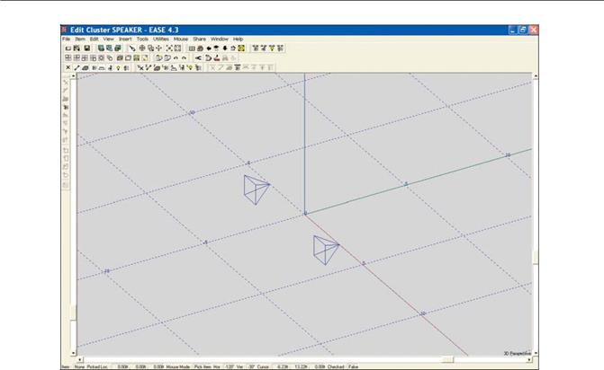
Note that changing to the STX4/44 Introduced outline (wireframe) drawings (Case drawings) of the loudspeaker. We will need the Case drawings to make sure our Cluster is physically possible. If you chose to use another loudspeaker and the wireframe drawing doesn’t ap-pear it’s probably because the manufacturer of the loudspeaker you chose did not include a Case drawing in his loudspeaker file. Another possibility is that the Case drawings are not selected in the Options folder.
You can verify the Case drawing setting by going to the Options folder (F9 or right click on the screen and select Options) and opening the Items tab. Symbols and Cases should be checked.
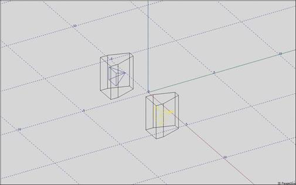
131
EASE 4.3 User’s Guide & Tutorial

The Cluster module is going to want both loudspeakers designated as Active loudspeakers, so select (pick) one of them and then open its Mouse menu by right clicking to open the Mouse menu and select Activate. Note that the loudspeaker symbol is now red instead of being blue when it is not selected to show that it is Active. Repeat the procedure with the other loudspeaker. Another way of turning the loud-speaker Active is the F8 key command. Selecting the loudspeaker and then pressing the F8 key command will turn the loudspeaker Active. Note that pressing F8 a second time would deactivate the loudspeaker.
We are now ready to see how our cluster performs. Press F5 to Check Data and then open the Insert pull down menu and select Recom-pute Cluster. This will open the screen shown below.
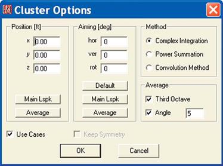
The Position (Ft.) and Aiming (deg) fields are used primarily to place and aim clusters in the Edit Project mode. Position (Ft.) places the center (reference point) of the Cluster and Aiming (deg) sets up the reference axis. For our purposes, the Average or Default settings are fine.
We'll also accept the Complex Integration Method of calculating the cluster's performance. It uses running time complex interference to cal-culate the directivity balloon and gives the most realistic results. Power Summation uses simple energy addition for the calculations and the Convolution Method uses a formula developed by Mark Ureda. Approving the setup by clicking on OK will produce the wire lattice screen shown below. Note that it may be hidden by the Edit Cluster screen, so minimize the Edit Cluster screen if you can't see the wire lattice screen.
.
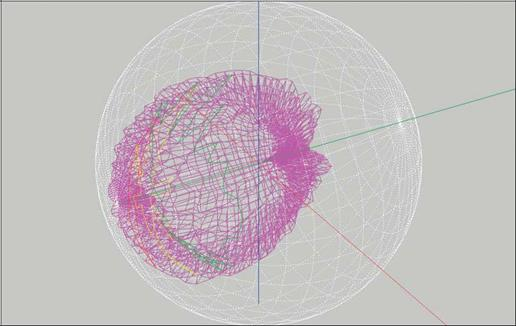
132
Chapter 5: Cluster Construction

As you can see, it's difficult to read. To get a better picture, open the Mapping pull down menu and select Render Balloon. Render Balloon offers a wide range of far more descriptive displays. A top (overhead) view of the cluster balloon is shown below.
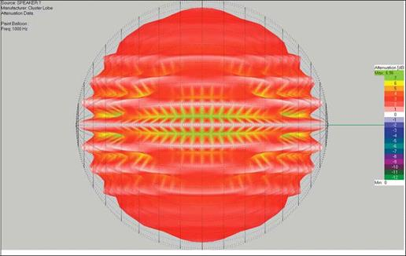
Use the Zoom [F11] tool and the scroll bars to study the cluster's performance. Notice the severity of the lobing. If you can't see all the col-ors in the color chart, open the Utilities pull down menu and select either Show Legend or Insert Legend. This will introduce a new color legend with scroll bars so you can identify all the colors.
This cluster's severe lobing is typical for a pair of loudspeakers mounted side by side, but a few feet apart. It shows in a very graphic fash-ion why this type of arrangement should be avoided..
We obviously need to bring the loudspeakers together into a "tight pack" array. This means we have to return to the Edit Cluster window. If the Balloon screen is obscuring the Edit Cluster window, either minimize it or click on the Edit Cluster icon in the Windows status bar at the bottom of the screen. Start by switching the screen from the 3D view to Top view (Use the Down Arrow icon in the Tool bar.)
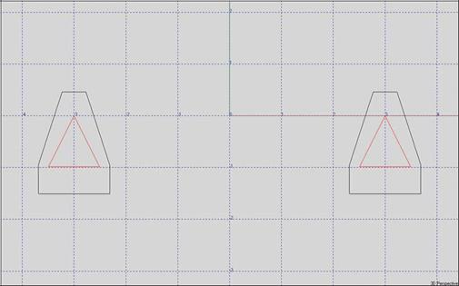
133
EASE 4.3 User’s Guide & Tutorial

Pick S1 and then open its Properties folder. Then change the x value from 3 to 0.5 and hit Apply to see the result. Now you see why it’s important to have the Case drawing. The array isn’t physically possible as the loudspeaker cabinets overlap.
Note that the previous paragraph assumed you were in the symmetrical modeling mode. If you are not, you will need to select S2 and change it to -0.5 before you can see the overlap.
It's also apparent that we need to rotate the cabinets.
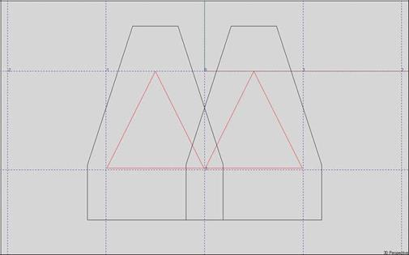
The STX4/44 is an 18 degree trapezoidal cabinet. Insert 18 into the Hor. Angle field and view the result using Apply. Next, try 0.37 as the X value. This should put S1 into the correct position. OK the changes.
Now repeat the operation with S2, only change the x value to -.37 and the Hor. angle to -18. View the result and then hit OK.
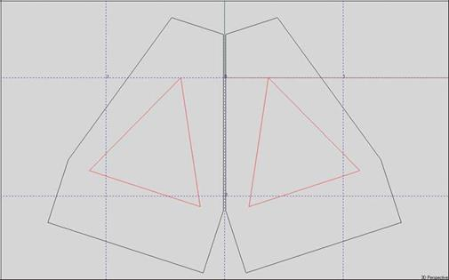
134
Chapter 5: Cluster Construction

A 3D view of the Custer is shown below. Note that there are two loudspeaker symbols. The Cluster is still viewed by EASE as two loud-speakers.
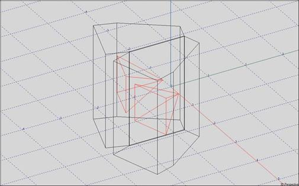
To view the performance, hit F5 to tell the program to Check Data. This will also transfer the data from its temporary storage spot to the Main file, assuming Auto Apply is turned On in the Main Option menu. Then open the Insert pull down menu and select Recompute Clus-ter. OK the setup and then view the wire lattice screen presentation. Now go to the Mapping pull down menu and select Render Balloon. As you can see most of the severe lobing has disappeared.
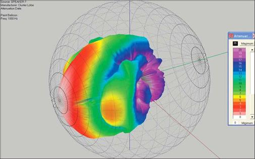
In this exercise we brought the two loudspeakers together by using their Properties folders. Another way, and the one that is usually used, is to use the Shift + Arrow Key Commands to move the loudspeakers. To see how this works, select one of the loudspeakers and then hit Shift + Right Arrow. The selected loudspeaker undoubtedly moved far more than you anticipated. That is because the default Stepwidth setting is 3.28 feet. Right click on the screen to open the Mouse Menu, select Stepwidth and change the Step distance to .02 or .03 and OK. Then, use the Shift + Arrow Key Commands to move the loudspeakers. It's the easy way to go when you don’t know the exact coordi-nates.
135
EASE 4.3 User’s Guide & Tutorial

Now, that we are happy with the cluster's performance, it is time to save it as a single loudspeaker. Return to the Main Speaker Base win-dow, open the File pull down menu and select Save Speaker (or use the Ctrl + s key command). A prompt will appear asking you to name the loudspeaker. Use Cluster_1 as the name, verify that the location in which the file is being saved is the location where you want it saved and then click on OK.
To verify that a new loudspeaker file has been created, reopen the Circus_2 project created in the previous exercise and select the Insert Loudspeaker [l] tool. Click on the screen and when the Loudspeaker Properties window appears place the loudspeaker at 0, 30, 45. Press the [.] change button and then Browse to open the loudspeaker database. Select Cluster_1, add it to the project menu and OK. Now ap-prove the insertion by hitting OK.
Zoom in on the Loudspeaker and you'll see the two cabinet cluster was added as a single loudspeaker. Although the wireframe shows two cabinets, there is only one loudspeaker symbol.
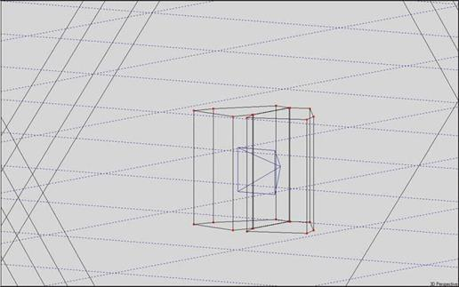
Note that if the wireframe doesn’t show in the model, it’s because you are still in the symmetrical modeling mode. Go the Room Data (right click on the screen and select Room Data) and turn off (uncheck) Room Symmetric.
The Cluster Program enables you to construct clusters of different sizes and types, study their performance and then save them for future use. You are encouraged to spend a few minutes modeling some of the clusters you have used in your projects and studying their perform-ance. Try changing models to see how much difference this makes. What you find may surprise you. You will learn that all loudspeakers are not created equal when it comes to cluster performance. Some loudspeakers, such as the SRX4/44, array much better than others.
One word of caution. EASE cannot accurately calculate the performance of clusters unless it has accurate phase information on the loud-speakers used in the cluster. Many of the loudspeaker files in 4.3 were imported from earlier versions of EASE and do not include phase information. As a result, EASE 4.3 is not able to accurately project their performance in clusters.
If you aren’t sure phase information is included in the loudspeaker you are using, go to the Loudspeaker DataBase, open the Loud-speaker’s folder, and select Phase Data from the Edit pull down menu. If the spreadsheet contains only 0s, (zeros), phase data is not in-cluded.
136
Chapter 5: Cluster Construction

Using Edit Project to Build Clusters
Now, lets try out the Cluster building capabilities of the Edit Project module. Delete the cluster we just added to the Circus_2 model. We are going to build the same cluster using the Edit Project program module. We'll start by switching to the overhead view and using the Mouse menu to select Edit xy Plane. Set the Plane level at 48 Ft.. Then use the Insert Loudspeaker [l] icon in the tool bar sor to insert a loudspeaker. When the Loudspeaker Properties sheet opens, insert the loudspeakers exact location (set x to 3 and y to 30).
Note that the program placed the loudspeaker at a height of 45 Ft., the editing plane we set up. We want to use the same loudspeakers we used in the previous cluster example, so select the STX4/44. (Use the [.] change button to open the selection window and select the STX4/44.) Then OK. Use the Insert Loudspeaker [l] icon to insert the second loudspeaker at x = - 3 and Y = 0.
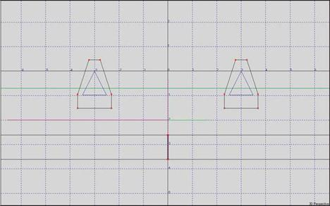
The loudspeakers need to be turned Active. Use the Activate command in the Mouse menu to individually turn them Active or go to the Item pull down menu and choose Select Active Items/Loudspeakers. Turn them On. Now it is time to Check Data again [F5]. Then open the Insert pull down menu and select Calculate Cluster Note that we are duplicating the steps we took in the previous example when we cre-ated a cluster using the Main Speaker Base program. As soon as you OK the setup, EASE will ask you to name the cluster.
After you finish naming the cluster, EASE will calculate its performance and then ask if you want to Replace Active Loudspeakers. Answer-ing Yes will change the screen to the one shown below. Note that the two loudspeaker symbols turned into a single symbol centered be-tween the two wireframe drawings. The program now sees the two loudspeakers as a single device.
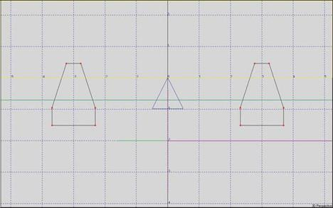
137
EASE 4.3 User’s Guide & Tutorial

The program also asks if you want to Show Balloon. Answering Yes will open the 3-D balloon display showing the clusters performance. A quick comparison between this balloon and the one generated in the Main Speaker Base example will show you that they are identical.
You can obtain further verification of this by ungrouping the cluster and then moving the two loudspeakers together as we did in the previ-ous exercise. To do this, go to the Insert pull down menu and select Explode Cluster. It's that simple. Now, proceed to bring the loud-speakers together just like you did before and then make a Cluster just as you did before. When you are done, you'll again see that the performance is the same as the Cluster built under the Main Speaker Base program.
Several words of caution:
1. Cluster performance is calculated only for the Far Field and should not be utilized for Near Field simulations.
2. If the distance between the loudspeakers in an array is too great, the cluster algorithms show results similar to those ob-tained with single loudspeakers because of the small amount of interference between the individual loudspeakers. The rule is that the distance between loudspeakers should not be greater than a wavelength at 100 Hz for meaningful results. Trying to evaluate lower frequencies is of little value because the patterns are essentially non directional.
Turning Clusters into Objects
It's easy to turn loudspeaker arrays into an Object having many of the same characteristics as a Cluster. As an Object they can be Dupli-cated, Displaced, Turned, Rotated and Saved as a single item just like any other Object. They also look just like a Cluster.
The main difference is that the individual Loudspeakers retain their identity and are not grouped together as a single loudspeaker, as they are in the Cluster module. This allows EASE to correctly calculate both the free space Far Field directivity balloon and the individual Near Field directivity balloons. The entire directivity behavior is distance related correct, both in the Far Field and in the Near Field. The other difference you will notice is that instead of being saved as an .obj file like other Objects, Cluster Objects are saved as a .fla file containing all the loudspeaker Properties.
Let's try it out. Return to the Circus_2 model, select the Cluster, go to the Insert pull down menu and select Explode Cluster to turn the Cluster back into two individual loudspeakers. Then go back to the Insert pull down menu and use Create Object to turn the two loud-speakers into an Object. If you have forgotten the steps to creating an Object or skipped that part of the Tutorial return to page 123 to re-view the steps.
When you are done, the Object (Cluster) will look like this.
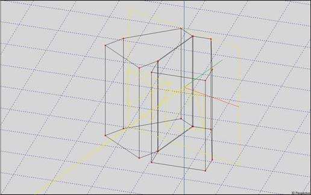
138
Chapter 5: Cluster Construction

Note that you can still select the loudspeakers individually and manipulate them just like you can any individual loudspeaker. You can ro-tate, turn, move, adjust power levels, change models, etc. The loudspeakers are also treated individually in all calculations and all calcula-tions performed with these arrays will take longer than those performed with a Cluster. But, when Interference is turned On they will be more accurate in the Near Field. In the Far Field the results will be the same.
Of course, Cluster Objects can also be saved and used again in other projects. Select the Object and use the mouse menu and Save As.
Creating Case Drawings
Case or Wireframe drawings serve two useful functions. First, they allow you to verify that the loudspeaker placement(s) are physically possible; i.e., that part of the cabinet doesn't protrude through the ceiling or that the cabinets in an array are not overlapping. They are also useful in showing clients how the loudspeaker(s) will appear in their room.
Creating Case drawings (Wireframe drawings) for loudspeakers that do not have a Case drawing is a relatively simple procedure and does not affect the Loudspeaker's authentication. You can create a Case drawing for any loudspeaker and save it without losing the loud-speakers authentication.
Open the File pull down menu in the EASE Main menu window and select Main Databases/Speaker Models/SpeakerBase. When the Main Speaker Base module opens, select New Speaker from the File pull down menu. Then select Case from the Edit pull down menu. This will open a slightly modified version of the Edit Room module. Here you will construct the loudspeaker Case (wireframe) drawing, just as you would construct a room.
The difference is that we will be creating a wireframe drawing using Edges, instead of creating Faces as we have done in our other exer-cises. We’ll start with a basic rectangular loudspeaker. We'll assume the loudspeaker is 36" tall, 18" wide and 24" deep (3’ tall, 1.5’ wide and 2’ deep).
We’ll start by inserting a Vertice at 0, 0, 0. Then Duplicate/Displace it by -2’ in the x field to create the other bottom front corner. Then use the Insert Edge [e] tool to create the bottom Edge. After that it’s a simple matter of using Duplicate/Displace to create the other front and rear Edges. The final step in creating the cabinet is to use the Insert Edge [e] tool again to add the side edges.
When you are done your drawing will look like this.
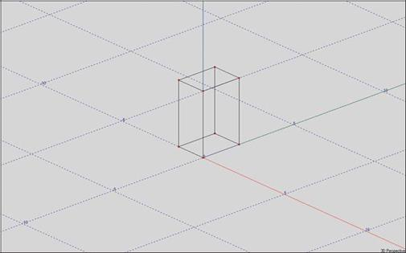
139
EASE 4.3 User’s Guide & Tutorial

Creating a wireframe drawing for a trapezoidal cabinet is almost as easy. The only problem you may encounter is not knowing the width of the rear of the cabinet. That doesn’t present a problem if you know the side angles. For our purposes let’s assume we are working with a 15 degree trapezoidal cabinet of the same height, width and depth of the previous cabinet.
Start by inserting the two front corner Vertices (0,0,0, and -2, 0,0). Then select one of the Vertices, P2 for example and open the Mouse menu and select Duplicate. We’ll be using the Polar capabilities of Duplicate/Displace to insert the rear Vertices. Insert 2 into the Dist field (the cabinet is 2 feet deep) and 165 (180 minus 15) into the hor: field.
Note that as you do this, the program calculates the Cartesian distances and the y distance ends up being less than 2. We want the cabi-net to be 2 feet deep, so change y back to 2. Note that as you do this the program recalculates the Polar dist (the length of the line be-tween the two Vertices). Click OK to insert the Vertice.
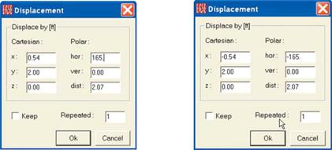
Use the same procedure to insert the other rear Vertice only change the Polar hor: figure to -165.
Now that the four bottom Vertices are in place it’s a simple matter to Duplicate/Displace them 3 feet in the z direction tocreate the top ver-tices. Adding the Edges is a snap with all the Vertices in place.
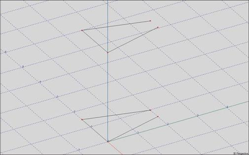
The last step is to change the location of the 0, 0, 0 point from its present location to where the cabinet’s Insertion or Reference (Rotation) point is located. Most manufacturers use the point they used as the center of the directivity balloon while they were taking measurements; i.e., the point around which they rotated the cabinet. Typically this point is placed at the rear of the high frequency horn.
140
Chapter 5: Cluster Construction

The 0, 0, 0 point is currently the lower right corner of the cabinet. Let’s assume we want the Insertion point to be 12” from the top of the cabinet and 6” from the rear on the center line (x axis).
To do this, go to the Tools pull down menu and select Move Point of Reference to open the dialog box shown below.
The important thing to remember when filling in the x, y, z move parameters is that you will actually be moving the cabinet and not the Ref-erence Point. It stays at the same spot and the cabinet moves. The correct values are shown below.

The final wireframe drawing is shown below. The 0, 0, 0 point is where the drawing will be inserted into a project.
The last step is to save the Wireframe drawing. First Check Data[F5]; then close the Edit Case Speaker window and return to the Speaker module. Answer Yes to the Apply Project Data prompt that appears and then go to Save Speaker under the File pull down menu or do a Ctrl + S to save the file.
Creating New Loudspeaker Files
It's possible that you may have occasion to add a new loudspeaker to the Speaker Database either by importing measurement data or by manually inserting the data.
The details for adding loudspeaker data into the Speaker Database can be found in the EASE SpeakerBase section of the EASE Manual.
It's Chapter 10. The EASE Manual is stored as a PDF document under Program Files/EASE 4.3/EasePath/Ease43Manual.
Additional information can also be found on the Web at olsonsound.com/ease/index.html.
141
Chapter 6: Import / Export Capabilities

I M E X
I m p o r t / E x p o r t M o d u l e

143
EASE 4.3 User’s Guide & Tutorial

Chapter 6. Import / Export Capabilities
Introduction
The IMEX Import & Export Module included in EASE JR and EASE allows a wide variety of different file types to be imported into the pro-gram and most EASE files to be exported in a number of formats.

EASE 2.1, CADP2, ASCII, Google SketchUp and AutoCAD DXF Files can all be imported, while most EASE 4.3 data files can be exported to other programs as either Google SketchUp, AutoCAD DXF or ASCII Files, or exported directly to EASE 3.0. EASE 3.0 Files open automatically in 4.3 and do not need to be imported.
To open the IMEX Import/Export Module select Import/Export from the File pull down menu in the Main EASE screen. When the IMEX window opens, open the Tools pull down menu shown here.
Note that if you enter the IMEX module as a “stand alone” module (without a project loaded) the Export listing will be grayed out.
Import EASE 2.1
To import existing EASE 2.1 files, select Import EASE 2.1 to open the sub-menu shown here: The first three choices are used to Import old EASE 2.1 projects into 4.3. The first option, Project / Global Base will install the EASE 2.1 Loudspeaker and Material database files that are a part of the EASE 2.1 project file into the EASE40Data Global Speaker and Material database folders.

The second option, Project / Local Base, will install the EASE 2.1 Loudspeaker and Material database files along with the project files. It allows you to keep the old database files separate from the newer database files.
The third choice, Project Group / Local Base is used to import a group of 2.1 project files into 4.3. Note that the data files will be kept separate from the EASE 4.3 database files.
The second set of import choices, Speaker File and Speaker Folder, allow existing EASE 2.1 Loudspeaker files to be imported into 4.3. Speaker File imports a single loudspeaker data file, while Speaker Folder imports a group of loudspeaker data files. The Speaker File method is recommended since it provides you with more control over the import routine. Note that all imported loudspeakers will be marked "Non-Authorized."
Material File and Material Folder perform the same functions for Wall Materials. In all cases, make your selection and then follow the Prompts.
Export EASE 3.0 Project
Export EASE 3.0 Project provides a means of converting and exporting an EASE 4.3 Project File as an EASE 3.0 Project File. Note that this option is not available unless a Project has been loaded into the program.
The conversion, however, is not always a perfectly smooth one and some editing of the 3.0 Project File may have to be done. Also note that none of the 4.3 Data Files, (Loudspeakers, Wall Materials, etc.) will be exported. They cannot be converted from 4.3 to 3.0 files. This means the loudspeaker and materials used in the 4.3 project must exist in the 3.0 Databases as 3.0 files
EASE 4.3 will export the converted Project file as a Packed (zipped) file. When installing it in 3.0, make sure the Base File Find option is checked. Then EASE 3.0 will attempt to reassign the 4.3 Wall Material and Loudspeaker pointers.
144
Chapter 6: Import / Export Capabilities

Import CADP2

Import CADP2 is used to import existing CADP2 Job Data into EASE 4.3. Click on Import CADP2 to open the sub-menu shown here, then select the file type and follow the prompts.
Note that CADP2 Devices and Absorbers should be imported first, Array Files next and then the Job File.

Import ASCII
Import ASCII allows "Comma And Quotes-Delimited" ASCII Files created by spread sheet programs for Speaker Models, Wall Materials, Lamps and IR Emitters to be imported into the program. Edges, Faces, Loudspeakers, Audience Areas and Listener Seats ASCII files created by EASE 3.0, 4.0, 4.1, 4.2, and 4.3 can also be imported.
Select Import ASCII, then make your selection from the sub-menu shown and follow the Prompts.
Note that the file name extension filter is different for each item. Examples of properly formatted ASCII files can be viewed by using Windows Explorer to browse to Program Files/EASE 4.3/EasePath/Exam-ples_ASCII.

Import ASCII (EASE 2.1)
ASCII files generated by EASE 2.1 are formatted differently than the ones created by EASE 3.0 and EASE 4.3. The Import ASCII (EASE 2.1) option opens the sub-menu shown here to allow these files to be imported into EASE 4.3.

Export ASCII
Export ASCII allows EASE 4.3 project files to be exported in ASCII format for use in other programs such as Word or Excel. Note that this option will not be available unless you have loaded a project into the program. Then select Export ASCII and make your choice from the sub-menu shown below.
Import DXF / SKP
Import DXF / SKP allows files created by Computer-Aided-Design (CAD) programs to be imported into the program. See the CAD File Transfer section that follows for more information.
Export DXF
Export DXF allows EASE 4.3 project files to be exported in DXF format for use in AutoCAD. Note that this option will not be available un-less you have loaded a project into the program. See the CAD File Transfer section that follows for more information.
Export SKP
Export SKP allows EASE 4.3 project files to be exported to Google SketchUp. Note that this option will not be available unless you have loaded a project into the program. See the CAD File Transfer section that follows for more information.
145
EASE 4.3 User’s Guide & Tutorial

Computer-Aided-Design (CAD) File Transfer
Both EASE and EASE JR have facilities to Import and Export both DXF and SketchUp files. This means that drawing files can be ex-changed between EASE/EASE JR and any 3D CAD program that can work with DXF or SketchUp files.
For the following exercises we will assume you will be exchanging files with AutoCAD 2010 or Google SketchUp 7. It's possible to use other 3D CAD programs or older versions of AutoCAD or SketchUp in a similar manner; however there may be differences in procedure. EASE exports files that are compatible with Google SketchUp 6 and AutoCAD 2000 DXF. Review the operations manual for your CAD pro-gram if you have any doubts.
The Export process is relatively simple. The first step is to open the project you want to export. We'll use Theater 1 for this exercise. There are two ways to do this, using the Main menu or by opening the EASE IMEX module as a stand-alone module.
If you choose the Main menu method, select Import/Export from the Main menu bar's File pull down menu after loading the project. This will open the EASE IMEX Import/Export program module with a blank screen. Then follow the instructions for exporting DXF or SXP files that follow.
If you choose to run the EASE IMEX module as a stand-alone module, select Close Project from the Main menu's File pull down menu, then select Import/Export from the Main menu's File pull down menu. When the IMEX module opens, select Open Project from the File pull down menu and browse to Theater 1. Click OK. Then follow the instructions for exporting DXF or SXP files that follow.
Exporting DXF Files from EASE
Select Export DXF from the Tools pull down menu. This will open a window asking you for the name of the file you are creating and where you want it saved. Enter the requested information and then press Save to open the Export DXF screen shown below.

The DXF Length Unit section provides a means of rescaling the model before exporting it. EASE works in Meters (internally it converts Meters to Inches for non Metric users) and you may want to rescale the drawing before exporting it. For example, if you are exporting the drawing for use by an Architect, you may want to rescale the drawing to Inches. Most architects work in Architectural units (inches con-verted to feet and inches for display purpose).
The EASE -> DXF section provides two options for the export of the Face coordinates. Selecting Convert EASE Faces to: 3D PolyFaces will create entities that can be shaded and rendered in AutoCAD. Because the faces of the mesh are planar, the mesh will approximate curved surfaces in the same way that EASE does and will maintain the structure of the EASE Faces and the exact Vertex coordinates.
Convert EASE Faces to: 3D Polylines will create entities that will not be rendered in AutoCAD. This option is the best choice for programs that do not support 3d PolyFaces and will maintain the structure of the EASE Faces and the exact Vertex coordinates. Press OK to close the window and export the DXF File.
146
Chapter 6: Import / Export Capabilities

Importing EASE DXF Files into AutoCAD
Open AutoCAD and select Open from the File pull down menu. Select the Files of Type: drop down menu and change it from Drawing
(*.dwg) to DXF (*.dxf). Then Browse to the DXF file you created for this exercise and press Open. That's all there is to it. The model is now in AutoCAD as a drawing and can be manipulated in AutoCAD just like any other AutoCAD drawing.
Select SE Isometric from the sub-menu 3D Views in the View pull down menu to display the drawing similar to the default 3D view in EASE. Note that all the elements of the EASE model were exported.

The Export/Import routine placed the various EASE drawing items and materials on different Layers in the AutoCAD drawing and assigned names and colors to the Layers that correspond to their EASE Wall Material names and colors. For details, go to the AutoCAD Format pull down menu and select Layers. This will open the AutoCAD Layer dialog shown below.

147
EASE 4.3 User’s Guide & Tutorial

Exporting SKP Files from EASE
Select Export SKP from the Tools pull down menu. This will open a window asking you for the name of the file you are creating and where you want it saved. Enter the requested information and then press Save to open the Export SKP screen shown here.

The EASE -> SKP section provides two options for the quality of the drawing export. Selecting Quality of Drawing: Draft (fast) is the quickest way to create a SketchUp drawing and can be used if there are no or only a few EASE Faces that are not exactly planar. This is the Default setting.
Quality of Drawing: Good (slow) will create a SketchUp drawing that groups all non-planar EASE Faces to create a higher quality rendering in SketchUp. This can take a long time to convert if there are many non-planer EASE Faces. Use this setting if the Draft setting has too many extra lines on the surfaces.
Importing EASE SKP Files into SketchUp
Open Google SketchUp and select Open from the File pull down menu. Then Browse to the SKP file you created for this exercise and press Open. That's all there is to it. The model is now in SketchUp as a drawing and can be manipulated in SketchUp just like any other SketchUp drawing.
Select Iso from the sub-menu Standard Views in the Camera pull down menu and then press Ctrl-Shift-E to display the drawing similar to the default 3D view in EASE. Note that all the elements of the EASE model were exported.

The Export/Import routine placed the various EASE drawing items and materials on different Layers in the SketchUp drawing and assigned names and colors to the Layers that correspond to their EASE Wall Material names and colors. For details, go to the SketchUp Window pull down menu and select Layers. This will open the SketchUp Layer dialog shown on the next page.
148
Chapter 6: Import / Export Capabilities

Importing AutoCAD® DXF Files into EASE
Importing AutoCAD 3D DXF drawing files into EASE is just as simple as exporting an EASE model to AutoCAD as a DXF file -- when the AutoCAD drawing has been properly formatted.
Unlike EASE 3.0 which could import only DXF drawing files created with 3D Faces, EASE 4.3 can import most AutoCAD drawing ele-ments. The main exceptions are Solids and Regions. Fortunately, they can easily be converted to elements that can be read by EASE using the XEDGES command in AutoCAD 2007 and later. In fact, if you have AutoCAD and want to model the room in AutoCAD and then Export it to EASE, you may want to construct the AutoCAD model using 3D Solids and then use the XEDGES command before exporting it to a DXF file that EASE can use.
At this point, you may want to take a few minutes to review the Import-Export-DXF section of the EASE Manual. It contains some very useful hints. You'll find the DXF section in Chapter 13.
The EASE Manual is stored as a PDF File under C:/ProgramFiles/EASE4.3/EasePath/EASE43 Manual. Additional information on Importing DXF files can also be found on the web at olsonsound.com/ease/index.html.
If you do not have AutoCAD and are working with an Architect who does, be sure to tell him of the limitations of the Import routine. In fact, you may want to copy this portion of the Tutorial and the DXF section of the EASE 4.3 Manual and give it to him as a guide.
Note: EASE like other similar programs cannot convert 2D drawings into a 3D model. However, 2D drawings exported as DXF files can be imported into EASE. Some users will import the room's 2D floor plan drawing into EASE and then use it as the foundation for their 3D EASE model.
To import a file, return to the EASE IMEX Import/Export program module (select Import/Export from the Main menu bar's File pull down menu) and select Import DXF/ SKP from the Tools pull down menu. This will open a window asking for the name and location of the file you want to Import.
We might as well use the Theater 1 DXF File we created under Export DXF. Browse to it and press OK.
This will bring up the Import DXF Setup screen shown on the next page.
149
EASE 4.3 User’s Guide & Tutorial

We will start by setting the Vertex Snap Cube to 0. This will bring in all the Vertex coordinates without altering their location. This is a good way to start, especially if you are importing an unknown model.
We'll accept the default settings for Plane Face Tolerance, Min. Circle Sectors and Max. Arc-Sector Length. We may want to change these later after we have had a look at the imported model. The Min. Circle Segments setting of 8, for example, is fine for importing small circles but may be too low for any large circles. We won't know until we have imported the project and looked at it.
We will also leave all the checkboxes unchecked. This will keep the import time to a minimum. This is a good practice to follow when you are importing an unknown file. Your first objective is to open the file to see what you have.
Press OK to close the window and import the DXF File.
The Assign Wall Material window shown on the next page will open.
In this case all of the materials were correctly assigned based on the Layer Names from the imported file.
Select the Assign from List or Assign from File button when a row is selected to change the Assigned EASE Material for that Layer in the imported file.
If you intend to import this project multiple times or will be importing a number of files that use the same set of Wall Materials then you should press the Save Map button to create a text-formatted map file that contains a table of layer names and Wall Material files. You can then use the Load Map button when importing the subsequent files to assign the materials to the same layers.
Refer to the EASE 4.3 Manual or the Help files for a description of the rest of the options and buttons in this window.
150
Chapter 6: Import / Export Capabilities

Select OK to close the dialog window. A Save File prompt will appear giving you the opportunity to save the File as an EASE Project File. You can either save it now or save it later, after you have had a chance to look more closely at the imported DXF File. We suggest taking a closer look before saving it, but the choice is yours. Save or Cancel the Save File prompt and the File will open in the IMEX window shown below.

151
EASE 4.3 User’s Guide & Tutorial

If you have AutoCAD and had the opportunity to look at the model in AutoCAD, you will note that the item colors are the same as the colors were in AutoCAD.
Normally your first step would be to check the dimensions of the model to see if you used the right scaling for the Import. You'll find the overall dimensions listed in the upper left corner of the screen. If they appear to be much too large or too small, you can either import the file again or open the Edit pull down menu and select Rescale Project to rescale the model's dimensions.
Next, look carefully at the drawing. Does it look like you anticipated or do you suspect that some details or items are missing? If so, who-ever created the DXF File in AutoCAD, may have turned one or more Layers Off or Frozen them before creating the DXF File. Try import-ing the File again, only this time check Read “off” and “frozen” Layers in the Options section of the Import DXF window. This will "unfreeze" the Frozen Layers and turn "On" any that were turned "Off".
Be aware that some of the Faces/Edges may be difficult to see on small or low resolution screens because of the lack of contrast between the material colors and the background color of the IMEX window.. In most cases, the Faces/Edges are there, you just can’t see them. To verify that they are there Save the file and open it in Edit Project.
Now, it's time to save the file as an EASE Project File if you didn't save it immediately after importing it. If you didn't save it previously, go to the File pull down menu and select Apply Project Data. This will close the IMEX Import/Export program module and allow you to save the project in the EASE Main window.
Note that the preceding paragraph assumes you followed the Tutorial closely and had a project open when you entered the IMEX program module. If you opened the IMEX program module as a stand-alone module (without having first loaded a project) the Apply Project Data command line won't be available to you. You have to go to the File pull down menu and select Save As and then manually close the IMEX Import/Export program module.
Then select Open Project from the Edit pull down menu in the Main window, browse to the Project File you created, open the project and go to the Edit Project Data mode. Note that the Vertices and Faces are all there.
Importing Google SketchUp SKP Files into EASE
Importing Google SketchUp SKP drawing files into EASE is just as simple as exporting an EASE model to SketchUp as a SKP file when the SketchUp drawing has been properly formatted.
We might as well use the Theater 1 SKP File we created under Export SKP. Browse to it and press OK. This will bring up the Import SKP Setup screen shown below.

We will leave the Include Invisible Structures checkbox unchecked. If there are invisible elements in the SketchUp file that need to be im-ported this checkbox should be checked.
152
Chapter 6: Import / Export Capabilities

Press OK to Import the SKP File.
The Assign Wall Material window shown below will open.

In this case all of the materials were correctly assigned based on the Layer Names from the imported file.
Select the Assign from List or Assign from File button when a row is selected to change the Assigned EASE Material for that Layer in the imported file.
If you intend to import this project multiple times or will be importing a number of files that use the same set of Wall Materials then you should press the Save Map button to create a text-formatted map file that contains a table of layer names and Wall Material files.
You can then use the Load Map button when importing the subsequent files to assign the materials to the same layers.
See the EASE4.3 Users Manual or the Help files for a description of the rest of the options and buttons in this window.
Select OK to close the dialog window and the File will open in the IMEX window shown on the next page.
153
EASE 4.3 User’s Guide & Tutorial

The File will open in the IMEX window.

A Save File prompt will also appear giving you the opportunity to save the File as an EASE Project File. You can either save it now or save it later, after you have had a chance to look more closely at the imported SKP File. We suggest taking a closer look before saving it, but the choice is yours.
If you have SketchUp and had the opportunity to look at the model in SketchUp, you will note that the item colors are the same as the col-ors were in SketchUp.
Normally your first step would be to check the dimensions of the model to see if the right scaling was used for the Import. You'll find the overall dimensions listed in the upper left corner of the screen. If they appear to be much too large or too small, you can open the Edit pull down menu and select Rescale Project to rescale the model's dimensions.
Be aware that some of the Faces/Edges may be difficult to see on small or low resolution screens because of the lack of contrast between the material colors and the background color of the IMEX window.. In most cases, the Faces/Edges are there, you just can’t see them. To verify that they are there Save the file and open it in Edit Project.
Now, it's time to save the file as an EASE Project File if you didn't save it immediately after importing it. If you didn't save it previously, go to the File pull down menu and select Apply Project Data. This will close the IMEX Import/Export program module and allow you to save the project in the EASE Main window.
Note that the preceding paragraph assumes you followed the Tutorial closely and had a project open when you entered the IMEX program module. If you opened the IMEX program module as a stand-alone module (without having first loaded a project) the Apply Project Data command line won't be available to you. You have to go to the File pull down menu and select Save As and then manually close the IMEX Import/Export program module.
Then select Open Project from the Edit pull down menu in the Main window, browse to the Project File you created, open the project and go to the Edit Project Data mode. Note that the Vertices and Faces are all there.
154
Chapter 6: Import / Export Capabilities

Some Hints For Those Who Do Not Have AutoCAD
Now, let's take another look at some of the problems you may encounter when you Import an unknown file.
Importing an AutoCAD DXF File of unknown properties when you don't have AutoCAD and can't look at the drawing or modify it can be a real challenge. Fortunately EASE 4.3 includes a number of tools that can help you.
What if the File doesn't Import? This is a sign that the DXF does not have any importable elements, or that all layers are frozen or the File format is wrong. All you can do is to go back to the source of the DXF File and review with them what you need.
What if you can see a multitude of lines in the drawing, but very few Faces? Try importing the drawing again, only with the Closed Multiple Lines to Faces option turned On in the Import DXF Setup window. The import routine will then create a Face from any set of lines, polylines and arcs that are planar and when connected end-point to start-point they enclose an area.
What if the drawing includes a multitude of small Faces? Try the Collect Scattered Faces option. Collect Scattered Faces will create a single Face from any set of Faces that are planar and completely fill an area.
When you select Collect Scattered Faces, two new options will appear, Cut Intersecting Faces and Overlap Test. Collect Scattered Faces may produce Faces that intersect (have one Face going through another without creating an intersection). Cut Intersecting Faces will cut these Faces into pieces.
Collect Scattered Faces may also produce Faces that look incomplete. When this happens, check the Overlap Test. This should solve the problem.
What if Collect Scattered Faces only eliminated a few of the small Faces? Try rerunning the import routine with a larger Plane Face Tolerance. This will enable the Collect Scattered Faces option to combine more Faces.
What if the drawing has a number of Face borders that contain a number of Vertices? Try the Straighten Border of Faces option. The import routine will look for these Vertices and delete any that are on the Face border between the corner Vertices.
What if the Straighten Border of Face Option only deletes a few of the surplus Vertices? Try rerunning the import routine with a larger Vertex Snap Cube.
What if the drawing includes a number of "Outside" Faces? Try the Waste Outside Faces option. Waste Outside Faces uses a Ray Tracing algorithm to detect inside Faces and mark outside Faces. Outside Faces are assigned a "Waste" wall material in EASE. They are then relatively easy to delete using the Project's Face Table.
If there are a large number of outside Faces and you have AutoCAD, another way to get rid of them is to Export the project back to Auto-CAD. They will all be placed on a Waste layer in AutoCAD and can then easily be deleted by deleting the Layer.
The Ray Tracing algorithm also detects Two-Fold Faces and corrects the orientation of Faces that are improperly oriented.
One word of caution concerning Waste Outside Faces. It uses a so-called Spy-Point as the source of the Detection Rays. Without Auto-
CAD, you have no way of knowing where the Spy-Point(s) is (are) located or how many of them are included. The odds are that the Auto-
CAD drawing won't have any Spy-Points, but you never know until you have tried it.
If the AutoCAD drawing doesn't include any Spy-Points, EASE will place a Spy-Point in the geometric center of the model. Be careful on this one. If you have an L shaped room or some other strange shape, it's possible the geometric center may be outside the room.
Selecting Waste Outside Faces will introduce a sub-menu giving you the opportunity to set the Detection Order for the Ray Tracing Algo-rithm or to use the Auto setting. The Auto setting will run the routine until it assumes that all internal Faces have been found. This can take a long time in models having a large number of Faces. We suggest starting with a low Detection Order.
155
EASE 4.3 User’s Guide & Tutorial

What if only one side of the room imports? Return to the Import DXF window and check Add Symmetrical Entities in the Options sec-tion. The Import routine will then put in the other side of the room as a mirror image.
Can I import just Edges and not Faces? If the model is very complex, it may be easier to just import the structure of the model without any of the planar lines being automatically turned into Faces. In the Import DXF window check the Only Structure (Faces to Edges) in the Options section. The Import routine will only import the edges of the surfaces as EASE Edges. You can then use the coordinates of the Edges to draw your own EASE Faces or Extrude the edges to create Faces. After you are done creating all the Faces you can delete all the Edges using the Edge Table.
As soon as you are satisfied that you have a usable drawing, your first step will probably be to determine if there are any Holes in the Room. The odds are that there may be a few as some of the Faces may be incorrectly oriented. This should be easy to correct using the Find Holes/Fix Holes technique we learned while building Tutorial 1.
If you did not assign materials to all the layers using the Assign Wall Material window then the Color and Material Coupled feature of EASE will simplify the task of assigning materials based on the color of the surface. Open Tables under the Edit pull down menu and select Faces. This will open the Edit Face Table. The Color and Material Coupled command is under the Tools pull down menu. It enables you to change the material of all Faces having the same color by changing the material on just one of them. It's a great time saver if the model has a large number of Faces.
If the AutoCAD drawing didn't include material colors, the simplest thing to do is select one of the Faces, then right click to open the Mouse Menu (or use the Ctrl + F3 key command) to open the Change All Same window and insert the material used on the highest num-ber of Faces. This will take care of all the Faces that use that material quickly and reduce the number of Faces you have to do individually.
156
Chapter 7: Using Optimize RT

U s i n g O p t i m i z e R T
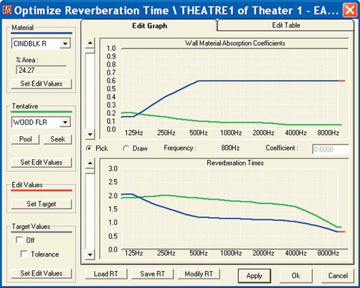
157
EASE 4.3 User’s Guide & Tutorial

Chapter 7: Optimize RT
One of the very powerful analysis tools included in both EASE and EASE JR is Optimize RT.
Our Theater 1 model is not ideal for music because of its low reverberation times. It's a bit dry. Optimize RT is a quick and easy way to in-vestigate what can be done to correct the room acoustics.
Open the Theater 1 model, go to the Edit Project Data module and select Optimize RT from the Tools pull down menu to open the Opti-mize RT window shown below.
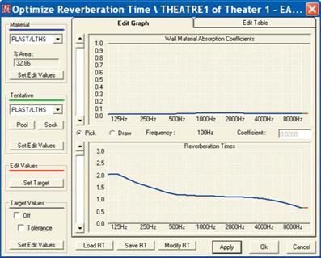
The top graph displays the absorption coefficients of the Material shown in the Material field to the left of the graph; in this case PLAST/LTHS. The figures below the Material window tell you how much of the room's surface area is covered by that material; in this case almost 1/3 of the total surface area.
The down arrow opens a listing of all the materials used in the room. This allows you to quickly scan through the materials and their ab-sorption coefficients. The materials are listed in order based on the percentage of surface area they cover. Note that in this room only 3 materials cover almost 70% of the room's surface. If we are going to significantly change the RT times we are probably going to have to deal with one of these materials (surfaces).
Also note that this module is an excellent spot to quickly review and compare the absorption characteristics of a number of materials. All you have to do is to load them into the project and then you can review them much faster than you can in the Main Material Base module.
The bottom graph shows the calculated RT times for the room. Don't be alarmed if the curve looks a little different than the one shown in Room RT under the View pull down menu. It's the vertical scaling that makes the difference.
The Tentative section of the Optimize RT screen allows you to "tentatively" replace one of the materials with a different material and view the effect. First, choose the material you want to replace in the Material window. We’ll choose CINDBLK R which covers 24.27% of the room’s surface area.
158
Chapter 7: Using Optimize RT

Then in the Tentative section use the drop down arrow to open the list of materials available in the Pool and choose a new material. Choosing WOOD FLR produces the results shown below. The green curves show the changes. It looks like we are headed in the right di-rection.
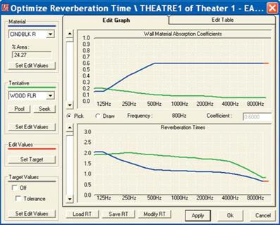
Selecting Pick and then clicking on the Wall Material Absorption Coefficients or the Reverberation Times graphs allows you to change the Absorption Coefficient or RT Times frequency by frequency. Clicking on Draw lets you draw a new desired Absorption Coefficient or RT60 curve. To use Pick, click on a point on the Absorption Coefficient or RT Time curve and then use your Mouse to move the curve up or down at that frequency. To use Draw, click on a point and then use your Mouse to "drag" the desired curve across the graph.
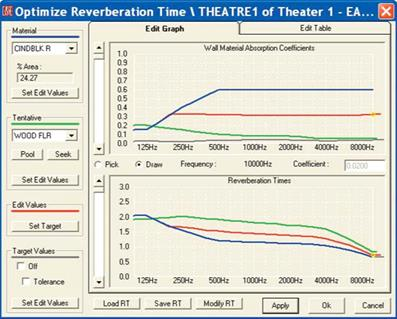
159
EASE 4.3 User’s Guide & Tutorial

Note that as you are drawing new curves, if you don't like the one you have drawn you can erase it by clicking on one of the Set Edit Val-ues buttons. They act as Reset buttons by restoring the original values.
Also notice that the program will not let you do the impossible. The absorption of the PLAST/LTHS surfaces is so small that little can be ac-complished toward increasing the room's RT60 by substituting a material with a lower absorption coefficient. So, the program won't let you set an RT60 time curve higher than the curve you would get if the PLAST/LATHS surfaces were all changed to MIRROR reflectors having no absorption. It will only let you draw a slightly higher RT60 time curve. This tells you that if you are going to make the room more rever-berant, you will have to work on one of the materials covering more surface area.
At this point you can either go through the materials (surfaces) one by one until you find a combination that gives you the desired RT Times or you can enter a desired RT curve (the Target curve) and use Seek to let the program seek out from a Pool of surface materials the one which comes closest to producing the desired result. You can also mark the Target Curve with a Tolerance frame if you like. Put a check in the Tolerance check box under Target Values and then press Set Target under Edit Values.
Select Seek and the program will search the Pool for you and select the best one available in the Pool. For us, the program's initial selec-tion was WOOD FLR, a material we weren’t sure we wanted to use for the surfaces involved). So, we redrew the Target Curve and pressed Seek again to see if the program would come up with anpother material. See how fast it is to try different solutions.
Note that at this point the only purpose of Target Values is to visualize the desired RT and, if wanted a tolerance range. You can also re-turn to Edit Project and expand the Pool of available Materials. To do this, return to the Edit Program windowe and go to The Edit pull down menu and select Select Project DataBase/Select Wall Material to browse through the Material database and make your selections.
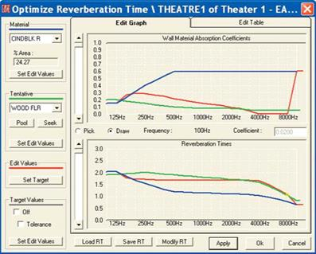
At this point the normal thing to do would be to Apply and OK the change and return to one of the mapping programs to see what effect this change had on the overall system.
Note that we could have also opened the Edit Table Tab and entered the desired Absorption Coefficients or RT Times in the data spread-sheet under Edit Value.
It also should be noted that this example is a little unique in that usually we are looking for a way to decrease the RT Times instead of in-creasing them. The principle is the same, however.
160
Chapter 8: Vision

V i s i o n
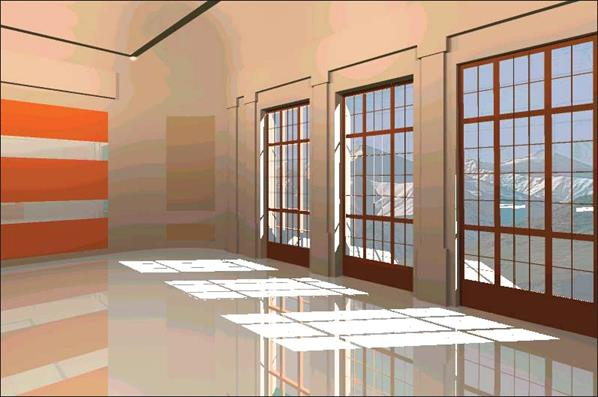
161
EASE 4.3 User’s Guide & Tutorial

Chapter 8: Vision
Vision allows you to enhance the visual aspects of a model by adding light and shadows to the room and Textures to the surfaces.
Open Vision 1 (go to File/Open Project and select Vision 1 or use the desktop icons). When the Loading Complete/Draw Room prompt ap-pears answer No; then select Standard Rendering from the View pull down menu. We’ll take a look at the model in Standard Rendering be-fore we proceed to the Vision module.
This will open the screen shown below. Probably the first thing you will notice is that a large Face has been placed outside the room. Its purpose will become clear when we open the Vision module.
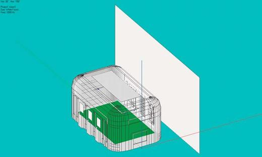
This would probably be a good time to take a good look at the Room. Click on the Walker icon and use it to walk around the Room. When you have finished with your tour, close the Standard Rendering module and return to the Main menu and select Architectural Ren-dering. This will open the screen shown below.
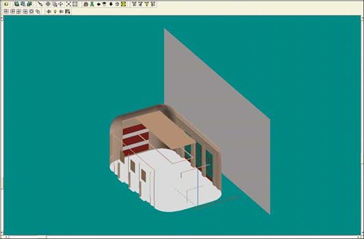
162
Chapter 8: Vision

Note that except for a few color changes, it looks pretty much the same as the Standard Rendering version. Vision has 4 rendering modes and opens in the OpenGL Simple Map mode which doesn’t show reflections, shadows and variations in color or shade. For a better dis-play, open the Calculations pull down menu and select OpenGL Texture Map. OK the setup parameters. Be prepared for the rendering to a minute or two. This model has 899 Faces and the rendering takes time. You can watch the progress in the Process Tile readout above the Tool Bars. The same readout area will post the file size as soon as the rendering is completed.
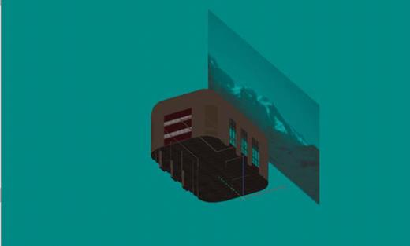
The first thing you’ll probably notice is that the large Face outside the model is a Mountain scene. It’s purpose is to add realism to the model by allowing you to look out the windows while inside the model and see the scenery outside. We’ll do that later.
You probably also noticed the model is dark. The reason is that the lights are not turned on. In Vision, as in real life, you need light to see. Click on the Bulb icon and when the Bulb listing appears turn on all the lights (right click on OK to select all the items and then left click to OK the selection.) OK the Recalculate prompt and the Calculation Setup Parameters when they appear.
You’ll notice a big difference when the rendering is completed.
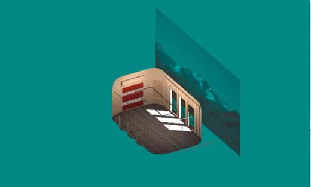
163
EASE 4.3 User’s Guide & Tutorial

Both the OpenGL Simple Map and OpenGL Texture Map rendering modes allow you to move around the model. Select the Walker Icon or just click on the model to open the Walker and take a walk around the room. The Eye Icon in the Walker window gives you a choice of Or-thographic or Perspective views.
You should also try using the Turn feature. Select the Turn icon. Then hold down the left mouse button to turn right or left or up and down, and the right mouse button to move forward, backward, right and left in the room. It’s a quick and easy way to move around the model once you get the feel for it.
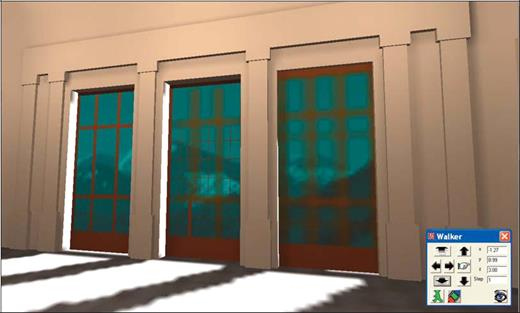
Notice that the rendering is blurred and jagged in some areas. This is primarily a matter of resolution. To go to a higher resolution render-ing, go to the Calculations pull down menu and select Scanline. Notice how the rendering improves (see below.)
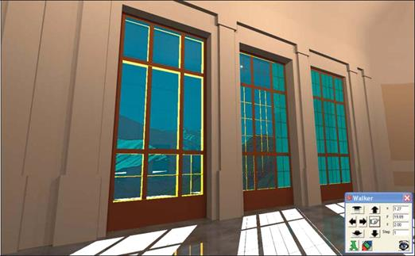
Raytracing, the 4th rendering mode produces an even higher-resolution, photo-realistic rendering. If you have the time, try it out. You’ll see another big change. One word of caution, neither Scanline or Raytracing rendering modes allow you to use the Walker to move around the room.
164
Chapter 8: Vision

Using Vision
Now, it’s time to use Vision. Close the Vision 1 model and open the Model_2 project we worked with earlier.
As we learned earlier, Vision requires light. Accordingly, our first step will be to add Lamps to the Model-2 project. To start, we'll put in a row of Lamps 3 feet below the ceiling peak on 15 foot centers starting at the rear wall.
Open the Edit Project module and click on the Insert Lamp icon (the light bulb icon). When the Lamp Properties sheet opens, correct the X,Y, Z coordinates to 0, -67, 22 and set the Intensity to 30. The default Intensity of 0.0 isn't very bright.

Next, use the right mouse button to open the Mouse Menu and select Duplicate. When the Displacement window opens, insert 15 in the y field and 4 into the Repeated field. Press OK. It's that easy to add a row of lights.
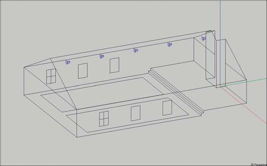
165
EASE 4.3 User’s Guide & Tutorial

Next use the F6 function key to Apply and Save the changes and then go to the View pull down menu and select Architectural Rendering to open the Vision module.
The initial image will be dark because Vision has not had the opportunity to render the model. Vision offers four rendering methods.
OpenGL Simple Map is the fastest, but does not include Textures in the image it produces.
OpenGL Texture Map takes longer but does include Textures.
Scanline produces higher resolution images than either of the two OpenGL methods, but usually takes longer to produce the image.
Raytracing produces the highest quality images, but requires longer calculation times.
Both OpenGL methods allow you to move around in the model. Scanline and Raytracing do not. As a result most users use one of the OpenGL methods during the initial setups (adjusting the lights and applying Textures) and then switch to either the Scanline or Raytracing method after they are satisfied with the model and have the view they want to save.
Before we render the model, we need to make sure the Lamps are turned on. Click on the Lamps icon in the tool bar. When the Lamps list-ing appears select all of the Lamps to turn them On. Remember a right click on OK will select all the Lamps and a left click on OK will then register the selection.
Now, go to the Calculation pull down menu and select either the Scanline or the OpenGL Texture Map rendering method.
The image below was made with Scanline.
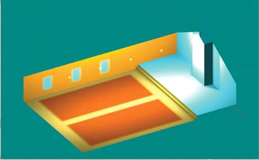
Obviously, we have a hot spot on the front wall. The default Lamp is a sphere and is throwing more light on the front wall because it is closer to it than it is to the floor. We could correct this by moving it, by changing to a more directional Lamp or by reducing its intensity. For now, lets just change its intensity. Return to Edit Project, select the Lamp at the front of the room (it’s L5) and reduce its Intensity to 10. Check Data[5] and return to Vision. Select Acquire Project Data [Ctrl + O] and use Scanline (under Calculations) to redraw the graphic. You’ll see the hot spot is greatly reduced. For now, accept the lighting setup. We can always come back to it at a later time.
Vision allows you to apply Textures to all surfaces. One of the attributes that can be assigned to Textures is Transparency. To illustrate this, we'll turn the windows transparent so we can look through them and see the outside landscape. Return to Edit Project, Pick one of the win-dows and then right click to open the Mouse Menu and select Properties.
166
Chapter 8: Vision

When the Properties window opens, select the Textures Tab. This will open the screen shown below. Use the [.] button to change the de-fault Wall Texture to glass_10_medium.tex, a transparent Texture. Note that the procedure is the same as the one we've been using to change Wall Materials and Loudspeakers.
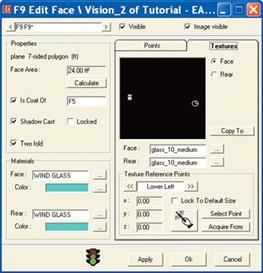
You will also notice a Copy To button. This button allows you to copy this Face's Texture to other Faces. It makes it easy to assign Textures to a number of Faces. Try it out by copying this Texture to the other windows. Click on Copy To and follow the prompts to select the other Window Faces. You’ll need to know the Labels of the other window Faces, but its fast and easy.
Now, let's check to make sure the windows are truly transparent. Check Data [F5] and then reopen the Vision window. At this point, Vision doesn't have the changes we made in Edit Project. Go to the File pull down menu and click on Acquire Project Data or use the Ctrl + O key command. Then use Scanline to refresh the window.
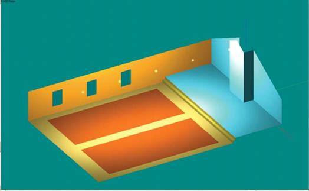
Notice that the color of the windows has changed. The only problem is that we are looking out the window at the background color of the screen. We need to add a landscape to look at. Adding one is easy to do. The first step is to create a large Face outside the room model. It's exact size is relatively unimportant. All we want is for it to be large enough that we'll be seeing it no matter what angle we look out the window.
167
EASE 4.3 User’s Guide & Tutorial

Before we add this external Face we need to do two things. So far, we have been modeling in the Symmetrical modeling mode. Since we will be adding only one Face, we need to change to the non-symmetrical mode. We will also be placing the Face outside a Closed room and EASE doesn’t like that and will view the new Face as a Hole in the model. As a result, it won’t let you Check Data until the Hole is elim-inated. The simple solution to this is to turn the model into an Open room.
Return to Edit Project, right click on the screen and select Room Data from the Mouse Menu that pops up. Then put a check in the Room Open box and uncheck the Room Symmetric box.
For practice, let's try a method of adding a Face that we haven't used before, the Insert Rectangle tool. Switch to the Side [x] view and then click on the Insert Rectangle iconl. Use the Mouse cursor to place the upper left corner of the Face where you want it, and then move the Cursor to the lower right corner and click. It's that simple.
EASE probably placed the Face at x = 0. We want it at x = -50, so use the Mouse Menu to Displace the Face by -50. This places it 25 feet away from the outside of the room. The Face we created is inverted (we are looking at the reflective side) and we want the reflective side facing the room. Use the Invert tool to correct this.
Another way to have added this Face would have been to use the Mouse Menu to change the yz Editing Plane to -50. Then, the Face would have been added at x = -50 and we wouldn't have had to move it. To try this out, use the Undo Tool to remove the Face we just added; then use the Mouse Menu to select the yz-Plane Value. Enter -50 in the Plane Value field. Now, use Insert Rectangle again. You'll see the Face was placed at x = -50. EASE has a wide variety of tools to speed up the modeling process.
The next step is to add a Texture (Mountain landscape) to this Face. Use the Mouse Menu to open the Properties folder and then select the Textures Tab. Click on the Change [.] button and select Mountain_ill_2 and OK. You'll find it stored in the Texture File under the Vision project in Projects40. The scene will probably appear in the viewing window as a number of blue lines. This is because the scene isn't sized to the Face. There are two ways to do this, graphically with the cursor or exactly by using the Texture Reference Point Fields.
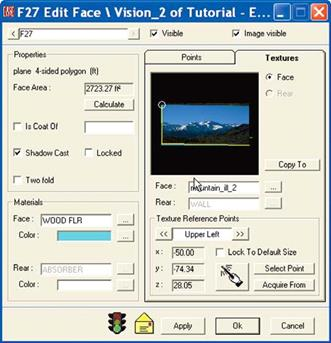
For our purposes, the graphic method will be fine. Note that the Field under Texture Reference Points reads Lower Left. Use the mouse cursor (wand) to set the lower left corner location by clicking on the lower left corner of the Face in the graphics window. A pleasant tone signal will tell you the corner has been placed. Then click on << to switch to the Upper Left corner and set its location with the mouse cur-sor. Then repeat the operation to set the Lower Right corner. When you are done, your screen should look like the one shown.
168
Chapter 8: Vision

If we had wanted to be exact, we would have selected Select Point. This would have opened a listing of the Face Vertices. Selecting the correct Vertex, the lower left corner Vertex, for example, would then have placed the lower left corner of the mountain scene in the same location as the Face's lower left Vertex.
Now approve the changes you have made in the Properties folder by clicking on OK, Check Data [F5] and return to the Vision Module.
First, go to the File pull down menu and click on Acquire Project Data. Then, go to the Calculations pull down menu and select Scanline.
As you can see from the screen shown below, the mountain scene is in place.
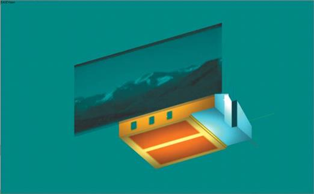
This would be a good time to take a walk around the Room and verify that we can look out the windows and see the mountain. Either se-lect the Walker and take a walking tour or sit down in one of the Listener Seats (select the View pull down menu and then Perspective/Lis-tener) and look out the windows.
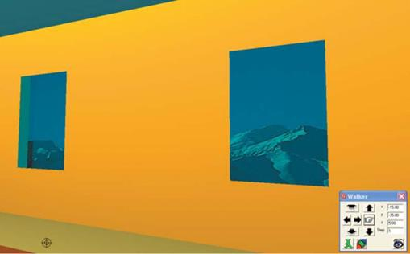
Note that if you rendered the Room in Scanline, you will have to render the room again after you have settled upon your viewing location.
To avoid having to do this repeatedly, select OpenGL Texture Map. Then, you'll only have to render the Room once.
169
EASE 4.3 User’s Guide & Tutorial

Now that we have verified that we can see out the windows, lets see if they are truly transparent and will allow light (sunlight) to enter the Room from the outside. Return to the Edit Project module and select the Insert Lamp tool and click on a spot between the Room and the Face we added outside the Room. When the Properties screen appears, place the Lamp at -45, -40, 25.
Since we want to shine our light into the Room to simulate sunlight, let's choose a more directional Lamp than a Sphere. Click on the Change [.] button and then select the Parallel_Yel.New Lamp. Increase the Lamp Intensity, too, from 30 to100. Next approve the setup parameters by clicking on OK. Then use the right mouse button to open the Mouse Menu and select Lamp Aiming. Aim the Lamp at one of the windows.
Check Data [F5] and then return to the Vision Module. Use the File pull down menu to Acquire Project Data or the Ctrl + 0 key command to update the Vision module. Click on the Lamp icon and turn the new Lamp On. Then render the Room to see the sunshine shining on the floor.Creating A New Light Source
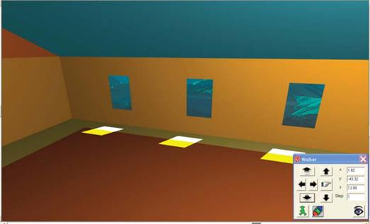
Creating New Lamps (Light Sources)
As we found out earlier, Vision will not operate properly without lights. The Light Sources (Lamps) are inserted into the model during the modeling process using the Room Editor.
A few Lamps are included in the Light Source library supplied with the program, but you will probably want to create additional Lamps.
This is easy to do using the Light Source Editor. Let's try it out.
Step 1:
Open the Light Source Editor by going to Main Databases under the File pull down menu in EASE Main and selecting Light Sources.
The opening Light Source Editor window is shown on the next page.
Step 2:
Select New from the File pull down menu and choose a name (Label) for the light source that you want to create. Be creative in as-signing a name (Label) to the new Light Source. You want to be able to easily identify it.
Step 3:
Enter the name of the Manufacturer if you want to use a certain product.
170
Chapter 8: Vision

Step 4:
If you want to use a color other than white, click on the Color field or the Change [···] button next to it.. A color palette will pop up giv-ing you the opportunity to choose an appropriate color for the light source.
Step 5:
The next step is to choose the type of light. You can choose between a Point Source with a defined opening angle (Aperture) and a Source of Parallel Light. If you want to simulate natural light (sun light) illuminating a space, choose the Parallel Light option. Other-wise, use Point Source and define the opening angle.
Step 6:
When you are satisfied with the parameters, save the light source by doing a Ctrl + s and then reviewing and approving the name and destination Prompt that appears.
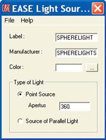
Let's try it out by creating a new pale yellow Point Source with a 120 degree opening angle. We’ll call it LiteYel120.
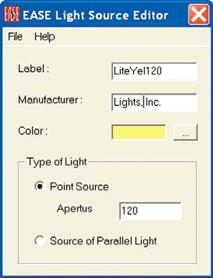
Remember that in our earlier rendering of this Room we noted hot spots on the front and rear walls and speculated that changing from the Sphere light to a directional light would eliminate these. Let’s see if our new Lamp works and better than the Sphere Lamp.
171
EASE 4.3 User’s Guide & Tutorial

The first thing we will need to do is to reaim the light. EASE aims lamps in the same fashion it aims loudspeakers; in other words it aims them down the y axis. We need to aim them stright down at the floor. Return to Edit Project and open each Lamps Properties folder, change to the LiteYel120 lamp and insert 90 in the ver field under View Angle. Another way to accomplish this change would be to select a Lamp and use the Mouse meno Change All Same command to change all the Lamps to Liteyel120. You could also use Lamp Aiming in the Mouse menu to individually reaim each Lamp.
Make the changes, Check Data [F5] and then return to the Vision Module. Use the File pull down menu to Acquire Project Data or the Ctrl
+ 0 key command to update the Vision module. Click on the Lamp icon and turn On all the Lamps. Then render the Room.
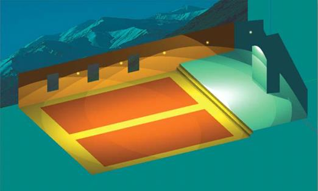
As you can see from the rendering above, the lighting is better than it was, but still not perfect.
Working with lights takes a little practice. But, it's worth it. As any good photographer will tell you, one of the secrets to great photos is the lighting. It just takes practice and you'll have to spend some time practicing if you are going to create photo realistic images.
Fortunately, in EASE it doesn't take long to create new Light Sources, place them in the model and view the results. Take some time right now and experiment by creating several new Light Sources and inserting them into the model. We used an Aperture opening of 180 and it worked much better.
Try turning off some of the lights to see what difference that makes. Try varying the Intensity of the lights. Remember, you do this under Edit Project in each Lamps Properties Folder.
Creating A New Texture
Textures add further realism to your models by enabling you to take surface properties such as transparency, roughness and reflection characteristics into account in your renderings. Textures are assigned to Faces in the Edit Project mode by opening the Faces Properties Folder and selecting the Textures Tab.
The Texture Editor Module allows you to create any new Textures needed for specific projects. Let's see how it works.
Step 1:
Open the Texture Editor by going to Main Databases under the File pull down menu in EASE Main and selecting Textures.
Step 2:
Choose New from the File pull down menu and write the name of the new Texture into the Label field. Let's use GreyBrick as the name.
172
Chapter 8: Vision
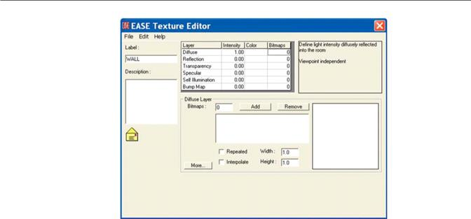
Step 3:
Enter any descriptive notes you want to record in the Description field.
Step 4:
Now that these housekeeping details have been handled, we can start to assign properties to this Texture, such as transparency, dif-fusion and reflection. Your choices will depend on the material.
The properties of every texture are based on characteristics that are defined on different Layers. Note the Layer chart in the Texture Editor window shown above. The six basic characteristics are:
- Diffuse Layer
- Reflection Layer
- Transparency layer
- Specular Layer
- Self Illumination
- Bump Map
The first three parameters (characteristics) are the most important since they represent the basic properties of a material. Every mate-rial Diffuses a certain amount of light and Reflects another amount. Some materials, such as glass are also Transparent. The sum In-tensity of these three primary characteristics should be 1.
For example, if you have a surface such as a mirror, you would want it to reflect 100% of the incident light. Accordingly, activate the Reflection Layer and enter 1 into the Intensity field. At the same time, you should adjust the value of the Diffuse and Transparency Layers to 0, because the three numbers together should add up to 1.
If you want to create a texture representing the properties of a window, you, first of all, should define the degree of transparency. Let’s say, a window transmits 70% of incident light. Activate the Transparency Layer and enter 0.7 into the Intensity field. After doing that, it's safe to assume that 30% of the light is reflected. Accordingly, you would enter 0.3 into the Intensity field of the Reflection Layer and 0 into the Intensity field of the Diffusion Layer.
The other 3 layers, Specular, Self Illumination and Bump, further define the material’s characteristics and how they appear in the ren-derings. Specular defines the amount of light reflected in a specular way. The higher the value, the more the surface will shine.
Self Illumination defines the amount of light emitted into the Room. The higher the value, the more fluorescent the material.
Bump is used for rough surfaces, such as tapestry and coarse carpets.
Note that you may be able to notice the effects of Specular, Self-Illumination and Bump only in high resolution renderings made with Ray-tracing
173
EASE 4.3 User’s Guide & Tutorial

Note the Color column in the Layer chart. It allows you to assign colors to the material. Just click in the Color field and then use the pop up color chart to choose the color you want.
Another essential aspect to the Texture Editor is that you can import images into the different layers as Texture Maps. This enables you to create brick walls, tile floors and outside views, etc. and produce outstanding photo realistic images. See below.
The file format of the image needs to be either a .bmp or .tga and they must have 24 or 32 Bits per pixel resolution and be appropriately formatted. Not all .tga and .bmp files will import successfully.
Let’s assume the end walls in our model are red brick. How can we do that? First of all, you need to find an appropriate image and save it as a .bmp or .tga.
There are a number of possible sources for suitable images. If you have AutoCAD or have access to AutoCAD through a friend or business associate, you will find that AutoCAD includes an extensive Texture file base. Use Windows Explorer to open the AutoCAD folder stored under Program Files and then locate and open the Textures folder. You will note that these images are stored as .tga files.
EASE also includes a Graphics Converter that will convert most .tga files that don't want to import successfully to a usable file. Return to the Main Menu and open the Tools folder in the EASE Directory Tree. Then, select the Graphics Viewer/Converter icon. This will open the IrfanView module. Opening a .tga file in InfanView and then saving it, will convert the .tga file into a .tga that can be used in the Texture Ed-itor.
Another source of images is the Web. Go to the Web and insert Clip Art into the Search window. You will find a long list of sites offering clip art, including some that offer images at no charge. Another possibility is scanning a photograph. All ways will work. All you have to remem-ber is that the image needs to be saved in a high resolution 24 or 32 bit format as a .bmp or .tga.
To make things easier for you, we stored a GreyBrick.bmp file in the EASE40 Texture Base folder.
Press the Add button in the Texture Editor window and Browse to Ease40Data/Textures40/TexturesBase and double click on the Grey-Brick.bmp icon. Note that in the selection window you may have to change the Files of Type from EASE Texture (*.tex) to All Files (**) to see the GreyBrick.bmp file.
OK the prompts that pop up as the program loads the image file. Note that a brick image now appears in the preview window.
174
Chapter 8: Vision
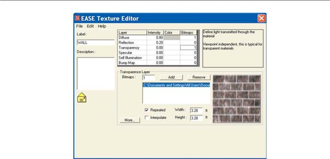
When Vision imports images, it will either expand the image to fill the selected Face area or will repeat the image again and again until the Face is completely covered. The Width and Height fields allow you to adjust the rendering size of the image in case the default size is ei-ther to large or to small.
We want the image to repeat and fill the selected Face area, so make sure Repeated is checked. The 3.28. default size is not correct; bricks are roughly 4 times as long as they are thick.. A brick wall four bricks long and 6 bricks high is more like 36" (3 Ft.) long and 18" (1.5 Ft.) high, so enter 3.0 for the Width and 1.5 for the Height.
Note the More. button. Pressing it will reveal more parameters that can be changed. See the result of pressing this button below.
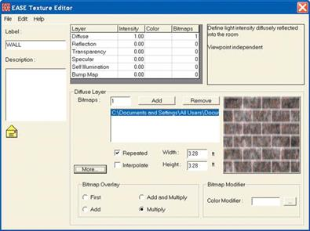
As you can see, the Texture Editor even allows you to Modify the color of the Bitmap. Just click in the Color Modifier field or press the [.] button and select the color you want. Let’s Choose a dark red. You will not be able to see the change in the preview window. The modifica-tion takes place in the Vision module while the image is being rendered.
Once you are satisfied with the parameters you have established for the new Texture, Save it and then close the Texture Editor.
175
EASE 4.3 User’s Guide & Tutorial

Assigning Textures To The Model
Now that we have created a new GreyBrick Texture, lets try it out.
Reopen the Model 2 project in the Edit Program mode, select one of the front walls and open its Properties folder. Then select the Textures tab. The window will open with Wall, the default Texture selected and appearing in the preview window. Click on the Change [.] button to open the Select Texture screen, Browse to the Texture database, add GreyBrick to the project and select it. OK the change and the pre-view window will change to the GreyBrick image.
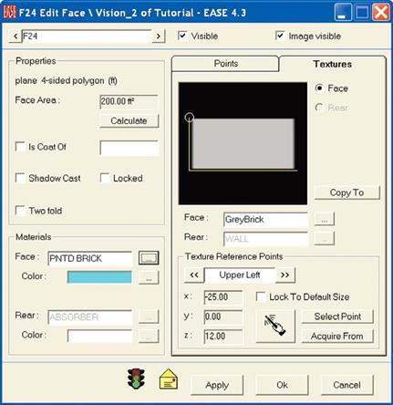
You will recall that when we inserted the Mountain scene, we needed to place three corners of the image in the Preview window, either by using the cursor to place them or the Select Point method. This is necessary when the image needs to be expanded to fill the area se-lected. In this case, the GreyBrick image will be repeated until the Face is filled, so all you need to do is to place one corner of the image and approve the selection by clicking on OK.
Before we do, lets look at several other aspects of this window. Note that the Texture can be applied to either the Face or to the Rear or both and that different Textures can be applied to the Face and to the Rear.
You will also see Copy To and Acquire From buttons. To fully utilize the potential of Vision, Textures should be applied to all Faces. The Copy To and Acquire From buttons make it easy to do this. Clicking on Copy To will open a listing of all the Faces, so you can quickly se-lect all the Faces having similar characteristics and copy this Face's Texture to them. Acquire From lets you acquire a Texture from an-other Face. Both can save you a lot of time when you start applying Textures to all the Faces in a model.
Now, click on OK, if you haven't already, to approve the changes you made in the Properties folder and Check Data [F5].
176
Chapter 8: Vision

Then open the Vision Module, if it isn't already open, by selecting Architectural Rendering from the View pull down menu in the EASE Main screen. Note that if Vision was already open, you will need to go to the File pull down menu and click on Acquire Data. You need to update the Vision Module with the changes made under Edit Room.
Make sure the Lights are turned On (click on the Lamp icon and select all the lamps from the pop up menu that appears) and then use ei-ther the Walker or the Turn Icon to get a good view of the front wall.When you have the view you want, go to the Calculations pull down menu and render the model. As you can see from the screen shown below, you now have an attractive dark red brick wall to look at.
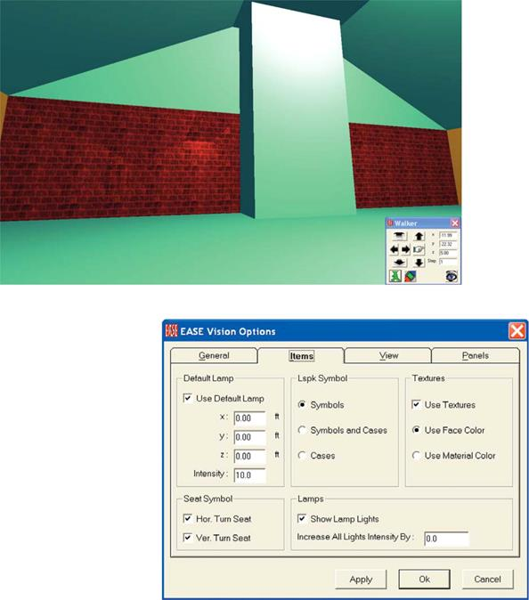
Before we leave the Vision program module, let’s take a look at the Options folder for Vision, specifi-cally the Items Tab. Either select Options from the File pull down menu or use the F9 key command to open the Options folder and then click on the Items tab.
Notice that by using the Options folder we could have installed a Default Lamp into our model without going to the Edit Project Module and inserting a Lamp.
The Options folder also allows you to increase the intensity of all the Lamps installed in the Model just by filling in the amount of increase desired.
Both of these features can be helpful at times.
By now you must realize that Vision is a very sophisticated program. Additional details and operating hints for Vision are available in the EASE 43 Manual stored under Program Files/EASE 4.3/Easepath. Look for Chapter 6.
177
Chapter 9: Room Investigatiions

R o o m I n v e s t i g a t i o n s

179
EASE 4.3 User’s Guide & Tutorial

Chapter 9. Room Investigations
Now it is time to investigate the many ways EASE and EASE JR offer to simulate and display the acoustical and electro-acoustical per-formance of the room and its loudspeaker system.
In this section, we will cover all the investigations that are available to both EASE and EASE JR users. In the next section, Advanced Acoustical Investigations, we’ll take up the investigations available only to EASE users.
New Mapping Conventions
Before we go on let’s explore several of EASE 4.3’s significant improvements.
EASE and EASE JR 4.3 now offer a choice of Mapping Conventions. Previous ver-sions used a Multi-Tone excitation signal for the simulations; all power was inserted in all frequency bands. In this method the excitation signal is comparable to a den-sity signal with a White Noise spectrum.

EASE 4.3 introduces a Broadband Pink Noise excitation signal and sums the results according to RTA conventions, a technique commonly employed by RTA ‘s using a Pink Noise signal.
A detailed discussion of these two methods is beyond the scope of this Tutorial.
The use of Broadband Pink Noise also enables EASE to offer accurate A-Weighted response curves.
The default method for all new projects is the Broadband Pink Noise method. Proj-ects created in earlier versions of EASE will open using the Multi-Tone method. These projects mapping method can be switched to Broadband Pink Noise in the Settings tab of the Room Data folder shown here.
To access the Settings tab,either select Room Info/ Data from the Main View pull down menu or right click on the screen in Edit Project and select Room Data from the Mouse menu.
New Level Conventions
The change in Mapping Conventions also dictated a change in the Loudspeaker Level Conventions to accommodate the Pink Noise signal.
Projects created in earlier versions of EASE will open in 4.3 with the earlier multi-tone Mapping settings. Projects created in 4.3 will open with the Mapping Convention set to Broadband Pink Noise .
Note:If you open an older project and switch to the Broad band Pink Noise mapping method and enter either Area Mapping or Room Mapping, a prompt will ask you to Check Data first. When you attempt to Check Data, a second prompt will inform you that the loudspeaker power setting exceeds the maxi-mum power allowable for Pink Noise Mapping. You will need to open Edit Project, select one of the project’s loudspeakers, open its Properties folder and change its power level settings.

All the Ele Power figures will be shown in red as an indication they are set to high; see example on the next page. The easiest and recommended way to set the levels to ones accept-able for Pink Noise Mapping is to press the Flat Max button in the Level section.

If the project has more than one loudspeaker the Loudspeaker Power Exceeds Maximum Power prompt will again appear; clicking OK will highlight a second loudspeaker and open its Properties folder. Again select Flat Max and OK. Ease will continue to step through the loudspeakers until all the power levels have been adjusted to the Pink Noise level convention.. It really goes quite fast.
180
Chapter 9: Room Investigations

New STI Intelligibility Calculations
EASE and EASE JR now calculate STI using the MTI (Modulation Tranfer Index) values in accordance with the current IEC16 Standard IEC60268-16:2003. ALcons and RaSTI intelligibility figures are then derived from the STI figures.
This method allows EASE and EASE JR to caculate STI, ALcons and RaSTI intelligibility projections in both open areas and closed spaces..
Area Mapping
For the first part of this exercise we will study Area Mapping using the Theater 1 example. Room Mapping will be covered later.

Open EASE, if it isn't already open, and either select Open Project from the File pull down menu or use the desk top icons to find and select Theater 1. When the Draw Room prompt appears answer No, unless you want to reacquaint yourself with the room model. You do not need to Draw the room at this time, Instead, you can go direct to the Calculations pull down menu and select Area Mapping.
Before we go on let’s check the default settings for the Mapping functions. They are found in the Edit Data folder.
Either select Room Info/ Data from the Main View pull down menu or right click on the screen in Edit Project and select Room Data from the Mouse menu.
The Settings tab contains the radio buttons that allow you to select either Broad-band Pink Noise or Multi-Tone excitation signal. Broadband Pink Noise is recom-mended. The Settings tab also includes controls for the size of the Loudspeaker Symbol used in Edit Project and for the programs Tolerance for Plane Faces. We suggest using the default settings for these controls.
181
EASE 4.3 User’s Guide & Tutorial

Let’s check out the Mapping and Noise tabs next. Click on the Mapping tab.
The Split Time [ms] setting determines which reflections are considered di-rect sound during the calculations and which ones are reverberant sound. Since the D/R (Direct Sound / Reverberant Sound) ratio is a key factor in de-termining intelligibility and in evaluating other aspects of the system's per-formance this is an important setting.
Early reflections, those arriving within 15 to 40 msec of the direct sound, im-prove intelligibility while reflections arriving later detract from intelligibility. We suggest 35 msec as a good compromise between the 15 msec figure fa-vored by some acousticians and the 40 ms favored by others. Change the setting from 10 to 35.
Map With Shadow introduces the effects of any shadowing into the simula-tion. In the Theater1 model, for example, the effects of the shadowing caused by the balcony are visible only if Shadowing is turned On. Since simulations run without shadowing are misleading if there are obstructions in the room, many users automatically turn Shadowing On all the time.

The Interference section establishes how the energy levels are calculated. When Interference Sum is not checked, the energy levels are calculated by simple energy addition of the direct sound from one or more loudspeakers.
Mathematically, this translates into a "sum of the squares" calculation where the contribution from a source is first squared and then added to the squared contributions from other sources. All phase information is lost in the process.
Turning Interference Sum On by placing a check in the box reverses the mathematical operation and all source contributions are added first in a complex manner and then the resulting complex sum squared. This retains all the phase effects such as cancellations and additions. Run a Direct Sound simulation with both Interference Sum settings and you'll see a vast difference. Note that after you have changed the settings, you need to rerun the simulation to actually see the results.
The Pot. Energy and Kin. Energy options allows the calculations to be run using only the pressure part (potential) of the energy or the velocity (kinetic) part or both parts when both are checked. A thorough explanation of this as-pect of the program is beyond the scope of this manual. Our recommenda-tion is to use Interference Sum and the 1/3rd Octave bandwidth.

The Noise tab allows you to set the default noise levels for the project. Note how easy it is to raise or lower individual frequency levels or all levels simul-taneously by using the Level buttons.
The Load File icon allows you to import measured noise data if it is available and use it in the simulations. You can also Save the noise data file and then use it at a later date in another project.
We reviewed the Room RT tab earlier while constructing our Model_1 Room. If you skipped that portion of the tutorial, return to page 62 to review it.
182
Chapter 9: Room Investigatiions

Now it’s time to open the Area Mapping window. Return to the Main window and select Area Mapping from the Calculations pull dopwn menu.

it’s possible your screen may not show the Audience Area names. If it does not, go to the Items pull down menu and turn on Audience Area Labels or use the Tool Bar icon to turn them On. Note that the four Audience Areas are not simply labeled A1, A2, etc. EASE allows you to use labels that are more descriptive and we strongly advise you to do so for the Audience Areas, Loudspeakers and Listener Seats. It makes everything so much easier.
Moving Audience Areas
Notice that the Audience Area labeled BAL, the balcony Audience Area, does not overlap or shadow the two main floor Audience Areas (areas A2 & Main) as it does in the actual room. This is because EASE allows you to move Audience Areas for display purposes. If you want to try this out, return to the Main menu and open the Edit Project program. Then select Area Layout from the Edit pull down menu to view the Audience Areas. Pick one of the Audience Areas and then select Move from the Edit pull down menu. The cursor will now turn from a pointer into a pair of pliers. Use the pliers to grab the selected Audience Area and move it around the screen. It's that easy to re-arrange Audience Areas for easy viewing.
Mapping
Clicking on any one of the Mapping icons in the Tool Bar section of the Area Mapping window will initiate the Mapping procedure and open the Settings dialog box.

This window and the ones that follow remind you of the parameters that need to be set up before a simulation. The Settings tab is where you select the frequency of the simulation, choose what loudspeaker(s) will be used and decide upon the resolution.
You also are presented with the choice of running a Single map or of using the All Mappings feature. When All Mapping is selected, the program gathers all the data it needs to quickly display all the simulations available at any frequency. This is a great time saver when you are doing a detailed analysis. We suggest using the All Mapping option and selecting Direct SPL as the measure to show first.
Clicking on the Loudspeaker button opens a list of the loudspeakers used in the model and gives you the opportunity to select which ones will be used in the sim-ulation.
We’ll discuss the Resolution later. For now accept the default setting. Click on Next to advance to the next setup window.
183
EASE 4.3 User’s Guide & Tutorial

The Items tab lets you choose what Audience Areas and Listener Seats will be included in the simulation.
Click on the Aud. Area button and select all four of the Audience Areas. Note that the easy way to do this is to right click on the OK button to select all of them and then left click on OK. To select several of the Areas, hold down the Ctrl button and make your selection using the left Mouse button.

Then either open the Noise tab or click on Next to open it.
The Noise setup window allows you to set the noise levels (modify the de-fault settings established in Room Data) that will be used in intelligibility cal-culations. These are important to accurate Intelligibility projections, so don’t overlook them. Accept the default settings for now and click on Next.

The Calculations window allows you to make further adjustments to the de-fault settings established in Room Data. Shadowing can be turned On or Off. When Shadowing is On, EASE takes into account the shadowing effect of any objects in the room, such as columns and balconies. When it's Off, it doesn't.
Under Interference, make sure Interference Sum and Third Octave are checked and the Split Time is set to 35. Refer back to page 182 for further information on these settings if you feel you need it. For now, accept the de-fault settings.
Finally, click on OK to run the simulation.
184
Chapter 9: Room Investigatiions

It will take a minute or two for the program to gather all the data need to render the Direct SPL Map. Note that the program scans each Au-dience Area individually and then goes on to the next Audience Area. When the simulation is complete, the window shown below will open. Notice that the View Calculations control window essentially covers the actual SPL Map.

To view the SPL Map click on the big minus sign icon on the left side of the View Calculations control screen to minimize it; see below.

185
EASE 4.3 User’s Guide & Tutorial

Display Methods
Before we go on let’s take a look at the various mapping display methods offered by EASE. Control of the display method is provided by the four Tool Bar display icons or by using the View pull down menu.
The default display method and the method we have used so far in the Tutorial is commonly called Color Patches; the View pull down menu lists it as Patch Grid and Painted.
Another method uses Isobars instead of Patches. The isobar graphic below was made by turning Painted (Color) off and Labels On.
Note that if you going to use a black & white Isobar display, Labels must be on or all you will see is blank areas.

The next graphic was made with with Patch Grid turned On and Coloring turned Off. It plainly shows why the method is called Patches or Patch Grid. EASE scans each square (Patch) sequentially to develop the display.

The size of each Patch determines the resolution and the amount of time needed to do the calculation. The smaller the Patch size, the higher the resolution and the longer the calculation takes.
186
Chapter 9: Room Investigatiions

Control of the resolution is provided by the first Calculation Parameters setup window. See below.

We have been using 1 for the patch size and 1 dB for the Isoline display. The display shown below was made using a patch size of 3. No-tice the loss of resolution.
Notice that the setup window also contains a Use Area Setting check box and a L/8 button. The Properties window for Audience Areas al-lows you to define the scan resolution for each individual Audience Area. Checking Use Area Settings tells the program to use these set-tings instead of the Patch Size setting. Pressing the L/8 button changes the resolution (the patch size) to 1/8 wavelength at the frequency chosen for the simulation (.14 feet at 1000 Hz and .07 feet at 2000 Hz, for example).

Note that in all the Mapping displays, you can obtain a readout of the level at any point by left clicking on that point; right clicking will both readout the level and write it on the display.
187
EASE 4.3 User’s Guide & Tutorial

View Calculations Window
The Frequency tab display is showing us the Direct SPL values for all frequencies at the location shown.

Note the four color bars to the right of the graph. The top three allow you to look at the Average, Minimum and Maximum SPL levels for the area scanned. The bottom one allows you to turn off the red SPL curve for the individual location. The result of turning Average, Minimum and Maximum On is shown below.

Note that moving the cursor to any point on one of the curves will produce a readout in the Cursor field at the bottom of the window giving you the frequency and Direct SPL level at that point.
The View section in the lower left of the window allows you to change the display window from a graph to a tabular listing of the same infor-mation or to a side by side display of both. Try it out.
The Send Picture To button is a quick way to save the chart/graph to the Clipboard as an electronic file or to send it to the EASE Page De-signer. The Send Values button saves the single values to the Clipboard for further post processing.
188
Chapter 9: Room Investigatiions

The File Info tab contains a statistical summary of the setup parameters, including the loudspeakers used, their locations and output levels in an ASCII text format that can be saved and opened in other programs and then printed.
The Echogram tab is empty at this time and will be until an Echogram is created. Echograms are a feature available only to AURA users.
We'll cover them later in the AURA section of this manual.
The Distribution tab opens the distribution window which displays a bar graph representation of the selected parameter, Direct SPL at 1000 Hz in the example shown below. As you can see, it enables you to quickly determine what percentage of the mapped areas fall within cer-tain criteria. In this example, 90 % of the total area falls within 94 to 98 dB (plus or minus 2 dB) .
This window is your answer to the specifications that call for coverage to be "flat within +/-__dB". Use the Cursor and Cursor value readout below the bar graph to obtain exact readings.

If you find it hard to read the exact figures from the graph, click on Table to open the Distribution Table which gives you exact figures.

189
EASE 4.3 User’s Guide & Tutorial

Now, lets take a closer look at the top Tool Bar portion of the View Calculation window.

The large button on the left (the + button in the above graphic) opens and closes the bottom Evaluation Display portion of the window. It al-lows you to close the bottom portion of the window, so you can see the Map.
The Open Folder icon is used to open previously created .emp Mapping files for review. The Floppy Disk icon button next to it is used to save the current simulation as a .emp Map file. The Notepad icon is used to save the current file in an ASCII .txt format. The Waste Basket icon is used to delete the current simulation file from the View Calculation module and choose another one from the File Listing drop down menu.
The left colorful Map icon is used to draw a new Map. Lets try it out. Open the drop down menu directly below the Redraw button and se-lect a new simulation type. Note that you have a wide variety to choose from. Selecting one, STI for example, and then pressing the Re-draw button will quickly produce an STI map in place of the Direct SPL map. Since we used All Mapping, the program doesn't have to rerun the entire simulation. All it has to do is scan the data it collected and render the drawing, a process that takes only a few seconds.
The right colorful Map icon allows the selection of all simulations and all frequencies and frequency resolutions. Pressing the icon, opens a drop down menu giving you the choice of Render All or Send to EASEPaD. Render All will render all the Maps selected and Send To EASEPaD will both render the Maps and send them to EASEPaD for further processing.
Selecting one of the two choices will open the selection menu shown below. The buttons and the selection fields make it easy for you to select the specific Maps you want to see or save. Try it out. You'll find it a very useful tool for putting together presentations.

190
Chapter 9: Room Investigatiions

The Frequency drop down menu allows you to quickly select the center point of the frequency band that will be used in the next simulation while the Bandwidth drop down menu determines the width of the frequency band.
Note that you have a choice of Third Octave, One Octave, Three Octaves, Broadband and a number of specific frequencies. One Octave will average the results over one octave, while Broadband will show the results averaged across the entire spectrum. Custom bandwidths can be generated using the Frequency menu to set the lower frequency limit and the numerical frequency listings to set the upper limit, 1000 Hz plus to 5000 Hz for example.
The wider the bandwidth, the less apparent the effects of comb filtering. As a general rule, simulations run with a 3 octave bandwidth come closest to simulating the variations you will hear while "walking" the room during the final commissioning.
The location section of the tool bars shown below identifies the location of the graph shown in the display section of the window and allows you to change the location.

In this case we are looking at the 1st point in Audience Area A2. The location coordinates follow. The l<, <, < < and >>, >, >l buttons allow you to move backwards and forwards through the points scanned. The number field allows you to choose the size of the step.
The Walker, when activated, displays the actual location.
The Weight drop down arrow allows you to select between “unweighted” frequency curves and A-Weighted curves. See below.

191
EASE 4.3 User’s Guide & Tutorial

Before we go on let’s take time to save the mapping file. You may have noticed that in the View Calculations window the word “Temporary” followed the name of the calculation. This is the program’s way of telling you that the Mapping file you created has not been saved and will be lost if you close it without saving it.

Clicking on the Floppy Disk icon will open a familiar Window Save dialog box. Name the Calculation file and then Save it as a .emp file. To open the file at a later time, open Area Mapping and select Load EASE Mapping from the File pull down menu. Then browse to the file and select it.
STI Speech Transmission Index
STI has largely replaced ALcons as the preferred method of measuring intelligibility. EASE and EASE JR now project STI using the MTI (Modulation Transfer Index) in accordance with IEC Standard 60268-16:2003.
Select STI from the drop down measurement type field in the View Calculations window to calculate STI from the data that was gathered from the All Mapping simulation. Note that the resultant display shows both the single STI figure and the frequency band sensitive MTI fig-ures.

If you need the exact STI figure, click on Table.
192
Chapter 9: Room Investigatiions

Notice that the Calculations Control window now includes an Options tab. Clicking on it opens the STI Options folder shown below.
It allows you to choose between the “Standard” STI and ones calculated for either Male or Female voices. Other calculation options include STIPa Male, STIPa female and RaSTI simulations. You also are given the choice of considering the Noise Floor and/or the effects of Sig-nal Masking in the STI simulations.

Please check these out to become familiar with the differences.
If you want to see the STI Area Map, click on the Render icon.
Note that changing from one measure to another in the Area Map is a 2 step procedure. First, you need to select and calculate the meas-ure from the data gathered during All Mapping and then you need to Render (redraw) the map.

A reference guide for interpreting STI figures follows:
0.75 to 1
Excellent
0.6 to 0.75
Good
0.45 to 0.6
Fair
0.3 to 0.45
Poor
0 to 0.3
Unacceptable
193
EASE 4.3 User’s Guide & Tutorial

ALCons
EASE and EASE JR 4.3 derive ALCons (% Articulation Loss of Consonants) from the Speech Transmission Index using the Farrel Becker equation. Refer to Appendix A, ALCons STI in the EASE 4.3 Manual (C:/Program Files/EASE 4.3/EasePath/Ease4.3Manual) for details on the relationship between STI and other related measures such as RaSTI and STIPa.
A typical ALCons map appears below. In ALCons, Green is good. To be more specific:
Percent ALCons
0% to
3%
Excellent
3% to 7%
Good
7% to 15%
Fair
15% to 33%
Poor
Above
33%
Unacceptable
Note: This scale corresponds with the standardized STI values, but experience has shown that good intelligibility is achieved with less than 12% ALcons and very good intelligibility with ALcons of 7% or less.

C (Clarity) Calculations
C (Clarity) calculations offer several ways to evaluate the acoustic performance of a room and its loudspeaker system. They are widely used in Europe.
C7 is equivalent to the D/R ratio widely used in the U.S. and represents another way to look at the strength of the Direct Sound field. It displays in dB the ratio of direct and reverberant sound using a Split Time of 7 ms. Values above -15 dB show good localization (a good D/R ratio). The closer the value comes to 0, the better the localization.
C50 is used to project speech intelligibility. It displays the ratio of energy before and after 50 ms; i.e., its similar to Alcons with a 50 ms Split Time. Any value above 0 dB in a room with normal reverberation represents good intelligibility. In rooms with higher than normal reverbera-tion, any value above -5 dB is considered good.
C80 is often called a clarity ratio. It uses an 80 ms Split Time to predict the articulation (clarity) of different types of music. In other words, it provides a look at the room's musical performance. A brief explanation follows.
Musical instruments can be divided into four basic types:
1. Blown instruments (e.g., organ, tuba, clarinet, etc.) These instruments have a slow attack and slow decay.
2. Bowed instruments (e.g., violin, viola, cello, bass etc.) These instruments have slightly quicker attack and slow decay.
3. Plucked instrument (e.g., guitar, string bass, harpsichord, etc.) These instruments have quick attack and medium slow decay.
4. Percussive instruments (e.g., piano, drums, electronic instruments, xylophone etc.) These instruments have a quick attack and a quick decay.
194
Chapter 9: Room Investigatiions

The scale for interpreting C80 follows:
• 0 +/- 2 dB is ideal for organ or blown instruments played at a slow rate of speed. This is perfect for organ recital halls
• 2 +/-2 dB is ideal for bowed instruments and is best shown by a room made for classical or symphonic instrumental music. The speed of the music is quicker. The music of live choirs is also good at this level. This would be good for traditional churches
• 4 +/-2 dB is ideal for plucked instruments. The speed of the music is quicker as well as more modern. This would be described as folk music or in churches as Light Contemporary. This would also cover light popular music such as Light Jazz
• 6 +/-2 dB is ideal for percussive instruments. This can be described best as Rock and Roll. In churches this would be known as Full Contemporary.
For good musical performance, the number should not exceed +8 dB at any location. A C80 plot for Theater1 follows.

Csplit
Csplit offers a way to look at the energy ratios before and after the selected Split Time. It gives you the opportunity to see the effect of dif-ferent Split time settings. The selected Split Time in this case, of course, is the Split Time we set up before running the All Mapping simula-tion (35 msec.)
D/R Ratios
D/R Ratio shows the ratio of direct to reverberant sound in terms of dB. Zero dB indicates the sound levels are the same. Numbers less than 0 indicate the reverberant sound level is higher than the direct sound level. Numbers greater than 0 indicate the direct sound level is higher. Note that in Theater 1 the reverberant level is higher than the direct sound level. This is not unusual.

195
EASE 4.3 User’s Guide & Tutorial

Critical Distance
Critical Distance displays the ratio of Direct to Reverberant sound in terms of distance. Critical Distance is the distance in space at which the Direct and Reverberant sound levels are equal. This is displayed as a 1. Figures of more than 1 indicate the reverberant sound level at this distance is higher than the direct sound coming from the loudspeakers. Figures lower than 1 indicate that at this distance from the Loudspeakers the Direct Sound level is higher than the level of the reverberant field.
A Critical Distance plot for Theater 1 appears below. Note all the figures are above 1, another indication that the reverberant field is higher in level than the Direct Sound.Pressure Levels

Pressure Levels L7, L50, L80, Lsplit
The L7, L50 and L80 simulations allow you to look at the sum of the direct and reverberant sound energy within the specified time; for ex-ample the first 7 msec when L7 is used. Lsplit uses the split time set up for the simulation, in this case 35 msec. In other words, Pressure Level simulations are similar to the C7, C50, C80, Csplit calculations, except they show you the total sound during the specified period.
Total SPL (SUM)
Sum or Total SPL displays the sum of the Direct and Reverberant sound energy in dB. In other words, it displays the total sound level.
Don't be surprised at the small variation between the minimum and maximum levels. It's normal.
Arrival Time
Arrival Time (First) shows the arrival times of the direct sound from the loudspeakers in terms of msec. It is extremely useful in determining the amount of delay needed in distributed loudspeaker systems. Exact readings can be obtained by clicking on the screen with either the right or left mouse button. The left button "reads out" the time; the right button writes it on the screen.

196
Chapter 9: Room Investigatiions

Lspk Overlap
Lspk Overlap shows the number (quantity) of loudspeakers of comparable intensity providing sound at a specific location. A value of 1 indi-cates that there is no overlap. Values greater than 1 indicate the amount of overlap. As a general rule, values of 1.5 or greater indicate that comb filtering or other undesirable interference behaviors may be expected at that location. A Lspk Overlap display for Theater 1 follows.

ITD Gap
ITD Gap displays the difference in arrival times between the first two direct sound arrivals. This information is useful in determining the proper placement of loudspeakers and the delay times needed in distributed loudspeaker systems. Note that we have added to this display a number of value readouts.

197
EASE 4.3 User’s Guide & Tutorial

Aiming
Aiming produces coverage isobars on the Audience Areas as an aid to aiming the loudspeakers. It is not included in the drop down meas-urement selection menu we have been using since it is more of an overlay than a true map.
To turn Aiming On, either select Aiming from the pull down Mapping menu in the Standard Mapping window or use the Tool Bar icon.
Coverage isobars will quickly appear on top of the map being viewed at the time you turned On Aiming. They will reflect the parameters used in the previous simulation; loudspeakers used, frequency, shadowing, etc.

The heavy squares in the display shown above represent the aiming points of loudspeakers aimed directly at one of the Audience Areas.
As you can see not all the loudspeakers are aimed at points within the Audience Areas.
This graphic was made with Shadowing turned On. The blue lines are calling your attention to the shadowing effects of the balcony and its location.
The Aiming display comes with several options. Right click on the screen to open the Mouse menu and select Options or press F9 to open the Options menu. Then select the Items folder. Note that you have a choice of -3 dB,- 6 dB or -9 dB coverage lines. You can also turn the Radii On or Off. Make whatever changes you want, then click on Apply to see the change. If you like the new effect, click on OK.
Be aware that the Aiming overlay will remain On until you turn it Off.
Auralize Direct Sound
One of the interesting features offered by both EASE JR and EASE is the ability to auralize Direct Sound. This features allows you to quickly audibly check loudspeaker alignment and level adjustment in multi-loudspeaker systems. It can be activated from either Area Map-ping or Room Mapping.
We'll use Area Mapping. Return to the Main window and select Area Mapping from the Calculations pull down menu. Then, select either Direct SPL or Recalculate and proceed through the setup windows. The program needs to know what loudspeakers will be used in the au-ralization.
When the simulation is complete and the View Calculations window appears, close it. Then open the Tools pull down menu, select Aural-ize Direct Sound and use the mouse to select a spot in one of the Audience Areas. (Note that the cursor changed into cross hairs when you selected Auralize Direct Sound.) Clicking on a spot in one of the Audience Areas with the left mouse button will open the Auralization control window shown at the top of the next page.
198
Chapter 9: Room Investigatiions


Unless you have previously changed the default settings, only the Eject button will be active. Under normal opera-tion (the default settings) it acts as a procedural start but-ton by loading the FIR Filter and then activating the Go button.
Now, it's time to have a little fun. Run several auraliza-tions at different spots in the audience with all of the loud-speakers turned On. Note that the response at each location is stored as a FIR Filter file in the program and that you can quickly and easily switch between the differ-ent FIR files.
Before you can proceed with the direct sound auraliza-tion, you need to select the Input Signal that will be used. Click on the File Folder icon and select the Male Voice .Wav file.
Then press the Eject button to reset the system and acti-vate the Go button. Press the Go button and listen to the Auralization over your computer’s loudspeakers.
Note that you may have to turn up the level on your PC's sound card to hear the Direct Sound auralization and that you are listening to only Direct Sound; no reflections are included. To hear the reflections, you must have EASE and EARS.

You will find that the loudspeaker system is quite well aligned and balanced.
Then open, if it is not open, the Edit Project module. Se-lect the center balcony loudspeaker (Balc. Delay Ctr) and insert a 200 msec delay.
Select the loudspeaker and then open its Properties folder using the Mouse menu. Change the Delay Time from 54 to 200 msec and OK. Now hit F6 to Apply and Save the change . Return to the Area Mapping window and Acquire Data using the File pull down menu.
Now, do several Direct Sound auralizations with the new settings. You'll notice a big difference.
199
EASE 4.3 User’s Guide & Tutorial

Ray Tracing
Ray Tracing is an often used concept in CAD programs for the rendering of illuminated objects. In EASE, Ray Tracing is used to study the propagation of sound rays. Rays are released into the room and each Ray's path is traced until it reaches predetermined limits.
Ray Tracing allows you to study reflection patterns within the room by emitting rays whose reflection paths can be viewed and investigated. The key words in the previous sentence are "reflection patterns". The Ray Tracing routine does not allow you to investigate reflections that hit a specific spot within the room. Comparatively few rays are needed in Ray Tracing to produce the quantity of rays needed for reflection pattern studies and for the Movie module. Consequently, Ray Tracing reflection pattern studies are relatively quick to make. Only a few hundred rays and low order reflection orders are needed. The maximum for EASE JR users is 1000 rays and Third-Order reflections.

To start Ray Tracing, if the Edit Project module is open close or minimize it and then return to the Main menu and open the Calculations pull down menu. Selecting Ray Tracing will open the Prompt shown to the right.
It's asking if you want to be able to look at the Rays as they are being drawn. Let's say Yes.
This will open two windows, the main Ray Tracing control window and the Ray Tracing View
Project window; see below.

Select the Rays pull down menu in the Ray Tracing Control window and then click on Ray Tracing. This will open the Ray Tracing setup window shown at the top of the next page.
200
Chapter 9: Room Investigatiions

The Loudspeaker and Lspk Group but-tons are used to select the loudspeakers that will be used in the simulation, while the Rays per Loudspeaker field deter-mines how many rays will be emitted by each loudspeaker. The thing to remem-ber while making these setups is that the larger the number of loudspeakers and the more rays emitted by each loud-speaker, the longer the calculation time.

The Trace Control By section sets up the ray cutoff parameters for the simulation. Order determines how many reflections (bounces) the program will trace, before going on to the next ray. For reflection pattern studies no more than Third-Order
reflections (the maximum allowed by EASE JR) are needed.
Time establishes the length of the investigation. Lengths of 100 to 300 ms are typical for Ray Tracing, although shorter and longer times are possible. Loss cuts off the ray trace when the SPL has dropped the specified amount. This is typically set at 60 dB.
Directed Emission produces a weighted display used primarily to enhance simple reflection studies and Movie presentations.
The Tracing Options section determines how the rays will be displayed and whether or not they will be saved in a Trace file. When Draw Trace Rays is checked the program will draw the rays in the View Project screen. The rays will appear in rapid order on the screen as their paths are calculated by the program unless Show Every Ray is also checked. Checking Show Every Ray allows you to manually step through and observe the rays one by one as they are calculated.
When Brief Ray Info is checked, information on each Ray's path will flash across the Ray Tracing Control window while the window color flashes with the Ray's color.
Make Trace File saves the results of the simulation in a .trc Trace file for later viewing and analysis using View Trace File. View Trace File provides many more viewing options than Ray Tracing, including the ability to individually look at each loudspeakers reflection pattern.
Because of this, many experienced users will run an extensive trace file using all of the loudspeakers and then use View Trace File to ana-lyze the reflection patterns.
Let's try out Ray Tracing. For our first try, we'll use only the Main floor and Balc De-layL, Balc DelayR and Balc Delay Ctr loudspeaker and 500 rays. Press the Loudspeaker button and select them and insert 500 into the Rays per Loudspeaker fierld..

Then set the Order to 3, the Time to 200 ms and the Loss [dB] to 60 dB. We'll use Directed Emission, too, as we'll be using the Movie feature shortly. Note that you have to put a check in the Time [ms] and Loss [dB] boxes before you can fill in the fields. Then put checks into Draw Trace Rays and Brief Ray Info. The setup menu should look like this when you are done.
201
EASE 4.3 User’s Guide & Tutorial

Before you click on OK, make sure you can see the View Project window. You'll may want to rearrange the screen to get a better view of it.
Now click on OK. Notice that the room quickly fills up with yellow and magenta rays. The magenta color rays are the programs way of telling you that the time window is too short; that many of the rays are being cut off by the time limitation before their trace is completed. Do the Ray Trace again with the Time set to 400 ms and you'll see the magenta rays disappear, an indication they are now being allowed to finish their trace. Note that the Ray Tracing Control window summarizes the completed simulation.

Also notice that as soon as you OK the Computation Ready prompt that appears at the end of the tracing routine the rays disappear. The same thing happens if you attempt to rotate or enlarge the room to get a better view of the rays. The way around this is to use the Make Trace File option, so most users will automatically make a Trace File every time they do an investigation. Its easier to work with and more flexible. Let's see how this works.
Open the Ray Tracing setup menu again; go to the Ray Tracing Control window and select Ray Tracing from the Rays pull down menu. This time select Make Trace File. Also, make sure Draw Trace Rays and Show Every Ray are not checked. All we want to do is to make a Trace File and forcing the program to draw the rays only slows down the computations. Click on OK. This will brings up a screen which al-lows you to name the file and choose its location (see below).

202
Chapter 9: Room Investigatiions

VIEW TRACE FILE
Note that the program will be placing the .trc Trace File in a Raytracing folder in the Theater 1 Project folder. The computation will start as soon as you click on Save.
As soon as the computation is completed, the View Trace File screen will appear.

Note that with a click of a button you can draw all the rays or just the bounce points, or clear the display (Wipe Room). You can also turn the loudspeakers On and Off individually, enabling you to study each loudspeakers reflection pattern.
You can also rotate and/or enlarge the room at will to get a better view of the Ray's paths without losing the display.
Opening the Ray tab introduces the control menu shown below. Notice that it gives you the ability to step through each individual Ray and simultaneously displays information on the Ray's path and final SPL level.

The scroll bar allows you to bypass the “ray by ray” review and “scroll” ahead or back to various parts of the Ray Tracing study; jump from Ray #10 to reflection Ray #200 for example.
203
EASE 4.3 User’s Guide & Tutorial

Another thing that can be done in View Trace File is to look at only the Rays generated within the loudspeaker -3 dB, -6 dB and -9 dB cov-erage cones. To try this out, click on the Ray Tracing Control window and press F9, or go to the File pull down menu and select the Options folder to open the following screen.

Note that the Default settings have the "In Use" box selected in the Ray Impact Colors section while In Use is not selected in the Attenua-tion (1m) section. Change this by clicking on the Attenuation (1m) "In Use" button and then OK the change. We will now be seeing the Rays based on the loudspeakers coverage cone, instead of by their normal Ray colors.
Note that the program allows you to Hide certain items. If we had wanted to show only the -3 dB cone, we would have checked the Hide boxes associated with -6 dB and -9 dB. Note that now when you draw (step through the Rays from a loudspeaker, you will see only the Rays generated within the loudspeakers -3 dB coverage cone. See below. Notice the number of reflections off the floor into the under bal-cony area.
You can also do the same to use only the -6 dB (actually -3 to -6) or -9 dB (actually -6 to -9) coverage cones or any combination of cones.

204
Chapter 9: Room Investigatiions

Another useful Ray Tracing feature of EASE 4.3 allows you to view the first order reflections from a specific Face in the same color as the Face color itself. This option is useful in determining the proper inclination of reflector or side wall panels and in studying reflections from troublesome Faces. Let's try it out using the right side wall and the ceiling in our model.
We'll start by changing the color of the ceiling Face to bright Red and 0ne side wall to a vivid Blue. This will make it easier for us to differen-tiate between the ceiling and side wall reflections. Face colors can't be changed in View Project, so we'll have to open the Edit Project module and change the colors there.
Open the Edit Project module, if it isn’t already open, and pick the ceiling Face and use the right mouse button to open the Mouse menu and then either select the Ceiling Face’s Properties folder and change the Face color to red or select Color and change it. Note that Ctrl + F2 would also open the color change dialog window. Follow the same procedure to change the color of the side wall to bright blue. Then
Check Data [F5] and return to the Ray Tracing module.
Use Ctrl + o to Acquire the changes you made in Edit Project. and then open the Options folder (F9) and select 1. Reflection Face Color Only. OK the change to return to the Rays control window and select Ray Tracing from the Rays pull down menu.
We want to study the reflections from the Main Loudspeaker off the one side wall and the ceiling. Insert 1 in the Trace Control Order field, 20 in the Rays per Loudspeaker field and select the Main Loudspeaker. Under Tracing Options select Make Trace File and proceed by fol-lowing the prompts.
You may want to rerun the simulation using a few more Rays or 2nd order reflections to gain further insight into the reflection pattern. It’s easy to do. The simulation shown below was made with 40 Rays and 2nd order reflections.

205
EASE 4.3 User’s Guide & Tutorial

MOVIES
Now, let's move on to the Movie mode. Click on the Movie tab to open the Movie Control screen shown below.

This screen allows you to control the movies length and the manner of presentation. The Fixed, Order, SPL and Loss buttons select the na-ture of the display. When SPL is checked, for example, the color of the rays will change with their SPL level.
When Beam is checked, the Movie will show the rays as beams. When it is not checked, only the wavefront will be shown. The Night but-ton turns the display window from its normal gray background color to a midnight blue that makes it easier to see the rays.
We will start by using Loss and Beam. Click on them to turn them On.
The control buttons on the bottom allow you to Start and Stop the movie, to Step Forward or Step Back through it and to Pause in the pres-entation. Wipe clears the display of any previous information.
Press the Start button and watch the rays spread out into the room. You will notice that the rays change color as they get further from the loudspeaker. They are changing color to show the dB loss.
The color codes for the Loss, Order and SPL displays can be found and changed under the Color tab
Our initial Trace File was was made using only 500 Rays from just the Main and delayed Balcony Loudspeakers, so you will not be able to see the Downfill, Under Balcony and Stage Lip Loudspeakers in the Movie. If you want to see them, you’ll need to make a new Trace File with all the Loudspeakers turned On. Note that the opening View Trace File window allows you to select what Loudspeakers will be used in the Movie. You probably will also want to increase the number of rays. Using more rays per loudspeaker enhances the Movie display.
The Movie graphic shown on the next page was made with 1000 rays per loudspeaker and just the Main loudspeaker and the delayed loudspeakesr in the lip of the stage turned On.
Note how the movie shows the delay as the sound expands into the room.
206
Chapter 9: Room Investigatiions

Room Mapping
So far in this Tutorial section we have used only Area Mapping. Room Mapping is similar to Area Mapping, except that it also allows Map-ping on the Room surfaces. The setup routine is identical except that you now have a choice of Mapping on just the Audience Area(s) or the Room surfaces (Faces) or on both.
Note that in Room Mapping EASE JR users can map only Direct SPL. EASE users have the option of mapping other measures on the Au-dience Areas and Room Surfaces (Faces). If you skipped the Overview section of the Tutorial, please return to pages 35-39 for a more de-tailed description of the two mapping methods.
Room Mapping is accessed by selecting Room Mapping under the Calculations pull down menu and following the same steps you followed in Area Mapping.. The graphic below shows a Direct SPL Map on the Audience Areas as it appears in Room Mapping.
Note that the graphic lists the Parameters used in the simulation in the upper left corner of the map. In our example, it shows that only the Main loudspeaker was used in the simulations. The other loudspeakers were all turned Off.

207
EASE 4.3 User’s Guide & Tutorial

The following graphic shows the Direct SPL mapped on all the room surfaces (Faces) with only the Main loudspeaker turned On and the Audience Areas turned Off.

Notice the black area behind the front Face of the balcony. It shows that this area is being shadowed by the balcony Face. This didn’t show in Area Mapping since the Audience Area is at ear height and is not being shadowed by the balcony Face.
The same holds true for the very rear of the Main floor, only in reverse. In Area Mapping someone seated in the rear seats of the main foor
Audiences Areas was shadowed from the Main Loudspeaker by the balcony. However, the floor under them is not in the shadowed area.
EASE is very precise.
The black areas in the back stage area are an indication that EASE had difficulty calculating a level because of the resolution used in the simulation. Change to a higher resolution and they will disappear.
You may wonder why the backstage Faces show an SPL level even though they do not have a “line of sight” view of the main Loud-speaker. How can they receive Direct Sound? Remember, we defined Direct Sound to include early reflections that arrive within 35 ms (a 35 ms Split Time). You are looking at the levels of the early reflections.
208
Chapter 10: Advanced Acoustical Investigations

A d v a n c e d A c o u s t i c a l I n v e s t i g a t i o n s

209
EASE 4.3 User’s Guide & Tutorial

Chapter 10: Advanced Acoustical Investigations

All the Mapping functions we reviewed in Room Investigations are avail-able in both EASE and EASE JR. Now, it's time to move on to simula-tions that are available only to EASE users.
Local Decay Times
EASE 4.3 has the ability to quickly develop RT Times based on reflection studies. The Eyring or Sabine formulas EASE JR and EASE use to calcu-late RT times are generalized formulas that don't apply to every room.
For example, they assume the room's absorption material is distributed homogeneously on the room's surfaces, a condition that doesn't exist in every room. The RT Times are also a single set of times for the entire room while in real life the RT Times from one location to another.
Local Decay Time provides a quick check on the accuracy of these for-mulas, as well as providing RT projections for specific points within the room. It uses an omnidirectional source to distribute Rays throughout the room and calculates the RT Time from their decay. The result is RT Times that are more "real life" figures.

Select Local Decay Times is accessed in either Area Mapping or Room Mapping from the Mapping pull down menu. We used Area Mapping which opened the Calculation Parameters’ setup window shown here. Note that it is similar to the one we have been using in Area Mapping, but doesn't have a Loudspeaker selection section. The reason is that the sys-tem loudspeakers won't be used to calculate the Local Decay Times. In-stead an omnidirectional source will be used. This simulation is interested only in the room's decay times.
Press Next to bring up the second setup window which also should look familiar.
Note that you have a choice of Mapping on Seats or Areas or both. Al-though you can map on Areas, we suggest Mapping on only the Seats. Mapping on Areas will take a considerable amount of time because of the number of points involved, which defeats our objective of doing a quick check. Select Seats and then use the List Seat button to select all 5 of the Listener Seats.

Now, press Next to open the Noise setup window; accept the default set-tings and press Next to move on to the Calculation setup window.
We suggest using the Default settings. Using more Rays or a larger Re-flection Order would yield more precise figures, but we are just looking for a quick check and the default settings will be adequate.
The results are shown in the screen on the next page.
210
Chapter 10: Advanced Acoustical Investigations

Use the Location control window to take a look at the projected Local RT Times for each of the 5 Seats. Note the variance from Seat to Seat.
The projected Sabine and Eyring RT Times are shown below for comparison. Be aware the scales for the three displays are different and take this into account while comparing the three projections.

211
EASE 4.3 User’s Guide & Tutorial

Standard Mapping With Reflections
Standard Mapping uses a statistical formula to calcu-late reflected sound levels from the Direct Sound lev-els and the RT Times developed by either the Eyring or Sabine formulas. Standard With Reflections (avail-able under the Mapping pull down menu in either Area Mapping or Room Mapping) replaces the generalized Eyring or Sabine generated RT times with RT times developed by Ray Tracing. It is a more accurate method, but the calculations take considerable more time. How much more time depends on the complex-ity of the room, the number of loudspeakers involved, the number of Rays you choose to use, the Reflection Order you select and the speed of your computer.

Selecting Standard With Reflections will initiate the fa-miliar four Calculation setup windows plus a fifth Ray Tracing setup window. If you decide to try it out so you can compare the results with those obtained with Standard Mapping, click on OK.
Two status windows will appear to keep you advised
of the status of the calculations. Note that the total
time is well over 3 hours. You may want to consider
using just a few Seats instead of all the Audience
Areas.

212
Chapter 10: Advanced Acoustical Investigations

Local Ray Tracing
Local Ray Tracing allows you to quickly take a more in-depth look at various spots around the room than Local Decay Times.
Like Local Decay Times, Local Ray Tracing can be ac-cessed from either Area Mapping or Room Mapping. Select Local Ray Tracing from the Tools pull down menu. Then click on a spot in one of the Audience Areas to establish the location of the Walker (Probe if you entered from Area Mapping). This will open a Ray Tracing setup window.

Accept the default settings and click on OK.
This will open a file name/location dialog window. As-sign a file name and click on OK.
The default settings of 1000 Rays per Loudspeaker and 3rd Order reflections are fine to provide a quick snap shot of what's happening at the chosen location. Far more Rays per Loudspeaker and much higher re-flection orders would be needed for a detailed investi-gation. The results of our 3rd Order study are shown in the following Reflectrogram.

The red pulses represent direct sound and the green pulses represent the reflections that were picked up in the simulation. Note that click-ing on any pulse produces a readout giving the exact level and arrival time.
Local Ray Tracing also offers a number of other interesting displays, including MTF and STI. Check them out using the Tool Bar icons or the Graphs pull down menu.
213
EASE 4.3 User’s Guide & Tutorial

Ray Tracing Impacts (Find Impacts)
Find Impacts is a Ray Tracing option that registers rays that pass within a meter of the chosen point (impact upon a 1 meter counting bal-loon), stores the results and then automatically runs a mirror image routine to identify the impacts that hit the center of the counting bal-loon. Find Impacts requires a larger number of rays (100,000 or more in many cases) and higher reflection orders than Local Ray Tracing. It relies upon the laws of probability to identify an adequate number of impacts to ensure an acceptable degree of accuracy. The computa-tional time is proportional to the number of Faces; i.e., doubling the number of Faces doubles the time required. Find Impact results are suitable for detailed acoustical investigations and EARS auralizations.
From the Main window, select Ray Tracing from the Calculations pull down menu. Then select Ray Tracing Impacts from the Rays pull down menu to open the initial Find Impacts set up menu shown below. Notice that many of the choices are similar to the ones found under Ray Tracing.

The four buttons at the top allow you to select the Loudspeakers and Listeners Seats that will be used in the study.
Keep in mind the difference between Ray Tracing and Impact Studies is that Impact Studies investigate only the Rays that hit (impact) a specific target, a 1 meter counting balloon surrounding the Listeners Seat. Ray Tracing does not record impacts. Find Impact does. To save time in this exercise, we’ll use the 5 Listeners Seats and only the Main loudspeaker and three Delay loudspeakers.
The search options are similar to the ones we explored under Ray Tracing, but now we want to make an Impact file. Put a check in Make Impact file. We could check Brief Impact Info and Draw Impact Ray but they would not add much information to the simulation and would lengthen the calculation time. The next step is to decide upon the length of the simulation.
A general rule for producing good Impact files in a reasonable period of calculation time is that the Room's Mean Free Path Time times the Reflection Order should be approximately equal to the Time Frame. The Mean Free Path Time for Theater 1 can be found in the Room Data folder. (Open the Project Data module, right click on the screen and then select Room Data from the Mouse Menu.)
It is .03 sec. This means that if we want to use a Reflection Order of 10, the Time Frame should be approximately 300 msec. Put a check in Time (ms) and enter 300 into the Time (ms) field. Then OK the setup.
The setup screen shown below will appear. Put a check in the Order selection box and Insert 10 into the Order field.

214
Chapter 10: Advanced Acoustical Investigations

Notice that this menu is identical to the one we worked with under Ray Tracing, except for having an Impact Chance field added. EASE will review our setup parameters and use the Impact Chance field to tell us what the odds are of registering all of the possible impacts. Ob-viously, the higher the percentage the more accurate the simulation.
Notice that the program entered a higher (longer) figure into the Time window than the one we entered in the previous menu. The previous figure defined the time frame from the first Impact. The figure shown in this menu also includes the time from when the first Ray is gener-ated to its first Impact. We'll use the 375 msec figure and start with an Order count of 10 and 100 Rays per Loudspeaker.
You'll notice the Impact Chance is quite small, so increase the number of Rays per Loudspeaker to 10,000 and then to 50,000. It takes a lot of Rays to get the Impact Chance over 50 %. 50% is not good enough for an auralization, so try 150,000 rays. This will improve the Im-pact Chance to almost 90%..
Notice that we did not check Make Trace File or Draw Trace Rays. Our objective is to make an Impact File and creating a Trace File or drawing the Trace Rays at the same time only significantly lengthens the computation time without serving any real purpose. We also did not check Directed Emission. Directed Emissions produces a weighted display that is used primarily to enhance Movie presentations.
We did, however, put a check in the Brief Ray Info box. This tells the program to flash brief information on each Ray and its color in the Ray Tracing control screen. Yellow indicates the Ray was cut off by the Time Frame before it impacted upon the Listener Seat. Magenta indi-cates that the cutoff was caused by the Reflection Order limitation. Blue Rays are ones that Impact upon the Listener Seat. During the sim-ulation, the Rays flash by so quickly you probably won't be able to see the blue flashes, but you should see a good mix of Yellow and Magenta flashes. If you only see Yellow, it's a sign that the Time Frame may be to short. All Magenta flashes indicates the Reflection Order probably should be higher.
Clicking on OK will introduce a prompt reminding you the Impact Chance is less than 100%.
Acknowledging the prompt by clicking on OK will open a new window giving you the opportunity to name the File and its destination. The simulation will start after you have entered this information and approved it by clicking on OK. Notice that after the simulation starts you will be given the approximate length of time the simulation will require. It will be significant. On our 2 GHz machine the estimate was just under 1 1/2 hours. A 50,000 Ray study would have taken about 40 minutes.
During the simulation, an informational box will keep you up to date on the progress of the study and the amount of time left.

215
EASE 4.3 User’s Guide & Tutorial

When the simulation is complete, the .log screen shown below will open partially obscuring the Ray Control window. It records the parame-ters used for the simulation and summarizes the results in text form. If you want, you can print or save this information for future reference.

The Rays Control window now summarizes the results of the Impact simulation for you. As you can see from the screen shown below, over 8600 impacts were recorded. Note that the summary also tabulates the Impacts by their Order.
A prompt will also ask if you want to View Result File Now.

216
Chapter 10: Advanced Acoustical Investigations

View Impact File
Answering Yes will open the familiar View Trace File menu, except it is now called View Impact File and includes an Invoke Probe button.

Acoustical Probe
Pressing the Invoke Probe button opens the Probe acoustical analysis program module and its wide range of acoustical analysis tools.
Prompts will appear giving you the opportunity to select what Loudspeakers and what Seats will be used in the analysis.


Remember, we created the Impact File using only the Main and Delay loudspeakers. It's possible you might want to turn some of them Off to get a better look at the effect of using, for example, just the main floor loudspeakers. We will use all of them as we want to see the full system's performance.
As soon as the Loudspeaker selection is approved by clicking on OK, another prompt will appear asking for your Seat selection. You will be allowed to select only one Listener Seat from those listed even if more than one Listener Seat was included in the Impact study. Remem-ber, the object of this investigation is to see what's happening at a specific spot.
It should be noted here that including all 5 Listener Seats in our Impact study instead of a single Seat did not increase the calculation time by a factor of five. Instead, it only increased the time by about 50%. Most experienced users will run their Impact studies on at least several strategically located Listener Seats at one time. They will also schedule their activities so the simulation can be run while they are doing something else, such as having lunch.
217
EASE 4.3 User’s Guide & Tutorial

Probe Displays
Selecting Seat 5 and approving the selection by clicking OK will start the process. When it is completed, a Reflectogram similar to the one shown below will appear. Don't expect the Reflectogram to appear instantly. EASE has a lot of data to review before it draws the Reflec-togram and it may take a minute or two. Be patient.

Now use your Mouse and the Cursor to select one of the Impact Pulses and introduce a readout on the screen showing the exact arrival time of that reflection and its exact level. Note that if you use your right Mouse button to select the Pulse, the program will write the same information on the screen.
Next, click on the Pick icon in the Tool Bar section and then click on another one of the Impact Pulses. Notice that the status bar below the Reflectogram now gives you the number of the Pulse you selected, its origination point, time of arrival, energy level, reflection order and ar-rival direction. This is all information that EASE has stored on every impact for each of the 21 frequency bands.
To check this out, click on the Frequency icon and choose a new frequency. The program will then quickly redraw the Reflectogram for the new frequency. If you want to look more closely at a certain section of the Reflectogram, use the F11 key stroke to Zoom In on the window or the Zoom icon and cursor to Zoom in on a section of the Reflectogram.
Select one of the Impact Pulses again and then minimize the Reflectogram and return to the View Impact File control window, select the Ray tab. Note that the control window identifies the Impact Pulse you selected, traces its patch Face by Face and gives you the Arrival time and level. The View Project window also traces the Impact Pulse’s path.
You can also view the reflections by Reflection Order. Go to the View pull down menu and select Reflection Order. Then select the Order you want to see, 3 for 3rd Order for example. EASE will now highlight all the 3rd Order Reflections. You can easily view other Reflection Orders by using Ctrl - or Ctrl + keystrokes to move to a lower or higher Order.
218
Chapter 10: Advanced Acoustical Investigations

The Waterfall is another interesting display. It's accessible by clicking on its tool bar icon or through the Graph pull down menu. You'll find it under Time Response. What makes the Waterfall interesting is that it shows at a glance the energy level and arrival time for each impact at each of the 21 frequencies.

Note that you can Zoom in on it to get a better view of a specific section and that you can also select any one of the Impulses by clicking on it. You most likely will notice that as you switch from one presentation screen to another, the Pulse selection follows making it easy to look at a particular pulse in several different ways.
The 3-D Hedgehog display shown below provides another interesting view. It shows the Pulse Directionality in a distinctive fashion. The 3-D Hedgehog display can be accessed either by clicking on its tool bar icon or in the Graphs pull down menu under Pulse Directionality.
You probably also noticed two other listings in the Pulse Directionality menu, Horizontal and Vertical. Selecting these produces vertical and horizontal views of the Hedgehog.

219
EASE 4.3 User’s Guide & Tutorial

Two more important EASE displays are the Impulse Response (IR) display and Energy Time Curve (ETC). EASE calculates the Impulse Response by convolving all 21 of the 1/3 octave band reflectograms with a Unity Sphere. This produces a monaural IR you could measure in real life with an omnispherical microphone. To look at the Impulse Response, click on the IR (Impulse Response) icon in the tool bar or use the Graphs pull down menu and select Time Response/Impulse Response.

The Energy Time Curve (ETC) is developed by squaring and transforming the IR signal. Click on the Show ETC icon or use the Graphs pull down menu and select Time Response.

The Frequency Response curve shown on the next page is available by going to the Graphs pull down menu or by clicking on its tool bar icon. As you see, it shows both the 1/3 octave average energy levels and the detailed response curve. Also notice that you are looking at an A weighted curve. An unweighted curve can be obtained by going to the Frq.Rsp section of the Options folder and removing the check in the Levels in db (A) box. Use the Apply button to see the difference A weighting makes.
220
Chapter 10: Advanced Acoustical Investigations

You probably noticed a number of deep dips in the response curve. To find out how deep these are, select the Pick tool and then click on the response curve. This will turn the cursor into crosshairs that can be moved along the response curve with the right and left arrow keys. Let's check out the one that appears to be slightly below 3000 Hz. You'll find out the hole is actually at 2806 Hz and is over 30 dB deep.

Another useful EASE feature is the use of MTF's (Modulation Transfer Functions) as a basis for high accuracy intelligibility predictions. The program uses the seven averaged frequency dependent octave band Impulse Responses to calculate by means of 14 modulation frequen-cies the MTI values. From these, EASE derives the MTF curves and the STI (Speech Transmission Index) for Standard (average), Male, and Female speech. To initiate this function, click on the Show MTF icon or go to the Graphs pull down menu, select Expectation Values and then MTF/STI. A typical MTF/STI display appears below.

The calculated STI figures appear at the top of the screen; STI is the average figure, M is for Male speech and F is female speech.
221
EASE 4.3 User’s Guide & Tutorial

The Probe also allows you to look at Phase Angles in a Hedgehog type display. You'll find Phase Angles listed in the Time Response sec-tion under the Graphs pull down menu.
You are able to step through all of these presentations one by one by using the Arrow icons in the Tool Bar.
RT Displays & Schroeder RT
Our review of Probe functions wouldn't be complete without looking into the RT displays. Selecting Reverberation Time from the Reverber-ation section under the Graphs pull down menu will draw the RT curve calculated using the “Provided Formula”; the last RT Curve we looked at. In our case, it will probably be the Local Decay Time we looked at in the Room Investigations section of this Tutorial.
Then open the Options menu (hit F9 or right click on the screen and select Options from the Mouse menu) and open the Rev. Time tab.

The Replace by section will change the display of the figures in the RT display for the chosen RT formula and then use these figures in any future Probe calculations using RT times. If Schroeder is chosen, the program will also calculate the RT time based on Schroeder's reverse integration formula and the Reflectogram's energy levels.
The Display section will draw the RT curves for the selected formula(s) on the RT graph. Note that before you will be able to see the Schroeder curve, you must first press the Schroeder button in the Replace By section to tell the program to calculate Schroeder RT fig-ures.
Let’s display the Schroeder RT Times , as well as those calculated by Eyring and Sabine formulas. Check all three.
As you can see from the curves show on the next page, there are noticeable differences between the projections.
In general, the RT times projected by Schroeder are considered to be more accurate. Remember, both Sabine and Eyring are generalized formulas. Schroeder is based on the declining energy levels projected by the program.
The RT times projected by Schroeder also will vary from Listeners Seat to Listeners Seat, while the generalized Eyring and Sabine formu-las produce only one RT time for the room. Another thing to remember while looking at the graph is that the scaling accentuates the differ-ences.
222
Chapter 10: Advanced Acoustical Investigations

Let's try out the Schroeder backward integration method. If the Options menu isn't still open, open it (Options Menu [F9]) and select the Schroeder tab.

Note that Add Estimated Exponential Tail Energy and Include Pulses Outside Start/Stop Times are checked. When checked Add Estimated Exponential Tail Energy tells EASE to add and use a calculated tail in its RT calculations. Include Pulses Outside Start/Stop Times tells the program to use all the pulses in the Reflectogram even if some are outside the Start and Stop times entered for the Regression Interval.
Add Energy Due to Impact Chance is mainly used with short reflectograms to get realistic Reverberation Tails in the calculations. You'll want to check out the differences these settings make.
223
EASE 4.3 User’s Guide & Tutorial

Note that selecting Draw Schroeder Curve into Reflectogram will add the Schroeder curve to the Reflectogram. See below.

EASE also allows you to compare the rooms projected RT times to the times normally considered ideal for various types of usage. To ex-plore this option, go to the Reverberation section of the Graphs pull down menu and select Tolerance. This will add a Tolerance window to the graph.
Then open the Options folder (F9 or right click on the graph and select Options) and click on the Tolerance tab to open the Tolerance folder shown below.

As you can see, you have a choice of 3 Tolerance Norms. The Standard Norm is based on European thinking and allows the rooms in-tended use to be taken in consideration. Dolby, as the name implies was influenced by US theater thinking, while THX is the standard used by Lucas Film for cinemas.
When Standard is selected as the Norm, The Room Purpose buttons produce a new tolerance window for the common usages shown. If you explore the variations you will find the 1 kHz RT times vary from a low of 1.2 for Lecture/Sport facilities to 2.2 for Organ Music.
224
Chapter 10: Advanced Acoustical Investigations

If you explore the variations, you will notice that the RT times of the Theater 1 room we have been using as a model are too low for good music reproduction. If you skipped the Optimize RT section of the manual, now would be a good time to review it and find out how EASE can help you determine what surface material changes would increase the RT time.
Also note that the RT times developed in the Probe module are used only in Probe calculations. If you want to use the Schroeder figures in EASE Mapping, you will need to manually copy them into Edit Room/Room Data/Room RT and then check RT Locked.
Before we move on to the next step, we should consider saving the Response file (Reflectogram) we generated from the Impact File. Oth-erwise, it will be lost when we exit this mode and will have to be recreated the next time we want to look at it. Selecting Save Response File As under the File pull down menu and following the prompts will take care of this. Now, exit from the Find Impacts/Probe program.
Mirror Image Impacts
Mirror Image Impacts is another way to produce Impact Files. It uses rays like Ray Tracing, but uses an algorithm to determine which rays will impact on the target and then traces only those rays. It seeks out 100 % of the impacts and leaves nothing to chance. But, the calcula-tions also take longer, especially in rooms having a large number of Faces. Mirror Image Impacts is not recommended for use in rooms having more than 40 Faces or in 10th order or higher reflections studies.
Impact Files generated by Mirror Image Impacts have the same characteristics as those generated by Ray Tracing Impacts and are treated the same by the View Impacts program. Selecting Mirror Image Impacts from the Ray Tracing pull down menu opens the control screen shown below.

225
EASE 4.3 User’s Guide & Tutorial

If the same setup criteria is used as the criteria we used before in Find Impacts, namely a Reflection Order of 10 and a 375 ms Time frame, the calculation will take many hours. Ray Tracing Impacts completed the calculations in less than 3 hours when 200,000 Rays were used.
NOTE:
A general rule for producing good reflectograms in a reasonable period of time is that the Mean Free Path Time of the room times the Re-flection Order should approximately equal the Time Frame. The Mean Free Time can be found in the Room Data folder under the Edit pull down menu in Edit Project. It is .03 sec or 30 ms for Theater 1. A Reflection Order of 12 times 30 gives us 360 ms for the Time Frame.
With these parameters, 100,000 Rays per loudspeaker produces an 80.5 % probability factor. Refer to Chapter 11 on AURA and Chapter 12 on Auralization for more information on creating good reflectograms.
Split Impact File
If we had elected to use only one Listeners Seat when we created our Impact File using Find Impacts w would have had to run another simulation to look at other Listener Seat locations. We avoided this by using all 5 seats in our original Find Impacts study.
Many experienced users will use multiple Listener Seats in their simulations and set up any lengthy calculations at the end of the day so their computer work on them overnight. The disadvantage of this is the large files they produce. Our 5 Listener Seat Impact File, for ex-ample, is over 100 MB.
Split Impact File provides a means of easily breaking large, multiple Listeners Seat files into individual files. Activation of Split Impact Files brings up a prompt asking for the name of the file you want to split. Entering the file name and clicking on OK will split the file into as many files as there were Listeners Seats in the original file. The Files will identified with their Listener Seat name, for example by -1,-2, etc..
Update Impact File
Update Trace File allows you to change wall materials or loudspeaker models in a model and then quickly "update" (recalculate) associ-ated .trc Trace Files and .mpc Impact Files. Changes that can be accommodated also include loudspeaker aiming, delay and alignment. Geometric changes, such as relocating a Loudspeaker or rearranging Faces cannot be handled by this feature.
Operation is simple, open the Update Trace File window, enter the name of the file you want to update and then hit the OK button.
One word of caution about this feature. The Update Trace File routine upgrades the existing File; it does not create a new one. Thus, you will lose access to the existing file unless you first save it as a Response File or make a copy of it under another name.
226
Chapter 11: AURA

A U R A
227
EASE 4.3 User’s Guide & Tutorial

Chapter 11: AURA
The AURA, Analysis Utility for Room Acoustics, module is an extremely powerful acoustical analysis tool.
Based on the CAESAR algorithms developed by Aachen University (RWTH), AURA allows the calculation of all key room acoustical pa-rameters defined in ISO3382, the International Standard on Room Acoustic Measurements. These include
Early Decay Time (EDT)
Reverberation Time (T10, T20, T30)
Lateral Fraction (LF)
Lateral Fraction Coefficient (LFC)
Clarity (C80)
Definition, C50
Sound Strength
Center Time
Direct SPL
Total SPL
Echo Criteria for Speech and Music
STI and Articulation Loss (AlCons.)
AURA is a tool for producing more accurate and realistic acoustical simulations. AURA initially creates an Echogram (Reflectogram) and then extracts from the Echogram most of the measures simulated in Standard Mapping, plus a number of standardized acoustical meas-ures that give the user a more detailed picture of the room's acoustics and performance.
Whenever an adequate number of reflections are simulated, an AURA simulation is more accurate than one created solely from statistical mapping, which estimates the diffuse field from reverberation time values calculated using generalized formulas. Statistical mapping, how-ever, requires less time and computer horsepower to produce its simulations.
We will use a new model for our AURA exercises. You will find the room in the Examples folder under EASE40 Data. It's identified as AURA1.
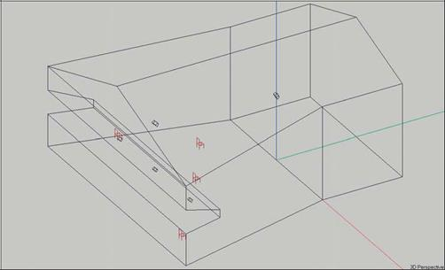
228
Chapter 11: AURA

AURA provides two simulation methods, AURA Mapping and AURA Response:
AURA Mapping will map the acoustical measures (according to ISO standard 3382) on Audience Areas or at individual Listener Seats by developing an Echogram. AURA Mapping results are adequate for mapping purposes but not for Auralization.
AURA Response, on the other hand, calculates a Reflectogram, from which a Binaural Impulse Response can be extracted and used for Auralization.
Before we start exploring Aura’s capabilities, let’s take a look at the room using Area Mapping to get a feel for its performance.
Select Area Mapping from the Calculations pull down menu. The first thing you will notice is that the Main floor Audience Area is obscuring the Balcony Audience Area. The designer forgot to move one of the audience areas so this wouldn't happen. No problem, return to the Edit Project module and select Area Layout from the Edit pull down menu. Then select Move from the Edit pull down menu and grab the Main Floor Audience Area and move it out of the way.
Now click on the Direct SPL icon. Select all five loudspeakers and both Audience Areas in the Settings setup screen Also check All Map-pings,then click on Next. When the Items and Noise screens open, accept the default settings by pressing on Next. In the Calculation win-dow make sure that Map with Shadows is turned On and then press OK.
Return to the Area Mapping screen and rerun the Direct SPL simulation. As you can see from the 1000 Hz to 4000 Hz plot shown below the loudspeaker system is producing fairly smooth, high level direct sound coverage except in the corners of the audience areas.
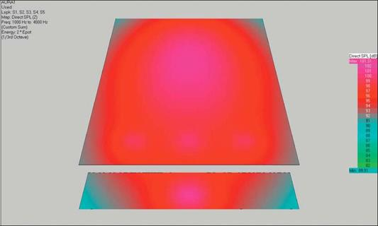
229
EASE 4.3 User’s Guide & Tutorial

Next, run an STI simulation. As you can see the intelligibility looks pretty good.
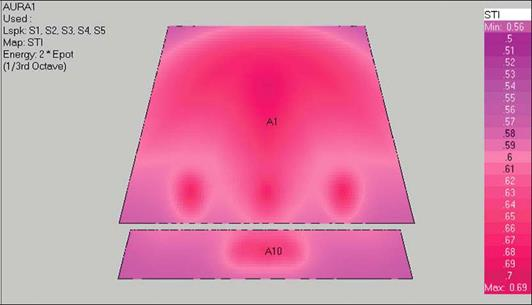
This would also be a good time to look at the room’s RT60. Return to the Main menu and from the View pull down menu select Room Info/Draw RT.
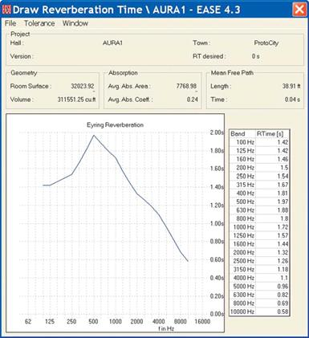
230
Chapter 11: AURA

AURA Mapping
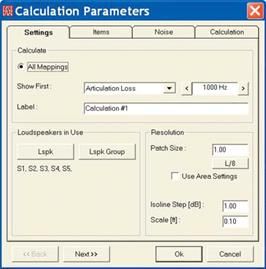
Now, it's time to begin to explore AURA Mapping. Return to the Area Mapping window and select Aura from the Mapping pull down menu. This will open the Aura Mapping Settings dialog window.
As you can see it is almost identical to one we have been using in Standard Mapping. The big difference is that only All Mapping is allowed. Make sure all five loudspeakers are selected. Next, change the default label (Calculation #1) to a more meaningful name, such as AuraCalc #1. Then click on Next.
When the Items tab opens notice that you have a choice of carrying out your analysis on Audience Areas, at specific Listener Seats or both. You can also choose which Audience Areas and Listener Seats are to be included. (Note that if we had entered the AURA module through Room Mapping, we would also be able to include Faces in the investigation.)
The calculation time associated with mapping on Audience Areas in AURA needs to be carefully assessed. In AURA, Audience Areas are divided into a grid of points and AURA will develop an Echogram/Reflectogram at each point. The density of this grid is determined by the Resolution setting in the previous Tab. If we had planned to use Area Mapping in this exercise, we would probably have increased the Patch Size under Settings to at least 4, which is a very low resolution setting when compared to the Patch Size we have been using in Standard Mapping
Calculation time is also dependent, among other many factors, on the number of particles (rays) that are used.. The denser the grid and the higher the num-ber of particles, the more accurate the simulation and the longer the calcula-tion will take. In many cases, however, the calculation time would be very long, even with a powerful computing machine. This often prompts a compro-mise between the different parameters. When compromising, be careful not to set the Resolution setting too coarse as the maps can then be misleading.
Another possibility is running the AURA calculations at individual Listener Seats. The Echogram/Reflectogram is then created only at these points and the Resolution settings are immaterial. The number of Listener Seats and their locations can usually be set to yield adequate results in a reasonable calculation time. By properly placing Listener Seats at representative loca-tions in the room and then running AURA calculation at these representative locations you can get descriptive results about the general performance of the room relatively quickly.
How dense and how far apart these Listener Seats should be placed is an issue, especially in large rooms where impulse response may change drasti-cally from one location to another. In these cases a few Listener Seats may not be enough to draw a descriptive picture of the room's performance and more Listener Seats will have to be added.
We'll use only the Listener Seats in our exercise. Make sure that only On Seats is checked and then select all four Listener Seats under the List. Seat button.
Press Next to move onto the Noise tab and then Next again to open the Cal-culations tab.
231
EASE 4.3 User’s Guide & Tutorial

Calculation Setup Parameters
The Calculations dialog window allows you to choose the number of Particles (Rays) that will be used in the simulation, the Length of the simulation (the width of the Time window), the Default Value for the Scattering factor that will be taken into account and the Number of Calculation Threads.
The higher the number of Particles (used here as another ex-pression for radiated rays), the denser the Echogram and the greater the accuracy. A drop down selection wizard provides several presets that allow you to choose between fast and rough calculations (Very Low, Low Resolution settings) and slow and accurate calculations (High, Very High Resolution settings). Normally, one would start the process by calculat-ing at a lower resolution to obtain an overview and use higher resolutions once final results are needed.
You may enter arbitrary particle numbers by selecting the User-Defined list item. Notice that as you choose one of the resolution levels, the number of Particles shown in the asso-ciated field changes.
A similar drop down menu assists in choosing an appropriate length for the simulation. The minimum Length [ms] should be approximately two thirds of the expected RT time. This is the default, labeled Standard, Fast. The setting Long can be used to enhance the simulation accuracy, for example in the case of flutter echoes, but it is seldom required. The setting Extended should only be used if a significant deviation from the statistical RT is to be expected, such as in coupled rooms.
Using the User-Defined setting you may enter your own choice, for example for early-energy investigations only sev-eral hundred milliseconds maybe enough. However, be aware that most room-acoustic measures require a full-length impulse response
232
Chapter 11: AURA

One of AURA's features is its ability to include scattering (diffusion) in its simulations. Surfaces exposed to sound waves exhibit, in addition to the specular reflection of the sound waves in a certain direction, some de-gree of diffusion, which is the scattering of the incident sound wave in many different directions with considerably attenuated amplitudes. The Scattering characteristics of Wall Materials, when known, can be entered into the Wall Materials data base and used in AURA simulations. More details on this feature follow near the end of this Tutorial section.
AURA also provides an Add Scattering feature that factors a nominal amount of Diffusion into the simulations when the Diffusion characteris-tics of the wall materials are not known. The Default Value for Surfaces without Scattering Data defines how wall materials are treated which have no scattering properties assigned.
Generally, a broadband scattering factor of 20% has turned out to be a feasible choice for most projects. If your room has very large, smooth walls you may want to switch to the setting Smooth Flat Surfaces with a default scattering coefficient of 10%. If your room is very diverse and in-cludes a lot of columns, diffusers, furniture or other elements you may want to use Considerable Surface Structures which defines 40% of the reflected energy as being scattered instead of specularly reflected.
If you want to be more accurate than that, you will need to define scat-tering coefficients for each of the wall materials in use. We’ll go into more detail on this later in the Tutorial. Note that if the Scattering Coeffi-cients of all the wall materials being used have been defined, the Scat-tering menu will be inoperative. EASE defines "having Scattering defined" as having at least one 1/3 octave band defined.
Introduced with EASE 4.3, the new version 3.0 of AURA features multi-threaded calculations. This new function allows AURA calculations to be performed in a fraction of the computation time required previously. It is particularly efficient on computers having quad-core or larger proces-sors. For any multi-core computer AURA may be faster by the number of cores compared to the single-core computer. Additional improvements in AURA compared to the previous versions further increase the speed gain even on a single-core computer.
To obtain the maximum performance choose the Number of Calculation Threads equivalent to the number of processors (or virtual processors) of your computer. Selecting a higher number will result in too much switching overhead and does not increase the overall performance. Se-lecting a lower number will keep your computer more responsive to user input, for example, to work on another project or document while the computation is running, but it will also slow down the calculation.
For this exercise we suggest using the number of threads equal to the
number of processors in your computer. This will require almost all of the
computer’s performance for the calculation, but will be the fastest.
233
EASE 4.3 User’s Guide & Tutorial

The Advanced Options >> selection bar in the lower right corner of the Calcula-tions window leads to a new dialog window.
AURA Mapping provides two methods of simulating the sound propagation, En-ergy Loss and Particle Loss. In Energy Loss, which is the default, the energy at every wall reflection is decreased by (1-α). In Particle Loss the energy at every wall reflection remains constant, but a comparison between a random number (range from 0 to 1) with the absorption coefficient α of the wall will decide whether the ray will be further traced or not. Energy Loss is more accurate un-less a high number of Particles are used, but more time-consuming.
AURA also includes a Diffuse Rain option that recognizes the scattered portion of the simulation more than the conventional method. It's use is recommended in highly reverberant rooms (such as gyms) and rooms with partially shadowed areas (such as theaters with deep under-balcony areas) and side rooms (al-coves). In these cases, it requires smaller Particle numbers and lower calcula-tion times than the conventional method. For example, 1/10 the number of Particles is commonly used with Diffuse Rain.
The algorithms that support Diffuse Rain actually generate new Rays whenever a Ray strikes a surface and follows these new Rays until they impact upon a Listeners Seat. The energy level of the new Rays takes into account the Surface's scattering coefficient as well as the surface's absorption. The energy level of the primary specular reflected Ray is, of course, reduced by the energy absorbed by the surface and the amount lost through scattering.
Also available is the setting for Orientation Point which is required for the correct use of LF and LFC investigations. This is the point where the imagined receiving head is aimed at, since the two measures LF and LFC depend on the direction of the intruding sound waves and thus on the orientation of the receiver. It should normally be set to the coordinates of the main loudspeaker or to a center point on the stage.
We won’t use Particle Loss or Diffuse Rain in this simulation. Instead we'll use the default settings; Low Resolution, Fast for the Particles setting and Standard, Fast for the Length. figure. Please note, however, that 32,000 Particles is a relatively low figure. As a result, the re-sults shown in our review may differ slightly from the ones you get as you work through this exercise. If we used a higher number of Parti-cles in these simulations, the variations would become smaller.
To start the simulation, press OK. You will then receive an alert,telling you the amount of RAM and hard disk space needed to complete the calculation. It gives you the opportunity to modify the setup parame-ters, if the amount of memory needed is beyond your machine’s capa-bility.
Press OK and AURA will start the calculations, which will take some time. How long depends on the setup parameters and your computing machine's capability. A Busy status screen will let you know approxi-mately how long the simulation will take and follow the progress.
234
Chapter 11: AURA

A Combine Loudspeakers prompt will appear as soon as the calculation is completed.
Clicking on OK will give you access to the Aura Map-ping Calculation control window . Note that all 5 Loud-speakers are checked.
We used all 5 loudspeakers in our simulation and we certainly want to save the results, so we don't have to rerun the simulation. To do this, press Combine Loud-speakers. This will bring up a Save Mapping File prompt. Let's call the file All Loudspeakers On since it covers the "all loudspeakers on" simulation. Insert All Loudspeakers On into the File Name window and press OK to save the mapping file as an .emp file.
AURA will save the file and then return to the combina-tion control window to allow you to create and save other Mapping files based on other Loudspeaker com-
binations. Do not press Done at this time unless you want to lose all the data in memory.
Uncheck Loudspeakers S3, S4 and S5 and then press Combine Loudspeakers again. Once again you will be prompted to save the results in a Mapping file, which this time we will call s1s2.emp. Note that this file will contain the Echogram data for the room with only Loudspeakers S1 and S2 turned on.
However, the data for all 5 Loudspeakers still exists and will until you close the Recombination window. This allows you to make more Mapping Files with other Loudspeaker combinations. After you have fin-ished making these Files, press the Done button to close the Combination Control window and start an-alyzing the Mapping files you have created.
AURA will then give you one last reminder that you are going to lose the chance of any further Recombi-nations if you continue.
Pressing Yes will close the Recombination window and open a View Calculations window based on the last Loudspeaker Recombination created.
We do not want that Mapping file at this point; we want the All Loudspeakers On file. To change the file, click on the File Folder icon to open the Load Map File dialog box and select the All Loudspeakers On file.
Approving the selection by clicking on Open will load and open the mapping file we want.
235
EASE 4.3 User’s Guide & Tutorial

The AURA View Calculations window is identical to the View Calculations window we explored under Room Investigations, only now you will find that the Echogram Tab is active. Refer to the graphic at the top of the next page.
If you previously skipped the Room In-vestigations portion of the Tutorial, we suggest at least scanning it before you go on.
Echograms
An Echogram differs from a Reflectogram in that an Echogram stores all the energy arriving at a location in 1 ms wide boxes or bins as they are commonly called (refer to the graphic shown below).
A Reflectogram records impacts (single
reflections) on a specific location and
stores them. The detailed information
provided by a Reflectogram requires sig-
nificantly more memory but it is also more
accurate and required for good auralizations.
Selecting the Echogram Tab will open the Echogram shown at the top of the next page. Notice that we have selected Listener Seat #1 for use in the following graphics and no weighting. Feel free to investigate the performance at other Listen Seats and/or with A weighting as we go through this exercise.
Note that the Red Sum and Blue Schroeder curves will not be visible until you have turned them on. The Sum curve represents the energy buildup at the chosen location, Listener Seat 1, as a function of time, while the Schroeder curve is a backward-integration curve. It is used for calculating the reverberation time
You can manipulate the Time and Scale axes to zoom in and out on the Echogram. The Step option also allows you to increase the box size from 1 ms to wider values to show energy summation in case of identical reflection impacts. This is especially useful with calculations based on Particle Loss. Try different input values under Scale and Time [ms] and see for yourself what happens.
Before we check out the wide assortment of acoustical measures offered by AURA Mapping, lets pause a minute to review a few basics. Classic measures, such as RT60, D/R Ratio and Critical Distance, are useful indicators of the acoustic performance of the Room and its sound system, but do not fully take into account the subjective aspects of the listening experience.
236
Chapter 11: AURA

Over the years, acousticians have developed other measures that more fully reflect the listener’s tonal perception of sound. ISO 3382, the International Standard on Room Acoustic Measurements, defines these measures.
A detailed description of these measures is beyond the scope of this Tutorial. For additional information, we can only refer you to the Ap-pendix section of the EASE43Manual included in your EASE program and to acoustical text books. Glenn Ballou's Handbook For Sound Engineers, Fourth Edition, for example, contains an excellent review of this subject.. You'll find the EASE43 Manual stored under Program Files/EASE 4.3/Easepath/Ease43Manual..
Now, let’s return to the Frequency tab, and check what acoustical measures AURA Mapping offers. We'll start with EDT. Go to the drop down Measures selection box in the Tool Bars and select EDT.
EDT Early Decay Time
EDT stands for Early Decay Time, an important room acoustical version of the RT. Instead of “measuring” the time needed for a 60 dB decay, Early Decay Time meas-ures the time needed for the first 10 dB drop of the Schroeder decay curve (from 0 dB to -10 dB) and then extrapolates the 60 dB decay time by multiplying by 6. EDT figures are more related to the subjective RT impres-sion a listener gets in a room.
For example, compare the EDT curve at Listener Seat 1, to the other Listener Seats. It is easy to do. Go to the Lo-cation section of the Tools Bars and click on the < and > arrows to move from one Listeners Seat to another. No-tice how quick and easy it is.
Note how the RT curves vary from one seat to another, especially from Listener Seat 3 which is located under the balcony.
Also note that they vary considerably from the Room RT60 curve calculated using the Eyring RT formula.
237
EASE 4.3 User’s Guide & Tutorial

T Measures (T10, T20, T30)
Because of the differences between the objectively calculated classical RT60 and subjectively perceived EDT impres-sions, other RT measures were also in-troduced. For example, T10 which is defined as the time required, after ex-cluding the first 5 dB of decay, for the sound energy to decay another 10 dB, multiplied by 6 to project the 60 dB decay time.
The T10 RT curve at Listener Seat 1 is shown to the right.. AURA also calcu-lates T20 and T30 which have defini-tions close to those of EDT and T10. Try them out. It only takes a few seconds.
Definition
Now select Definition at Listener Seat 2, to get the Definition curve show below. Definition is one of a number of different energy measures used in room acoustics. It defines what percent the energy in the first 50 ms after the first arrival is of the total energy. For good intelligibility a considerable part of the total energy (>50%) should arrive within this first 50 ms period
238
Chapter 11: AURA

C50
The C50 curve is shown on the right at Listener Seat 3, where we can notice positive values at all one-third-octave bands with a clear rise at the higher fre-quencies. Any value above 0 dB in a room with normal reverberation repre-sents good intelligibility. In rooms with higher than normal reverberation, any value above -5 dB is considered good.
STI Speech Transmission Index
Another frequently used intelligibility measure is the STI Speech Transmission Index , which is a single number be-tween 0 and 1.
STI is calculated from a set of other numbers called MTF Modulation Trans-fer Function. It takes into account how the transmission from source to receiver is affected at different frequency bands and how much these frequency bands contribute to speech intelligibility. If you turn to the STI display in our example, you will get the curve shown here, which shows an STI of 0.694 at Listener Seat 3.
239
EASE 4.3 User’s Guide & Tutorial

Before we leave the STI display, click on the Options tab. Note that it offers you two variations to the Standard STI calculation, one modified to reflect intel-ligibility with a Male voice and the other based on the use of a Female voice.
You may also switch to a STIPa or RaSTI setting to compare with meas-urement results. Check out the effect of changing these setup parameters on the STI display.
In addition to these settings, corrections for low signal-to-noise ratio and for masking of frequency bands can be taken into account. These parameters for the STI are taken into account ac-cording to the standard IEC 60268-16 (2003).
ALcons%
Articulation Loss of Consonants
ALcons, Articulation Loss of Conso-nants, is another way of measuring in-telligibility. It measures intelligibility by the percentage of articulation loss of consonants. The Alcons% for the same Listener Seat are shown to the right.
Note that we added a tabular listing to the screen by selecting Combined in the lower left corner of the screen. This al-lows us to read the exact values at dif-ferent frequency bands. In this case we have Alcons of 3.88%, which is consis-tent with what we would expect from the C50 figures. Note, however, that it is significantly lower than the result we ob-tained when we mapped Alcons under Area Mapping.
240
Chapter 11: AURA

C80 Clarity Measure
For the assessment of music, AURA provides the well-known C80 Clarity measure, which belongs to the energy ratios set. It is defined as the ratio in dB of the energy in the first 80 ms after the first sound arrival to the energy content arriving after the first 80 ms.
It is not always desirable to have C80 values as high as possible, because the higher the value of C80 the lower the effect of the diffuse field, whose exis-tence under proper control is needed in many cases of music reproduction.
The scale for evaluating the C80 pro-jections is in the Room Investigations section of this tutorial. In our example, the system would reproduce the per-cussive instruments especially good.
Center Time
Center Time is a reference value for spatial impression and clarity. It is de-fined as the ratio between the summed products of the energy components of the arriving reflections and their corre-sponding delays to the total energy component. The higher the value, the more spatial is the acoustic impression.
241
EASE 4.3 User’s Guide & Tutorial

LF Lateral Fraction
LF, Lateral Fraction, is a measure of the perception of the spatial extension of sources. This map shows the Lat-eral Fraction in percentage.
LFC Lateral Fraction Coefficient
LFC, Lateral Fraction Coefficient, is also a measure of the perception of the spatial extension of sources. It shows the Lateral Fraction Coefficient as a percentage.
242
Chapter 11: AURA

Sound Strength
Sound Strength is a dB ratio between the total energy at the measuring loca-tion to the energy measured 10 m from the same acoustic source in the free field. It characterizes the volume level.
Echo Speech
Echo Speech projects how seriously delayed energy spikes will degrade speech intelligibility. It is derived by ap-plying a weighting function (proposed by Dietsch and Kraak) to the Energy Time Curve. Computed values greater than 1 are likely to be problematic and values greater than 0.9 are marginal.
243
EASE 4.3 User’s Guide & Tutorial

ECHO Music
Echo Music projects how seriously de-layed energy spikes will degrade the quality of music. It is derived by applying a weighting function (proposed by Di-etsch and Kraak) to the Energy Time Curve. Computed values greater than
1.8 are likely to be problematic and val-ues greater than 1.5 are marginal.
Note that the Echo Speech and Echo Music Calculations display the results as a function of frequency.
Echo Speech Echograms Echo Music Echograms
Echo Speech Echograms and Echo
Music Echograms are also available as a function of time under the Echogram Tab by clicking on the Echo Speech or Echo Music buttons.
The Echo Speech Echogram is shown here. As you can see it shows the val-ues at a particular frequency, 1000 Hz in our example, as a function of Time.
244
Chapter 11: AURA

Note the Red and Yellow lines in the Echo Speech Echogram on the previous page and the Echo Music Echogram shown here.
Except for early reflections, anything above the Red line is likely to be a prob-lem while anything above the yellow line is marginal. In our example, the peak be-tween 60 msec and 75 msec doesn't rep-resent a problem because of the short delay times. In fact, it’s not uncommon as the early reflections impact upon the tar-get.
Note that you can use the Cursor to de-termine the exact location of this peak in time. Run the Cursor across the chart and the delay times and SPL levels will read out in the Cursor section at the bot-tom of the screen.
Histograms
AURA also provides a Histogram as a quick way of checking the validity of the simulation. A Histogram quickly tells you if an appropriate number of particles were used in the simulation.
Select Histogram by putting a check in the Histogram radio button. It's located beneath the Echogram radio button.
This will open the Histogram shown here. As you can see, a Histogram displays the number of impacts stored in each of the 1 ms wide bins. The impact display should be both dense and constant during the entire time frame (1000 ms in this exam-ple). An inadequate number of Particles was used if the display isn't dense or if it thins out toward the end of the time frame.
The number of impacts stored in each bin is also important. A good rule of thumb to follow is that on the average each bin should have at least 10 impacts. If the av-
erage falls much below 10, consideration should be given to rerunning the calculation with more Particles. If it's below 5, the calculation should definitely be rerun. You can get a good feel for the average by running the Cursor across the chart while observing the count in the Cursor readout at the bottom of the screen.
Note that when the Particle Loss method is used, some thinning toward the end of time frame is acceptable as long as only energy ratio calculations, such as C Measures, will be run. In energy ratio calculations, only a good impact balance before and after the Split Time needs to be assured. RT and STI calculations, on the other hand, need a long smooth particle distribution over time to be accurate.
245
EASE 4.3 User’s Guide & Tutorial

Particle Loss Method
We used an Energy Loss simulation in all of our previous AURA examples. Now let's take a quick look at the faster Particle Loss method.
Return to the Area Mapping window and select Aura from the Mapping pull down menu. Use all of the same set-tings, except under the Calculations Tab/Advanced Options switch to Parti-cle Loss.
The first thing you will notice is that the simulation takes far less time. On our 2.8GHz dual-core machine with 1 MB of RAM less than 30 seconds com-pared to almost 5 minutes for the En-ergy Loss simulation.
The trade off is accuracy. Follow the prompts, do the Recombination and save the Mapping File. Open the View Calculations window and click on the Echogram Tab. As can see from the graphic to the right, the density is far less than it was in the Energy Loss Echogram.
The next logical step is to use the His-togram to see if it shows a usable simulation. As you can see from the graphic, it doesn't come close to meet-ing the criteria for a good simulation.
246
Chapter 11: AURA

Now, do a new study using High Reso-lution Slow, that is, 506,000 Particles. It will take longer, but still less than it took for the Energy Loss simulation. The re-sulting Echogram appears to the right.
As you can see, the density has in-creased and is now more comparable to the one generated by the Energy Loss method. You'll also find that the other simulations are closer to ones generated from the Energy Loss simu-lation, but that there still are small dif-ferences.
The Histogram shows you why. You still need to use more Particles to achieve the same degree of accuracy as the Energy Loss method.
247
EASE 4.3 User’s Guide & Tutorial

Aura-Response
AURA Response is used mainly for architectural acoustic investigations and auralization. Its advanced algorithms allow the creation of Re-flectograms with larger reflection orders and longer time windows than is possible with the Mirror Image and Ray Tracing algorithms used by EASE. This eliminates the need to add a statistical Tail to the Reflectogram and improves the realism of any auralization.
We will begin our exercise by accessing Calculate AURA Response under Tools, in either the Area Mapping or Room Mapping modules.
Note that you have to Activate one of the Audience Areas and pick a spot in one of the active Audience Areas before you can open Calculate AURA Response. Go to the Items pull down menu and choose Select Active/Audience Areas and make your Audience Area selection. Don't worry about the location, you will have a chance to change it before running the calculations. If you select Room Mapping as the entry port, you don't need to pick a spot.
AURA Response opens with the AURA Response Calculation setup window shown to the right..
As you can see, this setup window gives us the opportunity to select the Loudspeakers that will be used in the simulation and the results (files) destination. If we select Probe, the result (files) will be sent to the Probe and the Probe will open at the completion of the simulation. Se-lecting EARS will open the File in EARS for further processing.
Selecting Only Save To File will save the results as a Response File that can then be opened at any time in the Main menu by going to the Calculations pull down menu and selecting Probe Post Processing.
Note the Create BIR File check box. The program can also create a .bir (Binaural Impulse Response File) for auralization at the same time it creates the .rsp Response File. Creating both at the same time will lengthen the calculation time, but only by a small amount.
To reduce the calculation time, we'll use only Loudspeakers S1 & S2 and send the results to the Probe. Normally, of course, we would be using all of the Loudspeakers.
Press Next and the Locations Tab window shown here will appear.
This setup window lets you choose what locations will be used in the simulation. Note that you can select both the Walker location and any combination of the Listener Seats and the program will generate a Re-sponse File for each location selected. We'll use just a single Listener Seat, Seat 1, to reduce the calculation time.
A more common practice would be to include all the Listener Seats, so the Room's performance could be evaluated at a number of locations.
Pressing Next will open the Calculation Tab window shown at the top of the next page.
248
Chapter 11: AURA

The Calculation Tab gives you a chance to review and set a number of essential parameters for the Response File simulation. The basic parameters are the same as for the AURA Mapping, please refer to the description above. Under Advanced Options additional largely spe-cific to the AURA Response calculation settings are available.

In order to understand them better, note that the Response File Calcu-lation is done in two separate parts (runs). For the early geometric re-flections having a reflection order up to the cut off order (the first part), a hybrid Mirror Image method is used. This method uses a ray tracing algorithm to scan the room for mirror images using a deterministic, non uniform directional distribution. For the early scattered reflections and the later reflections (the second part) an energetic ray tracing algorithm with a uniform density distribution is used. Both parts are finally added to gain the response.
The essential parameters are:
Max. Diameter after 1s [m]:
This setting determines the diameter of the counting balloon after 1 second. It is automatically adjusted when you select the number of Par-ticles in the Standard Options screen. This particle number is used for both the first and the second part of the ray tracing. If you want the re-sults for the early part to be more precise in comparison to the late part, you have to lower the Max. Diameter setting accordingly.
This parameter can be adjusted according to the room details. In a room with only a few large walls, a larger value can be chosen. On the other hand, in a room with many walls which give the room a lot more details, a smaller number (diameter) is appropriate. A good choice is to use the diameter of the smallest surface. However, less than 1m (3 Ft.) is usually not really necessary and more than 5m (15 Ft.) is probably too large.
Note that the number of rays is proportional to 1/d 2. In other words doubling the diameter makes this part of the calculation run 4 times faster. For our purpose, the default setting will be sufficient.
Cut Off Order:
Cut Off Order sets the transition reflection order where the program switches from the hybrid Mirror Image method to the ray tracing calcu-lation method. No extrapolation is used.
For the second part, the ray tracing calculation, sound particles are ra-diated with a well defined energy depending on the directivity of the source. These particles are followed through the room and each time a reflection takes place at a surface the surface absorption is taken into account. Finally, if the particle hits a receiver its current energy is added to a Bin in an Echogram. The Bin is selected according to the source's delay and the distance travelled by the particle.
The Order should be set depending on the probability of singular strong or flutter echoes in the room. If all walls are more or less scattering surfaces, smaller orders can be used. If some walls have a low scattering coefficient, larger reflection orders should be used
The program will accept settings from 1 to 30 and the default setting is 10. Usually relatively small Orders (5 to 7) are used for Probe re-flection studies and higher numbers used if the simulation will be used for auralization.
249
EASE 4.3 User’s Guide & Tutorial

Density Factor
Density Factor defines the number of pulses per ms that will be used to generate the detailed structure of the late part in the reflectogram. Set-tings from 10 to 30 are acceptable and the default setting is 20. We'll use 10.
Tail Resolution:
Tail Resolution defines the time resolution for the calculation of the tail part by setting the width of the time boxes (bins) used for the energy distribution of the late part. A range from 1 to 10 is allowed with a de-fault setting of 5. We'll use 5.
Press Start Simulation to approve the settings and begin the simulation. Like in AURA Mapping, the program will initially show you an estimate of the required RAM and hard disk space. Confirm with OK.
Expect the calculation to take some time. It took slightly over 3 minutes on our 2.53 GHz dual-core test machine and almost 7 minutes on a 2 GHz machine with 512 MB of RAM.
Since we elected to send the results to the Probe, a prompt will appear at the conclusion of the simulation. It provides a means of selecting the File that will be opened in the Probe.
Select a file and press OK and the EASE Probe window will open. See below.
At this point you can work with and analyze the Reflectogram just as you did in Advanced Acoustical Investigations.
250
Chapter 11: AURA

To verify this, let's add the Schroeder RT Time to the Reflectogram. Open the Options Menu [F9] and open the Schroeder Tab. Press the Compute button and select Draw Schroeder Curve into Reflectogram . Then click on OK and the Schroeder RT information will be added to the Reflectogram.
You will recall that we used Loudspeakers S1 and S2 in our calculations. We can, if we want, split this file into two files, one for Loud-speaker S1 and the other for Loudspeaker S2. Under the Edit pull down menu, select Deactivate/ Loudspeaker Pulses and deactivate Loudspeaker S2. Now, all the reflections belonging to S2 will be grayed out.
If we want, we can save the active part of this reflectogram (shown in green color) as a new .rsp Response File. Then, after reloading the Probe, we can use the Reflectogram to analyze the systems performance with just S1 turned on.
251
EASE 4.3 User’s Guide & Tutorial

Wall Materials Database Scattering Wizard
The EASE 4.3 Wall Materials database includes a Scattering Wizard that allows real-life approximations of scattering coefficients.
We’ll start by selecting a Wall Material in the 4.3 Wall Material Database. Go to the Main EASE window and select Main Databases /
Wall Materials and browse to the material you want to use,.We chose GYPBRD58.mat and double clicked on it to open the file on GYP-
BRD 5/8.
Note that it includes a graph of the Absorption Coefficients.
Selecting the Coefficients Tab introduces a new screen with a tabular listing of the Absorption Coefficients and a column for the Scattering Coefficients.
At this point you can manually enter the Scattering Coefficients it you know them.
Selecting Calculate Scattering from the Edit pull down menu will open a setup screen that allows you to calculate the scattering character-istics based on the surface’s size and shape. The new file including the Scattering Coefficients can then be saved and used in AURA sim-ulations.
252
Chapter 11: AURA

Note that the setup screens give you the oppor-tunity to select from a variety of surface shapes and to define its size.
Note that you can also look at a number of ex-amples that have been created to help you be-come familiar with this portion of the program.
The graphic below shows the Scattering Coeffi-cients using a 2 Ft. Square.
At this point you can save the file under a new name and then use it in your room models just as you would any other material. AURA can then use these Scattering Coefficients in its calculations.
Try out this section using different materials, sizes and shapes. You’ll find them interesting.
253
Chapter 12: Auralization

A u r a l i z a t i o n

255
EASE 4.3 User’s Guide & Tutorial

Chapter 12: Auralization
Auralization is the process of converting the acoustic and electro-acoustic data generated by EASE into an audio signal that can be heard and evaluated. It adds subjective listening to the evaluation process.
EARS is a Binaural Auralization program that take into account both the acoustical properties of the room and the hearing characteristics of the human head. Binaural auralizations are inherently more realistic than Monaural auralizations, since Monaural auralizations do not take the characteristics of human hearing into account.
EARS offers both “Off Line” and “On Line” (Real Time) auralizations.
"Off Line" binaural auralization signals are produced "Off Line" and then stored for later replay or listening. Since these files are quite large, these auralizations are usually limited to relatively short "sound bites" that are replayed again and again. Eighteen to twenty second sound bites are typically used, but longer ones are possible.
“On Line” binaural auralizations use LAKE Convolution Filter software to produce the auralization signal in a continuous or "ongoing" man-ner that can be heard immediately in what amounts to "Real Time". Thus, they are usually referred to as RT auralizations. Since the aural-izations are heard in "Real Time" and not stored, there is no limit to their length.
Auralization is a step by step procedure that normally starts with a Reflectogram created by EASE and ends with the listening experience.
The steps are:
Step 1: Creating the Reflectogram. The Reflectogram represents the acoustical signature of the room at the point it was taken.
Step 2: Adding a Tail to the Reflectogram. The Tail extends the Reflectogram and adds realism to the auralization. Note that using AURA to develop the Reflectogram eliminates this step as it automatically adds a Tail to the Reflectogram.
Step 3: Combining the Reflectogram with the characteristics of human hearing. This creates the Binaural signal used in the final con-volution.
Step 4: The final convolution and listening experience.
Step 1: Creating the Reflectogram.
Since the Reflectogram is the foundation upon which the auralization is built, having a good one is essential to the production of accurate, realistic auralizations.
Note: AURA with its advanced algorithms and ability to take advantage of the reduced computing times offered by multi-core processors is highly recommended for anyone using EARS. It allows the creation of Reflectrograms with larger reflection orders and longer time windows than is possible with the Ray Tracing and Mirror Image algorithms used by EASE. AURA also automati-cally creates the “Tail”, eliminating the need for Step 2, Adding a Tail to the Reflectogram. AURA also allows the effects of Scat-tering to be included in the simulation; Ray Tracing and Mirror Image algorithms do not.
Ray Tracing Impact studies are the favorite of users who do not have AURA, since they produce satisfactory Reflectograms in less time than Mirror Image studies.
Mirror Image Impact studies produce more precise Reflectograms than Ray Tracing Impacts. However, the longer computation times re-quired by the Mirror Image method usually make its use impractical in large, complex rooms.
A normal tendency while creating Reflectograms is to think that the longer the Time Frame used, the better the results. This isn't necessar-ily true. It certainly isn't true if the Reflection Order is too low and many of the rays are cut off by the reflection count before they impact upon the counting balloon, or if an inadequate number of rays are emitted into the room to ensure a good study.
256
Chapter 12: Auralization

A factor to consider when choosing the Time Frame is that in most rooms statistical behavior of the reverberations takes over after 180 ms to 250 ms have elapsed. After this occurs, impacts generated statistically by adding a statistical "Tail" to the Reflectogram can be used.
Because of the calculation time involved, choose the location and number of Listener Seats with care. Using a large number of Listener Seats doesn't make sense unless each one is going to tell you something useful about the room. You want locations that will provide you with useful simulations.
Because every room is different, there are no hard and fast rules to generating good reflectograms. However, one way to tell when a questionable one has been created is the reflection density. As a general rule, the reflection density in a room increases with time. So, a decreasing density toward the end of the Reflectogram indi-cates either the number of Rays was insufficient or the Reflection Order was to low.

The Computing Protocol screen that appears at the end of the cal-culations is a good place to check this. Note that in our example the Reflection Order count appears to be leveling off at the end, a sign that more Rays or a higher Reflection Order should probably have been used.
A thinning (lower impact density) should not show up in the Reflec-togram when you view it using the Probe. If it does, you probably should rerun the Impact study with more Rays or a higher Reflec-tion Order
Additionally, and as we learned while studying Ray Tracing Impacts in Advanced Room Investigation, the Ray Tracing Control window
can also be used to tell when a questionable Reflectogram is being created. If you skipped this section of the Tutorial, please go back to the Advanced Room Investigation section and review the pages on Ray Tracing Impacts.
We’ll use the Reflectogram we created in our Ray Tracing Impact study under Advance Room Investigations for our Auralization exercise. To get started, open the Ray Tracing module, go to the Rays pull down menu, select View Impact File and then open the .mpc file we cre-ated. When the View Impact File dialog window opens, select Invoke Probe. Be patient, it may take the program a minute or two to de-velop the Reflectogram.

257
EASE 4.3 User’s Guide & Tutorial

Step 2. Adding a Tail to the Reflectogram (if needed)
Note: AURA users do not need to add a Tail if the Response File was created by AURA. AURA automatically adds the tail, including scat-tered diffuse and reverberant sound.
In normal rooms the diffuse sound decay starts not later than 250 to 300 msec after direct sound, so Reflection orders of 12 to 15 should be the maximun used and a statistical tail added to the reflectogram. Generally, there is no Reflection Order limitation in EASE 4.3 (orders of 50 or more are possible), only a memory question. The files can easily be 500 Mb or more and difficult to handle. They also take a long time to calculate. Accordingly, most users use shorter time frames and lower reflection orders and add a Tail.
There are two ways to add a Tail, Add Random Tail and Add Predicted Impacts.
Adding a Tail with Add Random Tail
Select Add Random Tail from the Edit pull down menu. This will introduce the Reverberant Tail setup screen shown below. It allows you to edit the Tail's characteristics. We'll be returning to this screen soon to explore its use. So, for now, just click on OK.

A typical result is shown below.

258
Chapter 12: Auralization

Notice that the Tail appears to be a little lower in level than the initial Reflectogram. The default parameters used to generate the Tail were based on an average of the last 10 impacts and usually needs to be changed.
To correct this, estimate how much lower the level is in dB. You can do this by using the Level scale on the right side of the Reflectogram or by repeatedly clicking in the Reflectogram on each side of the Tails junction with the original Reflectogram and using the dB readouts to estimate the level difference.
Then return to the Edit pull down menu and select Cut Random Tail to remove the Tail so you can add a new one.
Next, open the Edit pull down menu again and again select Add Random Tail. This will open the Reverberant Tail setup window again. Note that you can change the Tail's Start time, its Length, the Pulse Density, amplitude variations (Amplitude Noise) and Level (Amplitude Gain).
Most editing of the Tail is done visually, The object is to create a Tail that closely resembles the starting Reflectogram in density, in level and in individual pulse variations (spikes and peaks).
To see how this works, change the Amplitude Gain by 10 dB, click on OK or Recompute. EASE will then add a new Random Tail based on the new parameters. Now, use the Zoom feature to take a closer look at the pulses on both sides of the junction.
Please repeat the Cut Random Tail and Add Random Tail procedure until you are satisfied with the results. We ended with a Pulse Density of 30,000, a 10 dB Gain Increase and a 30 dB Amplitude Noise increase.

As the final step, take a look at the Reflectogram at several frequencies. What looks good at 1000 Hz may not look quite as good at 400 Hz or 4000 Hz. If this is the case, you may want to revise the Tail again to strike a compromise that looks best for all frequencies.
When you are satisfied you can either save the result as a Response File (a .rsp file) or go directly to the Auralization program and create a Binaural Impulse Response File (a .bir File). If you decide to save the edited Reflectogram as a Response File, open the File pull down menu, select Save Response File As and follow the prompts.
259
EASE 4.3 User’s Guide & Tutorial

Using Add Predicted Impacts
Add Predicted Impacts is another method of adding a random tail. This method analyzes the decay behavior of the initial Reflectogram and calculates values like Mirror Dimension, Impacts Present and Impacts Missing. It is usable ony for short time reflectograms limited in re-sponse time length.
Selecting Add Predicted Impacts from the Edit pull down menu introduces the set up screen shown below.

Note that you have the opportunity to enter a new response length, including the Tail, for the Reflectogram. Let's use 1000 ms.
EASE can calculate the new number of impacts in two ways, one with a limit to the Pulse Density and the other without a limit. We recom-mend the default setting which is Limit Pulse Density. The file size can be huge if the Pulse Density isn't limited.

260
Chapter 12: Auralization

A good way to compare the two methods of generating a Reverberant Tail is to calculate the Schroeder RT plots for both methods.
Open the Options menu (hit F9) for the Probe and open the Schroeder tab. Accept the default settings and click on the Compute button.
Then activate Draw Schroeder Curve into Reflectogram and click on Apply or OK.
Schroeder plots for both the Random Tail and Predicted Impacts methods follow. The Random Tail plot is the one on top.
Note that there is a difference in the projected RT time.

When you are satisfied you can either save the result as a Response File (a .rsp file) or go directly to the Auralization program and create a Binaural Impulse Response File (a .bir File). If you decide to save the edited Reflectogram as a Response File, open the File pull down menu, select Save Response File As and follow the prompts. Note that the File pull down menu also allows you to save the Reflectogram as a .bir File.
261
EASE 4.3 User’s Guide & Tutorial

Step 3. Combining the Reflectogram with the Characteristics of Human Hearing
To go direct to the Auralization program, open the Tools pull down menu and select Invoke EARS. The following prompt will appear.

Answering Yes will open a new window asking you to name the Response File and designate its location. We suggest storing Response Files with all the other project data, so all the files are in one location.
Approving the name and location by hitting OK will bring up the Response File summary.

The next step is to create the Binaural Impulse Response File that will be used in the auralization. During this operation, the discrete pulses of the Monaural Response File will be convolved with the characteristics of the human head to create a Binaural Response File (.bir). FFT (Fast Fourier Transform) will be used for this. The convolution may take a minute ot two; exactly how long depends on the size of the Response File and the speed of your computer.
To start the process, select Make Binaural Response File from the Edit pull down menu.
This will open the Setup menu for the Binaural Impulse Response (.bir) convolution shown on the next page.
262
Chapter 12: Auralization

Your first step should be to review the File name and location set up for the Output BIR File. We suggest the same name and file location as the Input RSP. It's nice to have both in the same location.
This menu also gives you the opportunity to turn the Dummy Head and to choose the head Transfer Function (HRTF) that will be used.
Unless you have a specific reason to use one of the other heads, we suggest you use the one titled Dummy Head.
The convolution will start when you click on OK.
When the convolution is completed, a Show Filter Info prompt will appear. Answer Yes and the Show Filter Info window shown below will appear.

Note that separate Left and Right Ear files have been created.
263
EASE 4.3 User’s Guide & Tutorial

Step 4. The Final Convolution
Select Auralization from the EARS Module Tools pull down menu. This will open the EARS Convolver window..

Note that the .bir (Binaural Impulse Response) file we just created was inserted into the FIR Filter (Finite Impulse Response) field. Directly below the FIR Filter section is the Input Control section. This section determines what signal will be used in the auralization. Clicking on the Disk icon selects the CD Player as the signal source; the File Folder icon allows you to browse to the dry audiosignal file you want to use in the auralization. The default signal is the Male Voice.wav file. If it doesn’t appear in the Input field, browse to it. You’ll find it stored in the Dry Input Signal Files folder under Ease40Data.
The Output Control section determines the output signal type that will be generated. Selecting the File Folder will save the signal as a .wav file for later playback; the Headset icon sends the auralization to your computer’s sound card for listening over stereo headsets or loud-speakers.
Before we go on, let's take another look at the Binaural Response File. Open the Tools pull down menu and select Show Filter Info Now to view the file. Note: If your screen looks different than the one above (the Convolver section on the right side isn't visible) and the Tools pull down menu isn't active press the Eject button. This will expand the window and activate the Tools pull down menu. Open it and select Show Filter Info Now. This will open the Binaural Impulse Response File. Use your left mouse button to double click on the graphic and view the frequency representation of the .bir File shown below. Notice the different characteristics.

264
Chapter 12: Auralization

Close the Binaural Response File display and return to the EARS Convolver window. Note the large EARS and Lake Convolver buttons. These buttons determine the convolution method that will be used. The EARS button selects the “offline” method which creates a file that can be stored and replayed. The Lake button activates the “Online” or “Real Time” convolution method. Both methods use FFT (Fast Fourier Transform) for the convolution. The difference between the two methods is that the RT convolution is ongoing.
We’ll start with the Offline EARS method. Pressing the EARS button will select the EARS convolver (see below on the left).
The next step is to name the .Wav file that will be created by the convolution. Select the File icon under Output and insert the file name and storage location and then Save. Then press Eject and Go.
The convolution may take a little time, how much time depends upon the size of the Binaural Response File (.bir) and the length of the .wav file containing the dry audio signal. Then, EARS will automatically play the auralization for you and open the control window shown below on the right to make it easy for you to replay the auralization as many times as you want.

The vertical slide control adjusts the signal level being sent to your Sound Card (actually the Windows Audio Mixer). When Set Volume to File Level is activated, the program automatically adjusts the output signal level to the .WAV file level. This allows you to listen to level variations between auralizations made in different room locations.
The best way to listen to the Binaural auralizations produced by EASE is through a pair of good loudspeakers. Place them 2 to 3 feet apart and then sit directly in front of them at a listening angle of approximately 30 degrees. You want to be close to the loudspeakers to minimize the effect of the listening room.
The use of loudspeakers introduces a certain amount of loudspeaker "cross-talk" between the channels into the listening experience. This can be eliminated by activating the XTC feature using the XTC check box located under the Output section of the Ears Convolver window. This introduces the VMax Virtual Home Theater surround sound software into the playback. Try it. You'll hear the difference.
Note that the XTC feature is available only on EARS. It is not available on EARS RT.
Stereo headsets can be used, but they aren't recommended because of their well known loss of localization for on-axis signals. With stereo headsets, you are unable to distinguish between on-axis signals arriving from the front and rear.
265
EASE 4.3 User’s Guide & Tutorial

EARS Options
The Utility pull down menu in the Auralization window includes a number of useful options.
Keep To Auralize and Keep as Start Default are used to define the start up default settings. Keep to Auralize is used with the Auralize Direct Sound feature in Standard Mapping, Render Mapping, the Walker and the Probe. It sets up the convolver's input and output configurations. Keep as Start Default does the same for auraliza-tions that are initiated from the EARS program module.

Silent When Clipping is used with Online (Real Time) auralizations to mute the out-put whenever the Lake convolver is driven into clipping. More about this later.
Auto Foreground keeps the Convolver window in the foreground during Real Time auralizations. Unless it is turned on, opening another window will mute the ongoing auralization.
Walker View Coupled ties the Walker's position and viewing angle together with the Filter file being used in the convolver. This assumes that the Eyes program module is open.
FIR Info Coupled connects the FIR Info Display and the active FIR together, so the Info Display will automatically show the current FIR filter characteristics.
Volume Coupled is used only with Real Time auralizations. It maintains the level relationships between auralizations made at different room locations.

EARS also allows Wave files and measured TEF® and MLSSA® .wav files to be used in the auralization routine in place of the simulated EASE .bir files.
Return to the Main EARS Menu and select Convert File Format from the Edit pull down menu. This will open the Conversion dialog window.

Clicking on the down arrow in the Input File section opens the File drop down se-lection list shown. Note the range of different file types that can be converted.
The Output File section of the Conversion window allows you to choose the type of File you want to create, usually a .bir Binaural Response File.
266
Chapter 12: Auralization

EARS also includes provisions for generating a wide variety of test signal that can be used as the Dry Sound in auralizations or mixed with other signals to add realism. Opening the EASE Tools pull down menu and selecting Generate Signal will bring up the Generate Signal window..
Note the wide range of choices. Pressing F9 will open an Options menu that further expands your choices

Signals generated within the Generate WAVE module as Wave files can then be mixed with other Wave files using the WAV File Mixer module found under the Tools pull down menu.

EARS also includes a Convolve and Mix option under the Tools pull down menu. Con-volve and Mix allows you to mix different or equal sound samples having different filter files (e.g. different orchestra instrument sources) to a summarized binaural file, which can be played as a complex orchestra sound.
267
EASE 4.3 User’s Guide & Tutorial

Before moving on to online (Real Time) auralizations, it should be noted that the EARS auralization program can be opened from the Main EASE menu without even opening a project. Opening the Calculations pull down menu and selecting Invoke EARS or double clicking on the Desktop Auralization icon will open the EARS program module. From there it is up to you to decide what you want to do.
Selecting Auralize File from the same Calculations pull down menu will take you directly to the auralization Convolver window. When the Convolver window opens you will notice that no file is loaded in the FIR Filter section. To load a .bir file (Binaural Impulse File), click on the Add FIR button and browse until you locate the one you want. Note that you can load any number of .bir files and then select between them. Use the arrow beside the FIR Filter field to open the file listing.
Real Time Auralization
Now it's time to use Real Time Auralization.
The first thing we need to do is set up the Lake Convolver. If the Convolver window is open, press the big blue Lake button. If the window is not open, press Eject to open it and then press the Lake button.

The first thing we need to do is to check out the Frame Size that can be used. It's a function of computer speed and memory. The smaller the Frame Size we use, the shorter the In/Out Latency (translate into convolution time or the time the Signal needs to pass through the convolver).
Press the Speed button at the bottom of the window. This will open the Convolver Speed window.

To test how small a Frame Size we can use, press the Compute All Times button.
268
Chapter 12: Auralization

At the conclusion of the calculation, the Time indicated in Needed Totally should be less than the Available Time listed. If the Needed Time is greater than the Available Time, a larger Frame Size will have to be used. If it’s smaller, a shorter time can probably be used.

In our case, we can use a smaller Frame Size. Use the Frame Size arrows to select a smaller Frame Size and run Compute All Times again. Note that any yellow numbers that appear in the windows indicate the performance is marginal; any red numbers mean the setting is unusable.

One word of caution; our experience is that Frame Sizes less than 1024 may lead to broken/chopped auralizations. As a result, Frame
Sizes smaller than 1024 are not recommended. Don't try to change the Sampling Rate and the Response Length. As a new user of EARS
consider them as being fixed.
.
When you have determined the proper Frame Size you want to use, press Exit.
EARS does not transfer this setting to the Convolver, so the next step is to select the correct Frame Size into the Convolver’s Frame field.
Use the drop down arrow.
Now make sure the Convolver Output is set up for Audio. If not, press the Headset icon in the Output section. The next step is to make sure the desired .bir (Binaural Impulse Response) filter or filters have been installed in the FIR folder. For our demonstration, we also want to install a Unity filter that will allow us to switch "on the fly" between an auralized signal and an unauralized one. This allows us to compare the two conditions. Open the Tools pull down menu and select Add Unity Filter.
We also suggest using the Silent When Clipping feature during the auralization. It eliminates any clipping noise from the playback by mut-ing the output signal. Open the Utilities pull down menu and click on Silent When Clipping.
Now, we can select the input source driver. Return to the Main EARS window and open the Tools pull down menu and select CD Player. Note that you have two choice. EARS selects its own player; Windows selects the Windows CD player. We will be using the Windows CD player, so select Windows. Note that instead of a CD player signal we could also have used a dry *.wav file.
269
EASE 4.3 User’s Guide & Tutorial

Now, we are ready to go. Start the CD player, if it hasn't already started, make sure Convolve is checked and then press Install Fir (trans-late into insert the filter). This will activate the Go button. Press it to start the convolution. The Played readout window will signal that the convolution has begun by starting to display the elapsed time.
At this point, signal levels and gain may not be set for optimum operation. The Lake convolver expects proper gain settings for all its Fil-ters. If the convolver gain setting are set too low, background noise can easily become a problem. The best signal to noise ratios are ob-tained when the gains are as high as possible. But, high gain settings introduce clipping.
EARS has the ability to determine the proper settings, but it cannot do this without actually doing at least a short convolution. Press the Stop and Eject buttons and then click on Peak Gain to inform the program you want it to adjust the gain. Then, check Silent When Clipping under the Utilities pull down menu.
Now, return to the auralization by clicking on Install Fir and then pressing Go. Initially you may hear nothing or a convoluted signal (you may have accidentally matched the correct settings) or a brief high noise level. In the last case, the Silent When Clipping option kicked in and eliminated the clipping noise.
In all cases it will take a few seconds, possibly as long as 30 seconds or more, for the program to determine the optimum settings based on the selected sample rate and needed frame size.. Then you’ll hear the noise disappear. Now press Stop and Eject again and then click on Peak Gain to adjust the gain to its correct level. Next, return to the auralization by clicking on Install Fir and then pressing Go. Listen to the convoluted (auralized) result. Please note that if higher peaks appear later on in the selection, the initial settings are no longer valid.
At this point you can save the gain settings by going to the Tools pull down menu and selecting Save FIR Gain. To do this you will have to stop the convolution and hit the Eject button. Selecting Save FIR Gain will store the proper gain settings with the FIR file and they will be called up automatically the next time you use this FIR file. One word of caution; the gain settings apply only to the CD you have been play-ing and to the track being played! If you change CD's or play a different track, you will need to repeat the process.
Note that the Tools pull down menu also includes a Save All FIR Gains command. This is used when you have a number of FIR files from different locations within a model and you want to set and save the gain settings that give you the best performance while maintaining rela-tive levels. You need to establish the gain settings for each FIR File and then activate Save all FIR Gains. The program will take it from there.
You can also manually adjust the Gain settings for the best performance by inserting Gain figures into the Convolver Gain field and adjust-ing the output level of your Windows Mixer. It takes a little experimenting, but it's usually not too hard to find a combination of settings that complement each other.

Real Time Stereo Convolver
EARS also includes a Real Time Stereo Convolver.
Both the normal EARS Convolver and the Lake convolution fil-ters produce binaural auralizations from a monaural input sig-nal. The Stereo Convolver produces a binaural auralization from a stereo input signal.
The R-System signal is used to produce a Right BIR and the L-System signal used for a Left BIR and both BIR's are used in the final convolution.
Notice that Stereo Convolver allows users to either save the convolution to their hard drive as a .Wav file or play it in real time.
270
Chapter 12: Auralization

Operation is quite simple. Select Stereo Convolver from the Tools pull down menu. When the Stereo Convolver screen opens, choose the Input signal (probably a stereo CD) and choose the Output signal (probably Audio). Next use the File icon in the Filter section to select the Right and Left BIR’s. Then press the Go button.
271
Chapter 13: IR Infrared

I R I n f r a r e d
273
EASE 4.3 User’s Guide & Tutorial

Section 13: IR Infrared
The IR Infrared module allows the performance of Infrared systems to be simulated and analyzed in much the same fashion as Loud-speaker systems and their performance are simulated and analyzed.
We will use the AURA1 room model as our room model. You will find it in the Projects 40 folder under EASE40 Data. It's identified as AURA1. Open the model and then select Project Data from the Edit pull down menu.

Our first step will be to add the IR Emitters to the model. First, though, a few words about IR Emitters. An IR Emitter consists of a Modula-tor and a Radiator.
Modulators determine the type of transmission (broad band or narrow band), the carrier frequency and the number of channels.
Radiators determine the coverage pattern and signal level.
Modulators and Radiators may be packaged as two separate devices or combined into a single unit. EASE, however, manages the data of modulators, radiators and combined units as separate files.
IR Emitters are inserted into a model in the same fashion as Loudspeakers, but the rules for placement are different. Infrared is strictly line-of-sight transmission between the Radiator and the Receiver(s). Typically Radiators are mounted as high as possible to prevent obstruc-tions, such as those seated in the row ahead of the listener, from interfering with the transmission. When more than one Radiatior is needed to provide adequate coverage, it's common to split them (place them a distance apart) and cross-fire the signal. This improves the likelihood that the signal from at least one of the Radiators will reach the Receiver.
The interference caused by cross-firing and overlapping coverage has a positive effect in Infrared systems and not a negative effect as it usually has in loudspeaker systems.
Inserting IR Emitters
To insert an IR Emitter click on the Insert IR Emitter button in the Tool Bar or go to the Insert pull down menu and click on IR Emitter. Then, click on any spot in the room. This will open the IR Emitter Properties window shown at the top of the next page.
274
Chapter 13: IR Infrared
The first step is to correct the location of the Emitter by entering the correct x, y, z coor-dinates under Location. Let's assume that our plan is to install two Emitters, one on each side of the stage and fairly close to the ceiling. Enter -31 as the x coordinate, 10 for y and 35 for z.
Note that if we knew the aiming angles, we could enter them under View Angle. We don't know them, so we'll wait and use the Aiming feature after we have finished defin-ing the Emitter.
The next step is to assign the corresponding devices ( Modulators and Radiators) to the IR Emitter. We'll start with the Modulator. which determines the carrier frequency of the signal transmission as well as the number of transmission channels. Click on the [.] button to the right of the Modulator Model text field to open the Choose Modulator win-dow.
Click on Browse and use conventional browsing techniques to locate the EASE40Data/ IR Devices/IR Sennheiser folder. Open it, click on Select All, then Add>> and then press OK.
This will return you to the Choose Modulator window. Let's use the Sennheiser SI1015, a broad-band, two-channel modulator. It will give us full range, 20 Hz to 20 kHz stereo performance. Narrow-band, multiple channel modulators are used mainly for speech in simultaneous interpretation systems.
Select the SI1015 and click on OK. Next, click on Select in the Modulator section of the Properties window and select both frequencies. We want to reproduce a stereo signal, so we'll need to use both channels.
Follow the same procedure to assign the IR Radiator, but be sure to use only a Radiator that is compatible with the SI1015 Modulator. We'll use the SZI1029.
The cable length between the Modulator and Radiator is important when the Radiator is at a great distance from the Modulator and when multiple Radiators are used and the cable lengths vary. For this exercise, let's assume the lengths will be the same for both Radiators and enter 50 in the Cable Length field. Click on OK to accept the settings and close the Properties window.
275
EASE 4.3 User’s Guide & Tutorial

The AURA1 model we chose to use was not in the Symmetrical modeling mode so only one IR Emitter was placed in the model. We also know from earlier Tutorial lessons that it’s not a good idea to try to go back to the Symmetrical modeling mode once you have exited it. So, follow the same procedure to insert the second Emitter or use Duplicate/Displace to insert it and then displace it by 62 feet. Pick the first Emitter and then right click on the screen to open the Mouse menu, select Duplicate and then insert 62 in the x field of the Displace screen.
Now, lets aim the Radiator portion of the Emitter. Pick it, if it isn't selected, and then right click to open the Mouse Menu. Select IR Emitter Aiming and the Aiming screen shown below will appear. Just click on the screen to reaim the Radiator. It's that simple.
Notice that the Horizontal and Vertical aiming angles are displayed at the bottom of the screen. Make note of these as you'll want the sec-ond Radiator aimed to the same spot on the other side of the room. Hint; we ended up with 50 degrees horizontal and -25 degrees vertical for IR1.
Then repeat the procedure with IR2.
Calculations
Now its time to see how the system performs. Ease allows you to calculate an IR signal-to-noise ratio (S/N ratio in dB) for each channel as a function of distance and carrier frequency for Listener Seats and Audience Areas under Area Mapping and for Listener Seats, Audience Areas and Faces under Room Mapping. Interference and shadowing effects can be included in the simulation.
Reflections are not included and the simulation will be made with only direct radiation considered. Reflections are not included since insuf-ficient data exists on the Infrared reflection characteristics of of surface materials. Fortunately, reflections improve the signal-to-noise ratio which makes the simulation results conservative.
276
Chapter 13: IR Infrared

The mapping routine for IR simulations is very similar to the routine used for Loudspeakers. Press F5 to Check Data and then switch to the Ease Main Window and open the Area Mapping module. (Click on Area Mapping in the Calculations pull down menu.)
When the Area Mapping window opens, the first thing you will notice is that the Main floor Audience Area is obscuring the Balcony Audi-ence Area. The designer forgot to move one of the Audience Areas so this wouldn't happen. No problem, return to the Edit Project module and select Area Layout from the Edit pull down menu. Then select Move from the Edit pull down menu and grab the Main Floor Audience Area and move it out of the way.
Return to the Area Mapping window and click on IR Simulation in the Mapping pull down menu and the first of three IR Simulation dialog windows will open.shown below will open.
Select the IR Emitters that will be used in the calculation by clicking on the IR Emitter button and then selecting both IR Emitters.
You will probably also want to reduce the patch Size; change it from 3.28 to 1.
Then press the Next button to move to the second (Set-tings) tab.
The Settings tab determine which Audience Areas or Listener Seats will be included in the simulation. Select both Audience Areas and then press the Next button to move to the third (Calculations) tab.
Make sure both the Interference Sum and Map with Shadow boxes are checked. We do want to take interfer-ence and shadowing into account in our simulation.
277
EASE 4.3 User’s Guide & Tutorial

Notice that we did not insert a Noise Level figure in the Noise Level [dB] field. Little data exists on how the two primary types of interfer-ence affect the overall signal-to-noise ratio. Unmodulated Interference, such as the interference caused by daylight and stage lighting which have their own Infrared component, can wash out the signal.
Modulated Interference, the interference caused by light dimmers, fluorescent light and electronic ballasts introduce buzz and static into the system.
The Noise Level [dB] field was included so that when data becomes available it can be entered into the program and included in the signal-to-noise calculation.
When you are ready to start the simulation, click on OK. When the View Calculation Window opens minimize it so you can see the map-ping display.
As a general rule, ratios of 50 dB or higher are considered good; levels of 40 dB to 50 dB are marginal and lower levels are probably not acceptable.
Our map dips below below 50 in the corners of the balcony, so lets try reaiming the Emitters.
Return to Edit Project and change the vertical aiming angles on the two IR Emitters from -25 to -20. Check Data [F5] and then return to the Mapping window. Click on Acquire Project Data in the File pull down menu and answer Yes to the prompts that appear to rerun the simula-tion. You will see that this improved the performance.
To try other aiming angles return to the Edit Project window, change the aiming angles, Check Data and then return to the Mapping mod-ule.
We tried again and ended up using 45 for the Horizontal angle and -18 for the Vertical Angle.The result appears at the top of the next page.
Note that now the coverage is above 50 throughout the Audience Areas.
278
Chapter 13: IR Infrared
We touched earlier on the importance of cable length. Let's explore this further by adding 100 feet to the length of the cable to one of the Radiators.
Return to the Edit Project window, select one of the IR Emitters and then right click to open the Mouse Menu. Open the Properties folder and increase the cable length by 100 feet. Click on OK and then press F5 to Check Data.
Return to the Area Mapping window, click on Acquire Project Data in the and follow the prompts to rerun the simulation.
As you can see, cable length is important.
279
EASE 4.3 User’s Guide & Tutorial
Creating New IR Devices
Adding new IR devices to the IR database file is a relatively simple procedure.
To establish new IR modulator and IR radiator files go to the File pull down menu in the Ease Main win-dow. Then click on IR Sources in the Main Data Bases submenu. This will open the IR Base module.
To add a new IR device, select New Device from the File pull down menu.
This will open a Create New Device dialog box.
Choose the type of device (Radiator, Modulator or Modulator/Radiator Combined ) and then click on OK.
Radiators
We'll start with a Radiator, so put a check in the radio button in front of Radiator and hit OK.
Now, open the Edit pull down menu. You'll see that only three of the five selections are active, Radiator Model, Radiator Data and Attenua-tion Data. If we had checked Modu-lator in the previous operation, only Modulator Model, Modulator Data and Attenuation would be active. Selecting Modulator/Radiator Com-bined would have turned all five items active.
We'll start by selecting Radiator
Model. This will open the screen
shown to the right.
Enter the model number of the de-vice in the Radiator Model field and the name of the manufacturer in the Manufacturer field. Note that if we were entering a combined Radia-tor/Modulator it would be necessary to check Modulator Integrated. Click on OK to confirm the data and close the window.
280
Chapter 13: IR Infrared

Now return to the Edit pull down menu and select Radiator Data. This will open
the Radiator Data screen.
.
The only Radiator Data parameter that is actually needed by the program to complete the simulation calculations is the number of IR diodes. All the other data is included only for information. Enter the number of diodes in the IR Diodes Number field
After you have finished entering the data, click on Compute Sensitivity [dB] to initiate the calculation of a characteristic radiation level.
This is the level of the signal-to-noise ratio at a distance of 1 m without consid-eration of the directivity characteristic. The characteristic radiation level is calcu-lated according to:
nD = number of diodes
LD = diode capacity
0,2141 sr Radiation angle = +/- 15 °
Correction factor for the diode capacity, the specified value is for a supply with 100 mA c.a.
The actual supply, however, is with 90 mA c.a. (in devices of the Sennheiser Company)
Note that the radiation capacity of the diode is not variable and is fixed at 15 mW (according to the the specifications of the diodes used by Sennheiser in their IR devices) .The set-up for level calculation was derived from the available measured data. Click on OK to confirm the data and close the window.
Now click on Attenuation Data in the Edit menu to open the Attenua-tion Data window. The table contained in the window is used to enter the directional attenuation data of the radiator. All values are in the minus dB scale (level of signal-to-noise ratio). The level at 0.0 degree (normally the main axis) is normalized with 0 dB and all other meas-urements are derived from this point. However, the numbers may be entered without a minus sign as the program assumes that all attenu-ation values are negative.
The chart shows the polars in line values from 0 degree to 180 de-grees. 0 is on the axis in front of the radiator and 180 is looking at the rear of the radiator. Visualize this as a wedge or a slice of an orange. The column angles from 0 degree to 355 degrees take the slice and tilt it 5 degrees. 0 degree corresponds to the left half of the horizontal polars and 180 to the right half. At 90 degrees the visible half of the polars corresponds to the upper vertical half and at 270 degrees we see the lower vertical half.
It is also possible to enter only the horizontal and vertical polar data. Enter the data, then select Compute Elliptical Lobe from the Data pull down menu. EASE will then calculate all the other data points by means of an elliptical lobe algorithm.
Selecting Apply in the Data window will store the Data. Exit will store the Data and close the window.
281
EASE 4.3 User’s Guide & Tutorial

Modulators
Now click on Modulator Model in the Edit menu to open the Modulator Model window.
Notice that this window is similar to the Radiator Model window. Enter the manufacturer's name and the model number and, if you are entering a combined Radiator/Modulator check Radiator Integrated. Then click on OK to confirm the data and close the window.
Next, click on Modulator Data in the Edit menu, and the Modulator Data window will open.
The program actually needs only the four following parameters for its simulations. The other data is included only for information.
-the type of modulation, broad band (wide) or narrow band (narrow) Note that narrow band modulation is usually used only for multi-channel systems, such as those used for simultaneous interpreta-tion systems.
-the maximum carrier frequency (Max. RF Channel)
-the minimum carrier frequency (Min. RF Channel)
-and the number of channels (RF Channels Number)
Notice that the program will allow only two wide band channels.
Click on OK to confirm the data and close the window.
The last step is to save and store the entered data in the Ease IR Radia-tor/Modulator files.
Click on Save Device As in the File menu of the IR Base main window.
The dialog box that pops up shows the name of the device as a standard file name.
The radiator data and the modulator data are stored in files with the ex-tensions .irr and .irm, respectively. With combined units, only the name of the radiator file is given. The modulator file is stored under the same name
282
INDEX

I n d e x
273
EASE 4.3 User’s Guide & Tutorial

Acoustical Probe Bandwidth Choices; 191
Adding (Inserting) Bins; 236
Audience Areas; 68, 101
Doors; 99
Edges; 79 C7, C50, C80 Ratios; 194-195
Faces; 54 Calculation Setup Options; 181-184
Face Colors; 56 Calculation Control (View Calculations) Window; 189-192
Interior Shapes; 97 Case (Wire Frame) Drawings; 139-141
IR Emitters; 274-275 Casting Shadows; 184
Clarity Measure (C80); 194-195
Light Sources; 165 Closing a Room; 63
Listener Seats; 62 Cluster Construction; 129-138
Loudspeakers; 68, 102 Cluster Objects; 138
Objects; 122-128 Coat Feature; 61, 99
Seating Areas; 60 Color Selection; 75-76
Shapes; 84-85 Coordinate System; 97
Steps; 57, 105-107 Create Lamp Sources; 170-171
Surface Materials; 56 Create Textures; 172-176
Textures; 176 Create Shapes; 84-85, 97-99
Two-Fold Faces; 61
Vertices; 53 Create Project; 42-44
Inserting Into Faces; 80
Inserting Into Edges; 79 Creating New Loudspeaker Data Files; 141
Windows; 78, 99
Advanced Acoustical Investigations; 209-226 Critical Distance; 196
Advanced Modeling Techniques; 77-128 Cutting Faces Into Two; 95
Aiming Loudspeakers; 70
Alcons; 194
All Mapping Detailed Investigations with Probe; 217-224
Area Mapping; 35, 38-39, 71-74, 183 Direct Sound (Direct SPL) Simulations; 187
Architectural Rendering (Vision); 161-177 Directory Set Up; 42
Arrival Times; 196 Diffusion (Scattering); 233
Audience Areas Displace (Move); 54
Adding; 62
Moving Displays (Area Mapping)
AURA; 222-271 Aiming; 198
AURA Mapping; 229, 231-247 Alcons; 194
AURA Response; 29, 248-251 Arrival Time (First); 196
Auralize Direct Sound; 198-199 Critical Distance; 196
Auralization (EARS); 255-271 C7, C50, C80 Ratios; 194-195
Auralization Procedures D/R Ratio; 195
1. Creating A Reflectogram; 256-271 Direct Sound (Direct SPL); 189
2. Adding a Tail to the Reflectogram; 260 ITD Gap (Initial Time Delay); 197
a. Using Predicted Impacts; 260 Lspk Overlap; 197
b. Using Random Tail; 258 Local Decay Time; 210
3. Combining the Reflectogram with the Local Ray Tracing; 213
Characteristics of Human Hearing; 262-263 Pressure levels (L Measures); 196
4. The Final Convolution; 264 RaSTI; 193
AutoCad File Exchange; 147-160 Room Mapping; 35, 207
Axis (X, Y, Z Coordinates); 46-47 Standard Mapping With Reflections; 212
Total SPL (Sum); 196
274
INDEX

Displays (AURA Mapping)
Alcons; 240
C50; 239
C80 (Clarity Measure); 241
Center Time; 241
Definition; 238
Echo Music; 244
Echo Music Echograms; 244-245
Echo Speech; 243
Echo Speech Echograms; 244
EDT (Early Decay Time); 237
Histograms; 245
LF (Lateral Fraction); 242
LFC (Lateral Fraction Coefficient); 242
Sound Strength; 243
STI (Speech Transmission Index); 239-240
T10, T20, T30 (T Measures); 238
Display Methods; 186
Display Resolution; 187
Distance Calculations; 83
DXF File Transfer; 147-172, 155-156
EARS (Auralization); 255-271
Options; 266-268
EaseGuard Installation: 11
Echograms; 243-245
Echo Music Echogram; 244-245
ECHO Speech Echogram; 244
Edit Project Data
Room Open; 43
Room Symmetrical:43
Edit Project Options; 50-52
Edit Project Toolbars
Energy Loss Simulations; 234
Entering a New Project; 42-45
Equipment Requirements
Exporting; 143-160
ASCII Files; 145
DXF Files; 146
EASE 4.0 Files to EASE 3.0; 144
License Keys; 16
Sketchup SKP Files; 148
Extrude
Edges; 81
Faces; 96-98
Vertices; 81
Eyring; 64
Faces
Adding (Inserting); 54-55
Adding With Extrude; 79
Coat Of; 61
Color; 75-76
Orientation; 55
Two Sided (Two-Fold); 61
File Structure; 8, 27
Finding
Holes; 65-67
Unknown Coordinate Locations; 80-82
Find Impacts; 214-216
GLL (Generic Loudspeaker Library); 10
GLL Viewer; 10
Grids; 52, 102
Group Moving; 104
Histograms; 247
Holes, Finding & Fixing; 65-67
How To:
Add Textures; 172-176
Create Clusters; 129-138
Create Curved Surfaces; 86, 89-94
Create CASE Drawings; 139-141
Create Light Sources; 170-171
Create Listener Seat Grids; 63
Create Loudspeaker Grids; 104
Create Objects; 122-128
Create Steps/Bleachers; 84-85
Create Textures; 172-176
Cut a Face into Two Faces; 95
Enter Faces; 54-55
Extrude Faces; 79
Find the Distance Between Two Points; 83
Find Holes; 65-67
Find Unknown Coordinate Locations; 80-82
Insert Audience Areas; 68, 101
Make Global Material Changes; 75-76
Recover Lost License Keys; 19
Use Color & Material Coupled; 76, 147, 149
Use Duplicate & Displace; 54
Use Prototype Rooms; 106-121
275
EASE 4.3 User’s Guide & Tutorial

Impact Files Main Menu; 28-29
How to Split; 226 Mapping
How to Update 226 Area Mapping; 71-74, 181-197
Ray Tracing; 214-218 Conventions; 180
Mirror Image; 225 Room Mapping; 207-208
Importing; 143-156 Setup Parameters; 181-184
ASCII Files; 145 Mirror Image Impacts; 225
AutoCAD DXF Files; 149-156 Mirror Insertion; 47
CADP2 Files; 145 Modeling Techniques; 46
EASE DXF Files (into AutoCAD); 147 Movie Module; 206-207
EASE 2.1 Files; 145 Moving Audience Areas; 182, 229
EASE DXF Files into Sketchup; 148 MTF (Modulation Transfer Function); 221
License Keys; 16
Sketchup SKP Files; 152
Inserting (see Adding, page 274) Naming A Project; 42
Installation Instructions; 8-11
Intelligibility Measurements; 192-194
Interference Sum; 182 Objects; 122-128
Offline Licensing (Licensing by File), 15-16
IR Infrared Module; 273-292 Online Licensing; 12-13
IR Calculations; 276-280 Optimize RT; 157-160
IR Emitters; 274-275 Options
IR Modulators; 275-282 Main Menu; 27
IR Radiators; 275-280 Default Paths, Measurement Settings &
ITD (Initial Time Delay) Gap; 197 Temporary Project Files; 27
Invert Faces; 55 Edit Project; 50-52
Overlap Display; 197
Key Commands; 22-23
Kinetic Energy Packing A Project
Particle Loss Simulations; 23, 246
Patch Size; 186-187
L (Pressure Level Measures); 196 Potential Energy; 182
Licensing Agreement; 2 Pressure Levels; 196
License Keys; 12-17 Probe; 218
Downloading; 13-14 Probe Displays;
Exporting; 16 3-D Hedgehog; 219
Importing; 16 ETC (Energy Time Curve); 220
Protecting; 17 Impulse Response Curve; 220
Recovering Lost Keys; 19 Modular TRansfer Function; 221
Terminating; 17 Schroeder RT; 222-225, 251
Licensing By File; 15 Waterfall; 219
Listener Seats; 31, 62 Product Support; 2
Loudspeaker Prototypes; 111-121
Aiming; 70, 198 Project
Clusters; 132-138 Data Files; 29
Grids (Distributed Loudspeaker Systems); 102-104 Loudspeaker Database; 44
Loading Into a Project; 44 Options; 50-52
Setting Power Levels; 180 Wall Material Database; 44
Local Decay Times; 210-211
Local Ray Tracing; 213 Program Modules and Structure;
Program Updates; 9, 17
276
INDEX

RaSTI; 193 Table Of Contents; 3-7
Ray Tracing;200-203 Technical Support; 2
Ray Tracing Impacts: 214-216 Temporary Project Files; 27
Real Time Auralization; 268-271 Terminology; 31
Reference File; 12 Textures; 172-177
Reflectograms; 251, 256-260 Test Frequencies; 181, 191
Registration Instructions; 12 Total SPL; 196
Resolution; 186-187 Trace Files; 200-202
Room Investigations; 179-208 Trade Marks; 2
Room Mapping; 35 Two-Fold Faces; 61
Room Modeling Techniques
Room Entry; 48
Using Create Shapes; 84-88 Updates & Upgrades; 9, 17
Using Prototypes; 108-110 User ID NUmber; 12
RT60; 64, 222-225 User Manual; 24
Eyring; 64
Sabine: 64 Vertices (Entering); 53
Tolerance Norms; 224-225 View Calculations Window; 188-190
View Impacts; 217
View Rays (View Trace File); 203-205
Scattering; 233 Viewing a Project; 32-35
Scattering Wizard; 252-253 View Impact Files; 217
Schroeder RT Calculations Vision; 151-178
Seating Areas (Faces); 60
Sequence (using); 100
Shadowing; 36-37, 182, 184 Wall Material Database; 45
Printing Wall Material DataBase; 45
Show Distance Command; 83 Walker; 34-35
SpeakerLab; 10 Warranty; 2
Split Time; 182 WireFrame (CASE) Drawings; 139-141
Standard Mapping With Reflections; 212
Starting EASE Setup Options; 25-27
Stereo Auralization; 270
Surface (Wall) Materials; 44-45
Symmetrical Rooms; 47
Support; 2
277